Architect 양성과정
- 문제해결 기술서 (Problem Solving Description Document) -
AI 음성 비서 시스템의 단말 내 최적 동작을 위한
On-Device NLU 설계
2021.10.25
Revision History
| Version | Date | Description | Author |
|---|---|---|---|
| 0.1 | 2021.02.25 | • Initial version | |
| 0.2 | 2021.03.25 | • VoC 및 요구사항 수집 | |
| 0.3 | 2021.04.19 | • 요구사항 추가 수집/정제 | |
| 0.4 | 2021.04.21 | • Use Case / Domain Model / Sequence Diagram 작성 | |
| 0.5 | 2021.04.30 | • 품질 요구 사항 및 제약 사항 도출 | |
| 0.6 | 2021.05.12 | • 품질속성 및 아키텍처 드라이버 선정 | |
| 0.7 | 2021.07.09 | • 아키텍처 분석 / 설계 안 도출 / 검증 | |
| 0.8 | 2021.07.23 | • 설계 구현/검증 | |
| 0.9 | 2021.09.23 | • 최종 설계서 1차 작성/검토 | |
| 0.95 | 2021.10.19 | • 최종 설계서 2차 검토/수정 | |
| 1.0 | 2021.10.24 | 최종 설계서 3차 검토/수정 |
목차
그림 목차
Figure 23. 2021 년 9 월 Capsule 별 사용 빈도 (출처: https://analytics.mgmt.aibixby.com)
Figure 24. Class Structure and Behavior View: Startup 시점에 모든 도메인 메모리에
Figure 25. Class Structure and Behavior View: 도메인 결정 후 필요한 모델 런타임에
Figure 34. Class Structure: 단일 패키지로 설정에 따라 Build 시간에 필수 모듈 구성 .. 54
Figure 50. Component Structure – Conversation, Keyword Detector, Capsule Classifier 79
표 목차
Terminology
| 용어 | 정의 |
|---|---|
| 모델 | 신경망을 구성하는 파라미터 (weight, layer, 등)가 저장된 파일 |
| 추론 (Inference) | 학습된 AI 모델을 활용하여 판단하는 것을 추론, 혹은 예측(Prediction) 이라고도 함 |
| 추론 엔진 | AI 모델을 추론하기 위한 AI 라이브러리 및 추론 코드를 통칭한 모듈 |
| 학습 엔진 | AI모델을 학습하기 위한 AI 라이브러리 및 학습 코드를 통칭한 모듈 |
| AAR | Android Archive package, Android에서 라이브러리용으로 사용하기 위해 압축한 형태의 파일 |
| AIDL | Android에서 두 개의 서로 다른 프로세스 사이에서 주고 받는 데이터를 AIDL(Android Interface Definition Language)을 이용하여 인터페이스로 정의하면, 프로세스 간 통신(IPC)이 가능하게 됨 |
| APK | Android Application Package의 약자로, 안드로이드에서 프로그램 형태로 배포되는 형식의 확장자 |
| Artificial Intelligence (AI) | 인공 지능. 다양한 신경망 기술이 인공 지능을 구현하기 위해 사용됨. |
| Automatic Speech Recognition (ASR) | 음성 입력을 텍스트로 출력한다. |
| Bixby | 당사 AI 음성 비서 서비스 브랜드 |
| Bixby Agent | Bixby 서비스를 호출하기 위해 단말에서 구동되는 Entry Application |
| Bixby Grammar | Expression Language기반으로 표현된 캡슐의 Biz. Logic 스크립트 |
| Capsule | Bixby 서비스의 특정 도메인에서 사용되는 사용자 자연어 발화, Biz. Logic, 응답 생성을 위한 재료 등을 가지고 있는 데이터 구조 (Appendix 참고) |
| Classifying and Rejection | 사용자 요청은 Capsule이 결정된 후에 해당 Capsule에서 의도 분석, 수행 계획, 응답 생성이 수행된다. 요청이 처리될 Capsule을 결정하는 과정에서 단말에서 지원하지 않는 요청은 거절되어 Server Bixby로 전달 된다. |
| Client Function Call (CFC) | 사용자 요청을 처리하기 위해 필요한 시스템의 기능을 Deep Link를 통해 호출하는 것. 주로 외부 시스템 (External Process)의 기능을 호출한다. |
| Deep Link | 안드로이드에서의 Deep Links는 사용자가 안드로이드앱에서 특정 활동을 직접 지정할 수 있도록 하는 intent filter |
| Deep Neural Network (DNN) | 입력층 (input layer)과 출력층 (output layer) 사이에 여러 개의 은닉층 (hidden layer)들로 이뤄진 인공 신경망 |
| Execution Plan | INTENT을 인자로 시스템 액션의 실행 계획을 담고 있다. |
| Expression Language (EL) | 값을 표현하는데 사용되는 새로운 스크립트 언어로 java Script의 기본 문법을 보완하는 역할을 한다. |
| External Process | Calendar, Reminder, Alarm, Gallery, 멜론 등 Bixby Agent와 연동되어 동작하는 외부 어플리케이션 또는 시스템 |
| Feature extraction | 모델 성능을 높이기 위한 기법으로 통상 입력 데이터에서 다양한 특징을 추출해 내는 것 |
|---|---|
| Gazetteer | 사용자 발화에서 Feature extraction을 수행하는 모듈 |
| INTENT | Intent와 NE, 대화의 Context를 포함한 데이터 구조체 |
| Intent와 Named entity | 사용자 자연어 발화에서 요청의 의도와 요청 수행에 필요한 개체 명 |
| Interrupt | 사용자 요청을 처리하는 과정에서 필요한 개체 명이나 정보가 누락된 경우 시스템의 현재 작업을 정지시키는 이벤트. 현 작업 정보를 저장하고 필요한 상태로, 예를 들어 Prompt 상태로, 전이 시킨다. |
| Named Entity Service (NES) | 노래 제목, 가수 이름, 영화 제목, 출연자 등 자주 사용되는 고유 명사를 Database로 구축하여 특정 입력이 Database에 존재하는지 또는 유사한 단어를 탐색해서 반환해 주는 서비스 |
| Natural Language Understanding (NLU) | 자연어의 숨은 뜻을 정확히 알아내어 기계가 이해할 있는 다른 표현으로 변환시키는 것 |
| Native Apps | 당사에서 서비스 중인 Alarm, Gallery, Internet, Reminder 등의 Application |
| ODIN (On-Device INtelligence) | SR에서 진행한 On-Device AI솔루션으로 ASR, NLU, TTS, Compression등이 포함된 SR 프로젝트 코드네임 |
| On-Device NLU | 모바일, 가전 기기, 로봇 등 단말기기 내에서 서버 연동없이 NLU를 수행하며 필요한 시스템 액션을 수행하고 응답을 생성해 낸다. |
| Prompt | On-Device NLU의 상태 중 하나로, 이전 사용자 발화에서 시스템 액션 수행에 필요한 개체 명이나 정보가 부족한 경우 해당 개체 명이나 정보를 사용자에게 입력 요청한 뒤 이를 기다리고 있다. |
| Protobuf | Google에서 제공하는 통신 프로토콜 |
| Random Forest | 통계 기반 분류 알고리즘 |
| Tensorflow-Lite | Google에서 제공하는 기계학습 및 추론 모델에서 사용하는 라이브러리 |
| Text To Speech (TTS) | 텍스트 형태의 자연어 입력을 음성으로 출력한다. |
| True-Positive Rate (TPR) | Intent/Slot 추출 정확도 |
| True-Negative rate (TNR) | 지원하지 않는 발화에 대한 Rejection 정확도 |
1. 과제 개요
| 과제명 | On-Device NLU – 모바일 단말 내 On-Device AI 솔루션 적용 |
|---|---|
| 개요 | • 과제 배경 - 네트워크 상태와 관계없이 사용자는 항상 Bixby를 사용할 수 있음. - 지속적으로 증가하는 서버 비용을 줄이기 위한 방법이 필요함. - 개인 Privacy 요구에 대한 당사 대응방법이 필요함 • 주요 개발 내용 - 사용자 요청이 단말 내에서 처리될 수 있는지를 분류함. - 사용자 요청에서 의도를 분석하고 필요한 정보를 추출함. - Andoid/Tizen 단말에 최적화 되어 동작할 수 있는 언어이해 엔진 개발 • 목표 - 단말內 최적 동작하며 Bixby Agent와 연동하여 사용자 요청을 이해하고 처리함. (Bixby Agent는 당사 AI 음성 비서 앱으로 Server Bixby와 연동하여 서비스 중) |
| 규모 | • 국내: CL2 9명, CL3 4명, CL4 1명 • 해외: CL2 5명, CL3 3명 |
| 기간 | • 2019년 10월 ~ 2021년 10 월 |
| 개발환경 | • Android, Linux |
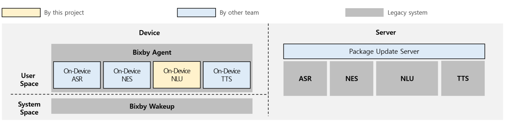
2. 문제 정의
2.1. 과제 배경
AI 음성 비서는 이용자 목소리를 통해 자연어로 요구하면 자연어 이해 기술로 맞춤형
서비스를 제공하는 가상 비서 서비스이다. 이는, 차세대 사용자 인터페이스 중 하나인 Natural
User Interface 로서 5 년 전부터 아마존, 애플 등 글로벌 Tech 기업들이 천문학적인 연구비를
지원하며 육성하고 있는 주요한 분야 중 하나이다. AI 음성 비서 시장 성장률의 한 보고서
(Figure 2)를 참고하면 2025 년엔 미국 가정의 75%가 AI 음성 비서 서비스를 사용할 것이라
전망하고 있다.
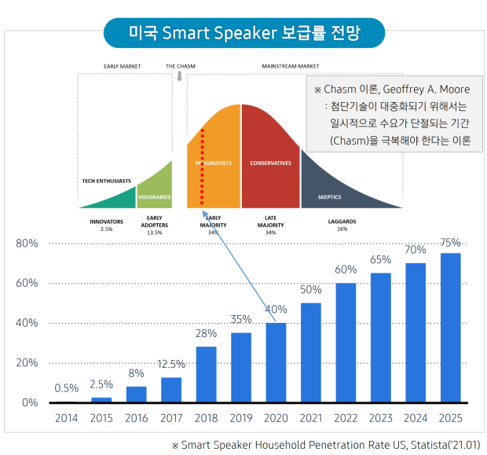
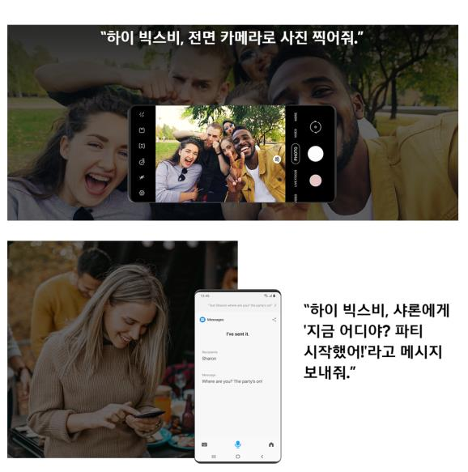
당사 역시 2017 년부터 AI 음성 비서 서비스를 운영 중에 있다. Figure 3 을 보면 동작 예로,
“하이 빅스비, 전면 카메라로 사진 찍어줘.”라고 말하면 빅스비 (Bixby)는 자연어의 의미를
파악하여 단말의 카메라로 사진을 찍어준다. Bixby 는 자연어 이해 기술을 적용한 당사 AI 음성
비서의 대표 브랜드이다.
자연어 (Natural Language)란 우리가 일상 생활에서 사용하는 언어를 말한다. 자연어 처리
(Natural Language Processing)란 이러한 자연어의 의미를 분석하여 컴퓨터가 처리할 수 있도록
하는 일을 말한다. 자연어 이해, 내용 요약, 번역, 사용자의 감성 분석, 텍스트 분류 작업, 질의
응답 시스템, Chat bot 등을 위해 사용된다. 자연어 이해 (Natural Language Understanding)는
자연어의 숨을 뜻을 정확히 알아내어 기계가 이해할 수 있는 다른 표현으로 변환시키는 것을
뜻한다.
Bixby 는 Bixby Application (= Bixby Agent)을 통해 구동시킬 수 있다. 사용자는 단말의 측면
버튼을 누르거나 Bixby Application 의 마이크 버튼을 누르고 음성으로 자연어 명령어를 말하면
Bixby 는 크게 세 단계를 거쳐 사용자가 요청하는 기능을 수행한다. Figure 4 는 음성 처리,
자연어 이해, 그리고 음성 생성 과정을 통해 수행되는 Bixby 서비스의 동작 과정을 나타낸다.
음성 처리 (Automatic Speech Recognition; ASR) 단계는 사용자의 음성을 Text 로 변환하는
역할을 한다. 최근 급격한 기술의 진보로 현재 평균 93% 이상의 정확도를 보이고 있다. Text 로
변환된 사용자 요청은 자연어 이해 (Natural Language Understanding; NLU) 단계에서 사용자의
의도를 분석하고, 이전 대화와의 관계를 통해 관리하고, 요청을 수행한 이후 결과로 자연어
응답을 생성해 낸다. 생성된 자연어 응답은 음성 생성 (Text To Speech; TTS)에 전달되어 Bixby
기본 목소리 또는 다양한 배우, 성우 등 유명인의 목소리로 결과를 사용자에게 전달해 준다.
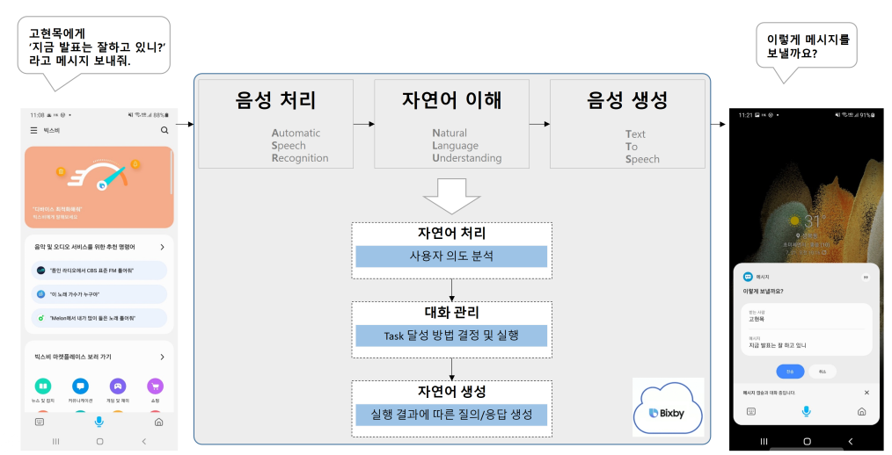
2.2. 과제 필요성
Bixby 를 사용하는 사용자의 수가 급증함에 따라 다양한 요구 사항이 수집되고 있다. 크게
사용자 경험 제고를 위한 것과 당사 경영 기여를 위한 요구사항으로 나눌 수 있다. 수집된 요구
사항을 정리하여 Figure 5 에 나타냈다.
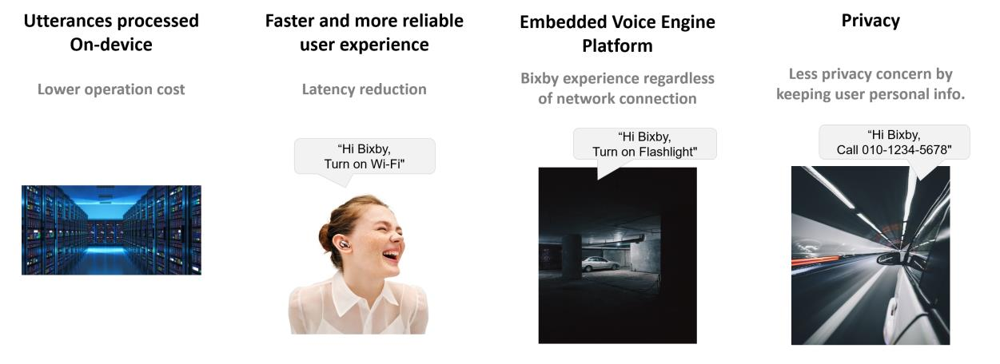
우선, Bixby 사용자 경험 제고를 위해서는 무선 통신 연결이 단절된 음영 지역에서도 Bixby
서비스를 이용할 수 있어야 하고 자주 사용하는 기능은 편차없이 언제나 동일한 속도로 사용자
요청에 응답을 할 수 있어야 한다. 서버로 동작하는 Bixby 는 네트워크 환경에 따라 사용성에
영향을 받는다. 이에, 통신 음영 지역에서도 항상 일정하게 신속한 속도로 Bixby 를 수행시킬 수
있는 방안이 필요하다.
두 번째로, 사용자가 증가하면서 Bixby 서버 유지 비용에 대한 부담이 커지고 있다. 또한,
당사 다양한 단말에 Bixby 서비스 적용을 점차 확대하면서 개발 비용도 증가하고 있다. 아직
Bixby 를 통해 이익을 창출하는 시점이 아니기에 당사 경영 기여를 위한 비용 절감에 대한
노력으로 서버 유지 비용을 줄이고, 다양한 단말로 적용을 확대할 때 개발 및 테스트 비용을
줄일 수 있는 방안이 필요하다.
이외에도, 서버로 개인 정보를 보내는 데 민감한 사용자의 VoC 가 접수되고 있어 이를
대응하기 위한 방안 역시 필요하다. 연속적인 Bixby 사용 경험 및 사용성 제고, 당사 경영
기여를 위해 단말內 최적으로 동작하는 자연어 이해 기술이 어느 때 보다 필요한 시점이다.
2.3. 과제 목표
본 과제는 2.2 절에서 기술한 요구 사항을 만족하기 위한 단말內 최적으로 동작하는 언어
이해 기술 (이하, On-Device NLU) 개발에 관한 것이다. On-Device NLU 는 서버와 연동 없이
단말 내에서 텍스트 형태의 사용자 요청을 입력 받아 사용자 의도를 분석하고 이를 달성하기
위한 명령을 수행하고 수행결과를 바탕으로 자연어 응답을 생성한다. 서버 Bixby 의 기능을
일부 단말에서 수행하여 서버 유지 비용 및 개발 비용을 줄이고, 사용자에게 네트워크 환경과
관계없이 일정하고 신속한 속도로 제공하는 과제의 목표이다.
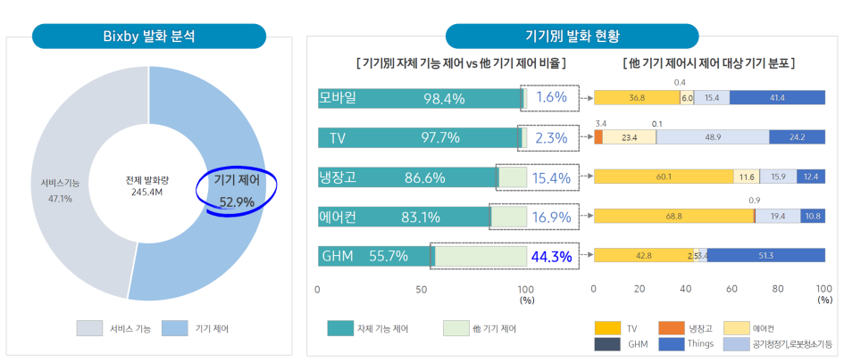
과제 범위를 설정하기 위해 사용자의 Bixby 사용 현황을 참고했다. Figure 6 에서 볼 수 있듯
이 현 Bixby 발화 중 52.9%가 기기 제어와 관련되어 있다. 특히, 모바일 단말의 경우 자체 기능
제어가 98.4%로 대부분을 차지하고 있고, TV 와 냉장고, 에어컨 역시 기기 자체의 기능 제어에
Bixby 가 많이 사용되고 있다. 해당 기기 제어 기능은 단말 자체의 기능을 이용하고 서버에서
제공하는 기능을 필요로 하지 않는다. 즉, 서버와의 연결이 필요하지 않기에 On-Device NLU 로
구현하기에 적합하다. 이에, 단말 내 최적 동작하는 자연어 이해 기술이 최고의 효율을 보일 수
있는 기기 제어 기능 구현을 이 과제의 범위로 한다. (지원 기능은 Appendix 참조)
3. 요구사항
3.1. 요구사항 수집
과제의 주요 Stakeholder 를 정의하고 Stakeholder 의 요구사항을 수집한다.
3.1.1. 주요 Stakeholder 정의
과제의 주요 Stakeholder 및 역할은 하기와 같다.
Table 1. Stakeholder 정의
| Stakeholder | 역할 | 구분 |
|---|---|---|
| End User | 최종 사용자는 Bixby agent에서 사용자에게 제공되는 Bixby 서비스를 소비한다. | 외부 |
| Product Owner | Bixby의 내/외부에서 발생한 VOC를 검토 취합하고, | 내부 |
| 해당 VOC에 대응하는 Note의 기능을 정의하고 개발 | ||
| 여부를 결정한다. | ||
| Product Manager (무선, 영상, 가전 사업부別) | (모바일 단말, TV, 가전 기기 別) Bixby 기능별 개발 / | 내부 |
| 검증 / User Trial 등의 일정을 관리하고 내 외부로부터의 | ||
| 요구사항을 취합하고, 타 부서와의 협업을 담당한다. | ||
| On-Device NLU Developer | 언어이해 AI 모듈 On-Device NLU개발 Bixby agent F/W와 연동을 위한 개발 협업 | 내부 |
| Bixby Capsule PM | Bixby Capsule의 전반적인 개발 방향과 시나리오 설정, 개발 진행 상황 관리를 담당한다. | 내부 |
| Bixby Capsule Developer | Bixby Capsule 개발과 Bixby server, Bixby agent와 서비스 연동을 위한 개발 협업을 담당한다. | 내부 |
| Bixby agent F/W Developer | Voice F/W 기능 개발을 담당한다. | 내부 |
| UX Designer | UX 디자인과 Server와 On-device Bixby사이의 전환 효과를 정의한다. | 내부 |
3.1.2. 요구사항 수집 방법
아키텍처 드라이버 도출을 위하여 아래 그림과 같은 수집 과정을 수립하여 진행하였다.
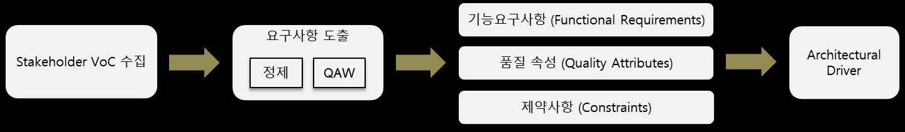
Stakeholder 의 VoC 를 수집하기 위해 초기 프로젝트 준비기간 동안 SR AI 센터 NLP 랩
주관으로SR Tizen 팀, 무선 AI 개발 그룹 framework 팀, VD Intelligence, 가전 Intelligence 팀,
SRI-B NLU 팀과 정기적인 인터뷰 및 이슈 관련 비정기적 인터뷰를 진행하였으며, 해당 인터뷰를
통해 각 팀에서 가지고 있는 요구사항과 이전 구조로 개발을 진행하는 과정에서의 이슈 사항을
청취하였다.
Table 2. 요구사항 수집 방법
| Stakeholder | 수집방법 | 수집 |
|---|---|---|
| 시기 | ||
| End User | 주요 community 조사를 통한 VOC 수집 Email / Samsung Members 을 통한 VOC 수집 | 상시 |
| Product Owner | 주요 협업 회사들간의 Workshop을 통해 취합된 요구사항을 분과회의에서 수집 | 주1회 |
| Product Manager (무선, 영상, 가전 사업부別) | 사용성 설문 결과를 통해 취합된 주요 요구사항을 분과회의에서 수집 | 주1회 |
| On-Device NLU Developer | 분과회의 및 상시 필요한 요구사항을 미팅으로 수집, 비 정기 인터뷰 (매월 정기 미팅 포함) | 상시 |
| Bixby Capsule PM | 품질 관련 도출된 요구사항을 주 1회 분과회의에서 수집 | 주 1회 |
| Bixby Capsule Developer | 분과회의 및 상시 필요한 요구사항을 미팅으로 수집, 비 정기 인터뷰 (매월 정기 미팅 포함) | 상시 |
| Bixby agent F/W Developer | 분과회의 및 상시 필요한 요구사항을 미팅으로 수집, 비 정기 인터뷰 (매월 정기 미팅 포함) | 상시 |
| UX Designer | 분과회의 및 상시 필요한 요구사항을 미팅으로 수집 | 주1회 |
3.1.3. 수집된 요구사항
상기 Stakeholder 들로부터 수집된 요구사항은 하기와 같다.
Table 3. 수집된 요구사항 목록
| Req. # | 분류 | Headline |
|---|---|---|
| Description | ||
| RQ-01 | 내부/기술 | Support device control functionalities On-Device AI 기술로 언어이해, 계획 및 실행을 단말內에서 수행하며, Server Bixby에서 제공하는 기기 제어 기능을 제공한다. |
| RQ-02 | 내부/기술 | Minimum latency 사용자의 요청 직후 시스템은 응답한다. |
| RQ-03 | 내부/기술 | Reuse server Bixby resources 추가 개발 비용을 줄이기 위해 Server Bixby 에서 사용하는 훈련 데이터를 재활용한다. |
|---|---|---|
| RQ-04 | 외부/Biz | Insensitive to changes of server Bixby UI 일반적으로 단말 업데이트 주기는 서버의 업데이트 주기보다 길다. On-Device NLU는 UI 변경에 의한 영향이 작아야 한다. |
| RQ-05 | 내부/기술 | Independency from OS system OS에 관계없이 On-Device NLU는 수행할 수 있어야 한다. |
| RQ-06 | 내부/기술 | Flexibility for new requirements or requirement changes UX 요구사항 변경을 포함하여 신규 요구사항과 요구사항 변경 요청에 빠르게 대응할 수 있어야 한다. |
| RQ-07 | 외부/Biz | Support AI functionalities on low-end devices 이미 시장에 배포된 단말들에서도 동작할 수 있다. |
| RQ-08 | 외부/Biz | User Privacy 사용자 개인 정보는 서버로 전달되어서는 안된다. |
| RQ-09 | 내부/Biz | Quickly reflect of server Bixby feature changes Bixby 는 자사 서비스의 통합된 환경을 제공하고 있기 때문에 지속적으로 개발이 진행 중이며, On-Device NLU 는 이러한 개발 과정과 병렬적으로 진행되어야만 한다. 이를 위해 Server Bixby 의 변경을 빠르게 반영할 수 있어야 한다. |
| RQ-10 | 내부/기술 | Unit test Unit test를 통해 연동 기능을 테스트 할 수 있어야만 한다. |
| RQ-11 | 내부/기술 | Identical user experience of server and On-Device NLU 사용자는 Server Bixby와 On-Device NLU의 차이를 구분할 수 없다. |
| RQ-12 | 내부/Biz | Easy update and release 업데이트 및 배포는 용이해야 한다. |
| RQ-13 | 내부/기술 | Transition between Server Bixby and On-Device NLU 사용자는 On-Device NLU의 우선 사용여부를 설정할 수 있다. |
3.2. 요구사항 도출
3.2.1. 요구사항 정제
상기 수집된 요구사항들에 대해서 주요 Stakeholder 와 추가 질의 응답 및 상세화 협의를
통해 하기와 같이 정제 하였다.
Table 4. 추가 정제된 요구사항
| Req. # | 요구사항 및 설명 | 정제 종류 |
|---|---|---|
| RQ-02 | Minimum latency 사용자의 요청이 음성 인식을 통해 텍스트 형태의 입력으로 언어이해 모듈에 전달된 이후, 사용자의 의도 분석 및 시스템 동작 수행 요청까지 250ms 이내에 동작해야 한다. | 정량화 |
| RQ-03 | Reuse Server Bixby Capsule Model On-Device NLU의 모델 개발은 추가적인 개발 비용이 발생한다. 다음의 제약사항을 고려하여 Server Bixby의 Capsule Model 이 재활용 될 수 있도록 해야한다. - Server Bixby의 Capsule Model은 한달 주기로 업데이트 된다. - 모델 생성을 위해 작성된 Capsule 내용에 변경을 가해서는 안된다. - Server Bixby에 새로운 Capsule Model이 배포되고 2주 이내에 On-Device NLU의 모델에 변경사항이 반영되어 업데이트 되어야 한다. | 상세화 |
| RQ-06 | Flexibility for new requirements or requirement changes UX요구사항 변경을 포함하여 신규 요구사항과 요구사항 변경 요청에 빠르게 대응할 수 있어야 한다. 이는 사업부別 서로 다른 H/W 사양에 빠르게 적용하는 것도 포함한다. | 상세화 |
| RQ-07 | Support AI functionalities on low-end devices 이미 시장에 배포된 단말들은 메모리 크기가 작다. 이 단말에서도 충분히 동작할 수 있도록 RAM 사용량은 500MB 이내로 제약한다. 또한, 연동을 위해 Bixby Agent등 기존 설치된 Apps. 들의 변경이 있어서는 안된다. | 정량화 |
| RQ-09 | Quickly reflect of server Bixby feature changes 학습을 제외한 추론 엔진은 쉽게 교체 가능하고 유지보수가 용이한 S/W 구조여야 한다. | 상세화 |
| RQ-11 | Identical user experience of Server and On-Device NLU 사용자는 Bixby를 사용할 때, 이것이 어디에서 수행되고 있는지 크게 개의치 않는다. 대신, 사용할 때 마다 시스템에서 다른 결과를 준다면 사용자 경험을 크게 저해할 수 있다. 따라서, 아래를 고려해서 개발되어야 한다. - On-Device NLU에서 처리할 수 있는 발화와 처리할 수 없는 발화를 명확히 구분할 수 있어야 한다. - On-Device NLU에서 처리할 수 없는 발화들은 Server Bixby로 보내 처리될 수 있어야 한다. - On-Device NLU는 network 상태와 관계없이 동작할 수 있어야 한다. | 상세화 |
| RQ-14 | Easy deprecate 구 버전 ODB에 대한 지원이 더 이상 없는 경우, 하위 호환을 위해 추가된 코드들은 손쉽게 제거 가능해야 한다. | 추가 |
3.2.2. 기능 요구 사항 (Functional Requirements)
상기 정제된 요구사항을 최종 협의를 통해 다음과 같은 최우선 기능 요구사항을 선정하였다.
| 구분 | 내용 |
|---|---|
| ID | FR-01 |
| Actor | Application |
| Title | 사용자 요청이 처리될 Capsule 또는 Rejection 결정 (Classifying and Rejection) |
| Description | Text로 입력된 사용자 요청이 처리될 Capsule이 무엇인지 분류한다. 서버에서 처리되어야 하는 요청은 Rejection 한다. 사용자 요청이 처리 가능한지 분석하기 위해 사용된다. (RQ-01로부터 도출) |
| 구분 | 내용 |
|---|---|
| ID | FR-02 |
| Actor | Application |
| Title | 사용자 의도 분석 및 개체 명 추출 |
| Description | 사용자 요청과 특정 Capsule 이름과 함께 주어진 경우, 해당 Capsule에서 요청의 의도(Intent)를 분석하고 개체 명 (Named Entity; NE)을 추출한다. 특정 Capsule 이름이 주어지지 않은 경우 FR-01을 이용하여 처리될 Capsule를 결정한 뒤 해당 Capsule에서 Intent 분석 NE 추출이 수행된다. (RQ-01로부터 도출) |
| 구분 | 내용 |
|---|---|
| ID | FR-03 |
| Actor | Application |
| Title | 사용자 요청 처리 |
| Description | Intent와 NE를 인자로 시스템 액션의 수행 계획을 세우고, 계획대로 시스템 액션을 실행한다. 시스템 액션을 실행하는 과정에서 외부 시스템 (External Process)의 기능 수행이 필요한 경우 Client Function Call (CFC)로 요청한다. (RQ-01로부터 도출) |
| 구분 | 내용 |
|---|---|
| ID | FR-04 |
| Actor | Application |
| Title | 기능 실행 결과로 자연어 응답 생성 |
| Description | 시스템 내부 기능을 실행한 결과 또는 CFC로 외부 시스템 (External Process)의 기능 수행 요청 후 실행 결과를 받으면, 수행 결과를 반영하여 자연어 응답을 생성한다. (RQ-01로부터 도출됨.) |
3.2.2.1. Use-Case 도출
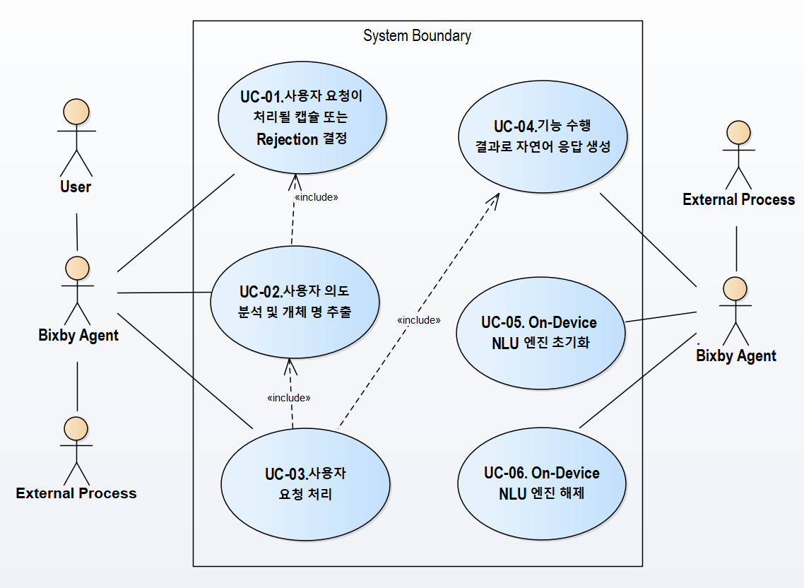
UC-01. 사용자 요청이 처리될 Capsule 또는 Rejection 결정 (Classifying and Rejection)
| Description | Text로 입력된 사용자 요청이 처리 될 Capsule이 무엇인지 결정한다. On- Device NLU에서 처리될 수 없는 요청은 Rejection 되어야 한다. (FR-01에서 도출) | |
|---|---|---|
| Actor | Bixby Agent, User, External Process | |
| Pre-Condition | On-Device NLU 엔진은 초기화 되어 있다. | |
| Flow | Basic | 1. Bixby Agent는 사용자 발화를 텍스트 형태로 On-Device NLU에 전달한다. 2. 미리 정의된 단순 명령어이면 의미를 반환한다. 3. 특정 Capsule 이름이 포함되어 있으면 Capsule ID를 반환한다. 4. 특정 기기 이름이 포함되어 있는지 기기 ID를 반환한다. 5. 처리되어야 할 Capsule을 결정하여 Capsule ID를 반환한다. |
| Alternative | 2-a. On-Device NLU 처리 범위가 아니면 거절을 (Rejection) 반환한다. 5-a. On-Device NLU 처리 범위가 아니면 거절을 (Rejection) 반환한다. 5-a. On-Device NLU 처리 범위가 아니면 거절을 (Rejection) 반환한다. | |
| Post-Condition | Bixby Agent는 Rejection을 전달 받으면, 사용자 요청을 서버로 전달한다. | |
UC-02. 사용자 의도 분석 및 개체 명 추출
| Description | Text로 입력된 사용자의 발화에서 의도(Intent)와 개체 명 (Named Entity; NE)를 추출 및 분석한다. (FR-02에서 도출) | |
|---|---|---|
| Actor | Bixby Agent, External Process | |
| Pre-Condition | On-Device NLU 엔진은 초기화 되어 있다. | |
| Flow | Basic | 1. Bixby Agent는 Text 형태의 사용자 발화를 On-Device NLU에 전달한다. External Process에서 특정 Capsule 이름이 주어지면 같이 전달한다. 2. 특정 Capsule 이름이 주어지지 않은 경우, UC-01을 이용하여 사용자 요청이 처리된 Capsule ID를 얻는다. 3. Capsule ID의 언어 이해 모델로 Intent를 분석하고 NE를 추출한다. 4. Intent와 NE를 INTENT라는 데이터 구조로 표현하여 반환한다. |
| Alternative | 2-a. On-Device NLU 처리 범위가 아니면 거절을 (Rejection) 반환한다. | |
| Post-Condition | Bixby Agent는 Rejection을 전달 받으면, 사용자 요청을 서버로 전달한다. | |
UC-03. 사용자 요청 처리
| Description | INTENT(Intent, NE로 구성된 데이터 구조)를 인자로 시스템 액션의 수행 계획을 세우고, 계획대로 시스템 액션을 실행한다. (FR-03에서 도출) | |
|---|---|---|
| Actor | Bixby Agent, External Process | |
| Pre-Condition | On-Device NLU 엔진은 초기화 되어 있다. | |
| Flow | Basic | 1. Bixby Agent는 INTENT를 On-Device NLU에 전달한다. 만약, 텍스트 형태의 사용자 발화가 주어지면 UC-02를 이용하여 INTENT를 얻는다. 2. INTENT를 인자로 시스템 액션을 수행할 계획 (Execution Plan)을 세운다. 3. Plan에 따라 시스템 액션을 수행한다. 4. 시스템 수행 결과를 반영하여 UC-04를 이용하여 자연어 응답을 생성한다. |
| Alternative | 2-a. 시스템이 Prompt상태이면, 이전 Execution Plan과 처리 상태를 불러온다. 그리고, 다시 시스템 액션을 수행한다. 3-a. 수행 도중 INTENT에 필요한 정보가 부족한 경우 Interrupt를 발생시키고 현재 상태를 저장한 후 시스템을 Prompt 상태로 변경한다. Bixby Agent에게 현재 상태가 반환한다. 3-b. External Process의 기능 수행이 필요하면 Client Function Call (CFC) 로 요청한다. | |
| Post-Condition | Bixby Agent는 Rejection을 전달 받으면 해당 사용자 요청은 서버로 전달 하고 자연어 응답을 전달 받으면 TTS로 음성출력한다. | |
UC-04. 기능 실행 결과로 자연어 응답 생성
| Description | 시스템 내부 기능을 실행한 결과 또는 CFC 로 외부 시스템 (External Process)의 기능 수행 요청 후 실행 결과를 받으면, 수행 결과를 반영하여 자연어 응답을 생성한다. (FR-04에서 도출) |
|---|---|
| Actor | Bixby Agent, External Process |
| Pre-Condition | On-Device NLU 엔진은 초기화 되어 있다. | |
|---|---|---|
| Flow | Basic | 1. UC-03에서 시스템 내부 기능을 수행하여 결과를 전달 받거나, CFC 요청 후 Bixby Agent로부터 External Process의 수행 결과를 전달 받는다. 2. 수행 결과를 반영하여 자연어 응답을 생성한다. |
| Alternative | ||
| Post-Condition | Bixby Agent는 자연어 응답을 전달 받으면 TTS로 음성출력한다. | |
UC-05. On-Device NLU 엔진 초기화
| Description | Bixby agent가 구동되는 시점에 On-Device NLU 엔진 초기화 (FR-01, FR-02, FR- 03에서 도출) | |
|---|---|---|
| Actor | Bixby Agent | |
| Pre-Condition | ||
| Flow | Basic | 1. Bixby Agent는 On-Device NLU 엔진 초기화 요청을 보낸다. 2. NLU 엔진이 정상적으로 초기화 되면, 성공한 결과를 반환한다. |
| Alternative | 2-a. 이미 생성되어 있다면, 성공한 결과를 반환한다. 2-b. 초기화에 실패하면, 실패한 결과를 반환한다. | |
| Post-Condition | ||
UC-06. On-Device NLU 엔진 해제
| Description | 사용자 요청이 처리된 후, Bixby Agent 요청으로 On-Device NLU 엔진을 메모리에서 해제 (FR-03, FR-04에서 도출) | |
|---|---|---|
| Actor | Bixby Agent | |
| Pre-Condition | On-Device NLU 엔진은 초기화 되어 있다. | |
| Flow | Basic | 1. Bixby Agent는 On-Device NLU 엔진 해제 요청을 보낸다. 2. NLU 엔진이 정상적으로 해제 되면, 성공한 결과를 반환한다. |
| Alternative | 2-a. 이미 해제되어 있다면, 성공한 결과를 반환한다. 2-b. 해제에 실패하면, 실패한 결과를 반환한다. | |
| Post-Condition | ||
3.2.3. 제약 사항 (Constraints)
제약 사항에는 기능적인 제약 사항과 비기능적인 제약사항이 있다. 기능적인 제약 사항은
기능 요구사항과 함께 고려하여 Domain Model 설계 시 함께 반영되어야만 한다.
| 구분 | 내용 |
|---|---|
| ID | CR-1 |
| Attribute | Modifiability (기능제약사항) |
| Title | Bixby Agent 와 Native Apps의 변경없이 동작 (RQ-07로부터 도출됨.) |
|---|---|
| Description | Bixby Agent 는 Service Bixby 와 Client-Server 구조로 동작하고 있다. On-Device NLU 기능을 추가하기 위해 기존에 설치된 Native Apps 와 Bixby Agent 의 변경을 가해서는 안된다. Bixby Agent는 Native Apps와 CFC를 주고 받는다. |
| 구분 | 내용 |
|---|---|
| ID | CR-2 |
| Attribute | Portability (비기능제약사항) |
| Title | Android/Tizen Platform내 동작 |
| Description | Android 와 Tizen OS를 지원하는 모든 단말에서 동작한다. (RQ-05에서 도출됨.) |
| 구분 | 내용 |
|---|---|
| ID | CR-3 |
| Attribute | Privacy (비기능제약사항) |
| Title | 개인 정보 보호 |
| Description | On-Device NLU 를 사용하는 동안 시스템에서 활용되는 개인 민감 정보는 서버로 전송되지 않아야 한다. (RQ-08에서 도출됨.) |
3.2.4. Domain Model
상기 선정된 기능 요구사항과 기능적 제약사항을 분석하여, 각 기능이 수행될 수 있도록 작성된
Domain Model 은 다음과 같다.
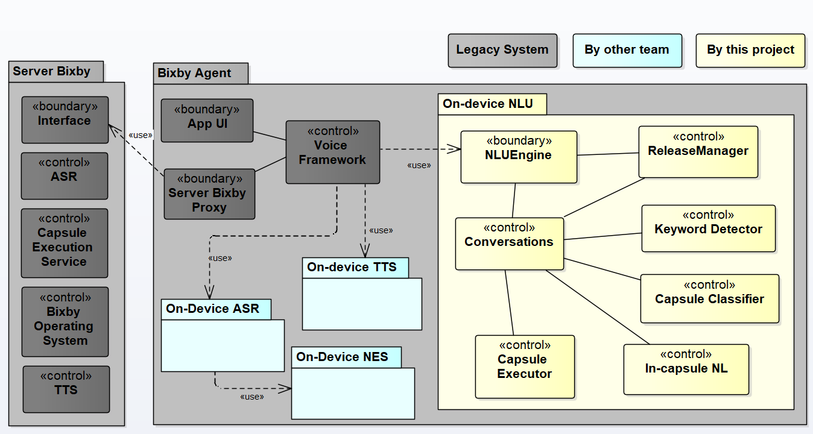
도출된 각 컴포넌트의 이름과 역할은 하기와 같다. 컴포넌트 내 모듈의 자세한 설명은 4.1.3 절의
‘Module 상세 설명’ 테이블에 기술한다.
Table 5. Domain Model 내 Component 별 설명
| Component | 설명 |
|---|---|
| On-Device NLU | 텍스트 형태의 사용자 요청을 입력 받아 사용자 의도를 분석하고 이를 달성하기 위한 시스템 액션을 수행하고 결과를 바탕으로 자연어 응답을 생성한다. |
| NLU Engine | On-Device NLU를 사용하기 위한 Boundary 객체 (UC-01, UC-02, UC-03, UC-04, UC-05, UC-06) |
| Release Manager | Conversation객체를 생성 및 삭제를 담당. (UC-05, UC-06) |
| Conversations | 사용자 요청을 기록하고 관리한다. 전반적인 Data Flow를 제어. (UC-01, UC-02, UC-03, UC-04, UC-05, UC-06) |
| Keyword Detector | 미리 정의된 단순 명령어 의미 추출. “메시지 앱에서~”, “거실에 있는 TV에서~”에서 특정 Capsule이름 또는 기기 이름 추출. (UC-01, UC-05, UC-06) |
| Capsule Classifier | 특정 키워드가 포함되지 않은 사용자 발화가 처리될 Capsule을 결정. (UC-01, UC-05, UC-06) |
| In-Capsule NL | 특정 Capsule에서 사용자 발화를 분석하여 INTENT 생성. (UC-02, UC-05, UC-06) |
| Capsule Executor | INTENT로 Execution Plan을 생성하고 이에 따라 시스템 액션을 수행한다. 수행 결과를 반영하여 자연어 응답을 생성한다. (UC-03, UC-04, UC-05, UC-06) |
Domain Model 에서 UC-01 부터 UC-06 까지의 Flow 는 아래와 같다.
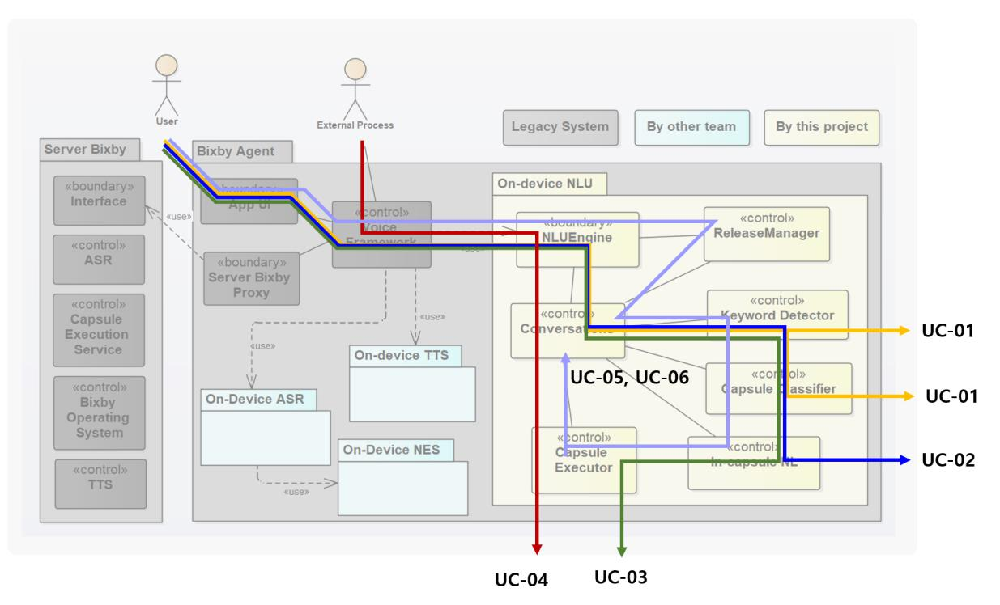
3.2.5. 시스템 경계
Table 6. Domain Model 내 외부 Component 별 설명
| 외부 컴포넌트 | 설명 |
|---|---|
| Bixby Agent | 당사 AI 음성 비서 어플리케이션으로 사용자가 Bixby 버튼을 누르거나 ‘하이~빅스비’ 라고 부르면 구동되어 사용자 음성 요청을 처리한다. 전형적인 Client-Server 아키텍처 스타일로 Server Bixby Proxy를 통해 Server Bixby와 연동되어 서비스 중이다. |
| App UI | Bixby Agent의 Entry Point로 UI를 가짐 |
| Voice Framework | App UI와 Server Bixby 사이에서 흐름을 제어. 이후, On-Device ASR, NLU, TTS가 적용되면 이 엔진들의 흐름을 제어하는 역할 |
| Server Bixby Proxy | Server Bixby로 연결을 담당 |
| Capsule Execution Service | Server Bixby Front End. ASR, Bixby Operating System, TTS의 흐름 제어 |
| Bixby Operating System | Server Bixby의 자연어 이해 엔진 |
| ASR | Server Bixby의 음성 처리 엔진 |
| TTS | Server Bixby의 음성 합성 엔진 |
| On-Device ASR | On-Device에서 사용자 음성을 입력 받아 텍스트 형태로 출력 |
| On-Device NES | On-Device에서 구축한 NES |
| On-Device TTS | On-Device에서 자연어 응답을 입력으로 음성을 출력 |
| External Process | Calendar, Reminder, Alarm, Gallery, 멜론 등 Bixby Agent와 연동되어 동작하는 외부 어플리케이션 또는 시스템 |
3.3. 품질속성 (Quality Attribute) 선정
원칙적으로 아키텍처 설계의 기준이 되는 Architecture Driver를 선정하려면, 모든
Stakeholder 들이 모여 QAW(Quality Attribute Workshop)을 통해 우선순위를 정해야 한다.
하지만, 코로나 상황임을 고려하여 본 과제를 제안한 부서와의 정기(한달에 1 번) 및 비정기적
회의를 통해 항목별 utility tree 를 도출하였다. 유관 부서 간에 이해가 상충되는 품질 속성들은
무선 개발 그룹 TPM 팀과 항목별 tradeoff 를 고려하여 장단점을 분석 한 후 유관 부서별
의견을 취합하여 조정하였다.
3.3.1. 품질속성 시나리오(Quality Attribute Scenario)
수집된 요구 사항을 기반으로 도출한 주요 품질 요구 사항에 대한 품질 시나리오는 다음과
같다. Attribute 정의는 ISO/IEC 25010 에 정의된 ‘Software product quality model’을 기본으로
하여, ‘Software architecture in practice 3rd edition’ 4 장에 정의한 품질 속성을 참고하였다.
| QS-01 | Performance | 신속한 응답속도 |
|---|---|---|
| Description | Bixby Agent로부터 전달받은 Text 형태의 사용자의 요청을 신속하게 처리하고 응답할 수 있어야 한다. 외부 시스템 수행 시간 제외한다. (RQ-02에서 도출됨.) | |
| Source | Bixby Agent, User | |
| Stimulus | Bixby Agent로부터 Text 형태의 사용자 발화 처리 요청 | |
| Artifact | Bixby Agent, On-Device NLU | |
| Environment | Runtime | |
| Response | Text 형태의 사용자 발화가 전달되면, INTENT 생성, 시스템 액션 수행, 자연어 응답 생성하여 Bixby Agent에게 전달한다. | |
| Response Measure | [사용자 의도 분석 + 시스템 수행 요청 + 자연어 응답 생성] ≤ 250ms | |
| QS-02 | Performance | RAM 사용량 최소화 |
|---|---|---|
| Description | 단말에서 사용자 의도 분석, 시스템 액션 계획 수립 및 수행, 자연어 응답 생성 시 RAM 사용량은 최소화되어야 한다. (RQ-07에서 도출됨.) | |
| Source | Bixby Agent, User | |
| Stimulus | Bixby Agent로부터 Text 형태의 사용자 발화 처리 요청 | |
| Artifact | On-Device NLU | |
| Environment | Runtime | |
| Response | Bixby agent에서 텍스트로 변환된 사용자 요청이 NLU 모듈에 전달 된 이후, 단말에서 사용하는 RAM은 최적으로 수행되며 NLU의 모든 과정이 수행된다. | |
| Response Measure | [사용자 요청 처리 시 RAM 사용량] ≤ 500MB | |
| QS-03 | Maintainability | Rejection을 위한 관리비용 최소화 |
|---|---|---|
| Description | On-Device NLU의 Capsule 지원 범위가 변경되면 사용자에게 즉시 변경된 SW가 Release 될 수 있어야 한다. (RQ-06에서 도출됨.) | |
| Source | 각 사업부 Bixby PM, 개발자 | |
| Stimulus | On-Device NLU에서 처리되는 Capsule 및 사용자 요청의 범위 변경 | |
| Artifact | On-Device NLU | |
| Environment | 개발/Debug 단계 | |
| Response | On-Device NLU엔진에서 처리되는 Capsule 및 사용자 요청의 범위가 변경된다. | |
| Response Measure | [필요한 리소스] ≤ 4MM | |
| QS-04 | Modifiability | H/W 사양에 따른 최적의 엔진 구축 비용 최소화 |
|---|---|---|
| Description | On-Device NLU는 다양한 기기를 지원하기 위해 H/W 사양에 따라 최적으로 동작할 수 있는 조합으로 구성될 수 있어야 한다. 이때, 엔진을 구현하고 테스트 하는 비용을 최소화할 수 있는 S/W 구조여야 한다. (RQ-06에서 도출됨.) | |
| Source | 각 사업부 Bixby PM, 개발자 | |
| Stimulus | H/W 사양에 따른 최적화 | |
| Artifact | On-Device NLU | |
| Environment | 개발/Debug 단계 | |
| Response | 사업부 요구사항 또는 H/W 사양에 따라 최적화된 구조로 엔진이 구현되고 테스트 수행 후 산출물이 배포된다. | |
| Response Measure | [필요한 리소스] ≤ 2MM | |
| QS-05 | Modifiability | 새로운 기술 적용 용이 |
|---|---|---|
| Description | 언어 이해 기술의 발전에 따라 다양한 새로운 기술에 대한 적용이 용이한 S/W 구조여야 한다. (RQ-09에서 도출됨.) | |
| Source | 각 사업부 Bixby PM, 개발자 | |
| Stimulus | 사용자 경험 제고, 새로운 기술 등장 | |
| Artifact | On-Device NLU | |
| Environment | 개발/Debug 단계 | |
| Response | 언어 이해와 관련하여 새로운 기술 개발이 완료되면, 그 기술이 적용되어 On- Device NLU 엔진이 구현되고 테스트 수행 후 산출물이 배포된다. | |
| Response Measure | [기술 개발 후부터 필요한 리소스] ≤ 4MM | |
| QS-06 | Deployability | 업데이트 및 배포 용이성 |
|---|---|---|
| Description | 성능 향상 및 버그 수정을 위해 업데이트를 하기 쉬운 S/W 구조여야 한다. (RQ-12에서 도출됨.) | |
| Source | 각 사업부 Bixby PM, 개발자 | |
| Stimulus | 문제점 발견, 교체 요청 | |
| Artifact | On-Device NLU | |
| Environment | Runtime/Debug-mode | |
| Response | Make modification, Test modification, Deploy modification | |
| Response Measure | [기술 개발 후부터 필요한 리소스] ≤ 8MM [배포되는 APK 전체 크기] ≤ 500 MB | |
| QS-07 | Testability | 검증 용이성 |
|---|---|---|
| Description | On-Device NLU내 Module 별 테스트 용이성 제공 (RQ-10에서 도출됨.) | |
| Source | 개발자 | |
| Stimulus | 모듈 별 기능 테스트 |
|---|---|
| Artifact | On-Device NLU |
| Environment | 개발/Debug 단계 |
| Response | unit/E2E test 수행 후 결과 획득 |
| Response Measure | [Unit test/e2e 수행 결과 functional coverage) ≥ 95% |
| QS-08 | Portability | 다른 OS 이식 용이성 |
|---|---|---|
| Description | Android/Tizen OS에서 사용할 수 있어야 한다. (RQ-05에서 도출됨.) | |
| Source | 각 사업부 Bixby PM, 개발자 | |
| Stimulus | 당사 다양한 단말에 적용 요청 | |
| Artifact | On-Device NLU | |
| Environment | 개발/Debug 단계 | |
| Response | Make modification, Test modification, Deploy modification | |
| Response Measure | [필요한 리소스] ≤ 4MM | |
| QS-09 | Security | 개인 정보 보호 |
|---|---|---|
| Description | 개인 정보는 서버로 전달되어서는 안된다. (RQ-08에서 도출됨.) | |
| Source | 사용자 | |
| Stimulus | 사용자 요청이 On-Device NLU에 전달된다. | |
| Artifact | On-Device NLU | |
| Environment | Runtime | |
| Response | 개인정보 전송 여부 확인 | |
| Response Measure | [Runtime 중 개인 민감 정보 서버 전송 데이터 크기] ≤ 0 | |
3.3.2. Utility Tree
상기 품질 요구 사항들에 대해서 Stakeholder 들과 함께 QAW(Quality Attribute Workshop)을
진행하였다. 중요도와 개발 난이도 측면에서 각 3 단계(H/M/L)로 구분하여 우선 순위에 따라
다음의 품질 요구 사항을 ASR (Architectural Significant Requirements)로 선정하였다.
Table 7. 전개된 Utility Tree 상의 Quality Attribute 목록
| ID | QA | Refinement | Scenario | 중요 | 난이 | 우선 |
|---|---|---|---|---|---|---|
| 도 | 도 | 순위 | ||||
| QA-01 | Performance | 신속한 응답속도 | 사용자의 요청에 250ms이내 반응 | H | H | 1 |
| 사용자의 요청에 250ms이내 |
|---|
| 반응 |
| QA-02 | Performance | RAM 사용량 최소 | 사용자의 요청 처리 시 RAM 사용량 500MB이내 | H | H | 1 |
|---|---|---|---|---|---|---|
| QA-03 | Maintainability | Rejection 관리비용 최소화 | Capsule 지원 범위 변경에 리소스가 4MM 이하 | H | M | 2 |
| QA-04 | Modifiability | H/W 사양別 | H/W 사양別 컴포넌트 최적 구성 개발 리소스 2MM 이하 | M | M | 3 |
| 엔진 최적화 | ||||||
| 비용 최소화 | ||||||
| QA-05 | Modifiability | 새로운 기술 적용 용이 | 새로운 자연어 처리 기술 개발 | M | L | 4 |
| 후 시스템 적용에 필요한 리소스 | ||||||
| 4MM 이하 | ||||||
| QA-06 | Deployability | 업데이트 및 배포 용이 | 버그 수정 및 성능 향상 후 업데이트 및 배포에 필요한 리소스 8MM 이하, 배포되는 APK 크기는 500MB 이하 | M | L | 4 |
| QA-07 | Testability | 검증 용이성 | Unit Test 가능 | M | L | 5 |
| QA-08 | Portability | 다른 OS 이식 용이성 | 다양한 OS로 이식 용이 | L | L | 5 |
| QA-09 | Security | 개인 정보 보호 | 단말內 저장된 개인 정보가 서버로 전달하지 않음. | L | L | 5 |
| RAM 사용량 |
|---|
| 최소 |
| 사용자의 요청 처리 시 RAM |
|---|
| 사용량 500MB이내 |
| Rejection |
|---|
| 관리비용 최소화 |
| Capsule 지원 범위 변경에 |
|---|
| 리소스가 4MM 이하 |
| H/W 사양別 컴포넌트 최적 구성 |
|---|
| 개발 리소스 2MM 이하 |
| 새로운 기술 |
|---|
| 적용 용이 |
| 버그 수정 및 성능 향상 후 |
|---|
| 업데이트 및 배포에 필요한 |
| 리소스 8MM 이하, 배포되는 APK |
| 크기는 500MB 이하 |
| 업데이트 및 |
|---|
| 배포 용이 |
| 다른 OS 이식 |
|---|
| 용이성 |
| 단말內 저장된 개인 정보가 |
|---|
| 서버로 전달하지 않음. |
3.4. 아키텍처 드라이버 선정
아래 그림은 선정된 아키텍처 드라이버를 통해 달성하고자 하는 과제의 목표를 나타낸다.
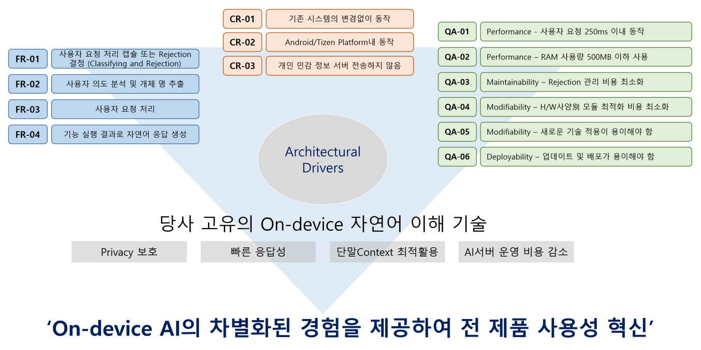
기능 요구 사항, 제약 사항 및 Utility Tree 로부터 도출된 품질 속성을 고려하여, 시스템 구조
설계에 영향을 주는 아키텍처 드라이버를 다음과 같이 선정하였다.
Table 8. 아키텍처 드라이버
| Functional Requirements | |
|---|---|
| FR-01 | 사용자 요청이 처리될 Capsule 또는 Rejection 결정 (Classifying and Rejection) |
| FR-02 | 사용자 의도 분석 및 개체 명 추출 |
| FR-03 | 사용자 요청 처리 |
| FR-04 | 기능 실행 결과로 자연어 응답 생성 |
| Quality Attributes | |
| QA-01 | Performance – 신속한 응답 속도 (사용자 요청 250ms 이내 동작) |
| QA-02 | Performance – RAM 사용량 최소 (RAM 사용량 500MB 이내 사용) |
| QA-03 | Maintainability – Rejection 관리 비용 최소화 |
| QA-04 | Modifiability – H/W 사양別 모듈 최적화 비용 최소화 |
| QA-05 | Modifiability – 새로운 기술 적용 용이 |
| QA-06 | Deployability – 업데이트 및 배포 용이 |
| Constraints | |
| CR-01 | 기존 시스템의 변경없이 동작 |
| CR-02 | Android/Tizen Platform내 동작 |
| CR-03 | 개인 민감 정보 서버 전송하지 않음 |
4. 설계
4.1. 아키텍처 분석
아키텍처 분석 단계에서는 선정한 아키텍처 드라이버를 만족하는 시스템을 설계하기 위하여
아키텍처 분석을 실시하였다.
4.1.1. Viewpoint 선정
시스템의Architecture 를 설명하기 위해 다음의 Viewpoint 를 선정하였다.
Table 9. Viewpoint
| Viewpoint | Description |
|---|---|
| Context | 시스템의 경계(Boundary)를 정의한다. 목표 시스템과 목표 시스템이 |
| 동작하는 환경과의 관계, 의존성, 상호작용 등을 기술한다. | |
| Module | 시스템의 기능 요소, 각 기능 요소의 역할, 각 기능 요소 간 의존성 및 |
| 인터페이스 등을 기술한다. | |
| Behaviour | 시스템이 동작하는 환경에서 발생하는 이벤트들에 어떻게 반응하는지, |
| 그리고 해당 이벤트를 처리하기 위해 각 기능 컴포넌트 간에 어떠한 상호 | |
| 작용이 이뤄지는 지 기술한다. | |
| Final Module | 최종 아키텍처 설계 안을 반영한 Module View이다. |
| Deployment | 시스템이 실제 적용될 환경에 대해 기술한다. |
설계 과정에서는 상기 viewpoint 들을 활용하여 최종 Architecture 로의 전개 과정을 다음의
단계별로 기술한다.
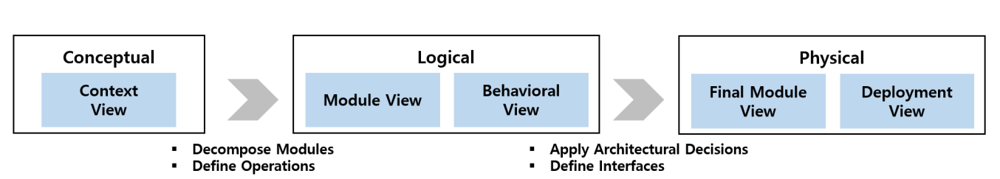
4.1.2. Context View
대상 시스템은 실제 운용 환경에서 외부의 다른 리소스들과 상호작용을 수행한다. Context
View 에서는 상호 작용하는 외부 시스템과 대상 시스템의 경계(System Boundary)에 대해
기술함으로써 시스템의 설계 범위를 명확하게 이해할 수 있으며, 목표 시스템이 동작하는
환경과의 관계 의존성을 파악할 수 있다. 아래는 Data Flow Diagram (DFD Level-0)를 통해 대상
System 과 주변 환경과의 관계를 기술하였다.
On-Device NLU 는 사용자 자연어 요청에서 의도를 분석하고 이를 달성하기 위한 명령어를
수행하여 그 결과를 바탕으로 자연어 응답을 생성하는 이 과제의 목표 시스템이다. Bixby
Agent 는 당사 AI 음성 비서 어플리케이션으로 On-Device NLU 기능을 호출하여 사용자의
요청을 받고 처리 결과를 출력하는 Entry point 다. External Process 는 On-Device NLU 에서
사용자 요청을 처리하는 과정에서 필요한 기능을 수행하는 (외부)시스템 이다. 안드로이드 Deep
link 를 이용하여 메시지를 주고 받는다. On-Device NLU RSRC 는 서버 Capsule 을 On-Device
NLU 에서 사용하고 있는 형태로 변경하여 저장하고 있다.
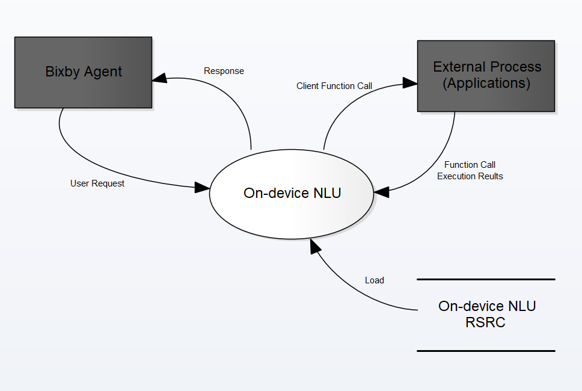
4.1.3. Module View
다음은 0 절의 Domain Model 에서부터 도출된 컴포넌트들을 3.4 절의 Architecture Driver 의
기능 요구사항과 제약 사항들을 만족하기 위해 기존 모듈을 세분화하고 신규 모듈을 추가하여
Component-based Style 로 재배치한 시스템의 Module View 이다.
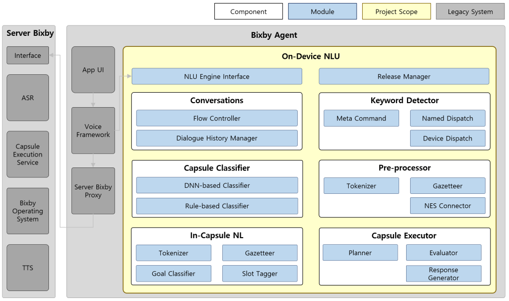
| 상기 Module View에서 도식한 각 컴포넌트의 모듈에 대한 상세 설명은 아래 표에 |
|---|
| 기술하였다. |
Table 10. Module 상세 설명
| Component | Module | Related | Description |
|---|---|---|---|
| UC | |||
| On-Device NLU | Interface | All | On-Device NLU의 Interface |
| Release Manager | UC-05, UC-06 | On-Device NLU 내부 컴포넌트의 생성과 해제를 담당. (이하 컴포넌트는 UC-05, UC-06과 관련 있으나 지면상 제약으로 표기를 생략함) | |
| Conversations | Flow Controller | All | 사용자 요청이 처리되는 흐름을 제어하고 관리함 |
| Dialogue History Manager | All | 사용자의 이전 발화를 기록하고 관리한다. 현재 발화에서 생략된 정보나 추가 정보를 이전 기록에서 추출할 수 있다. | |
| Keyword Detector (빠른 수행을 위한 특정 키워드 탐지) | Meta command | UC-01 | 앞으로, 뒤로, 첫 번째 등의 간단한 형태의 명령어를 처리한다. |
| Named dispatch | UC-01 | “메시지 앱에서~” 발화에서 메시지 Capsule 이름을 매칭함. | |
| Device dispatch | UC-01 | “거실에 있는 TV에서~” 발화에서 특정 기기 이름을 매칭함. | |
| Pre-processor (자연어 문장 전처리) | Tokenizer | UC-01, UC-02 | 사용자 발화를 의미를 가지는 최소한의 단위로 나눔. |
| Gazetteer | UC-01, UC-02 | 사전에 정의된 단어나 패턴을 인식한다. | |
| NES connector | UC-01, UC-02 | 서버 Named Entity Service를 압축해 만든 On-Device用 Database에 접근을 관리한다. | |
| Capsule Classifier (자연어 문장 분류) | DNN Capsule classifier | UC-01 | 충분히 다양하고 많은 데이터를 이용하여 학습한 딥러닝 기반 분류기. 메모리 효율 위해 압축 기술 적용 |
| Rule Capsule classifier | UC-01 | 적은 양의 데이터로도 충분히 학습 가능한 규칙 기반 분류기. 딥러닝 기반 분류기의 성능 보완 역할로도 사용. | |
| In-Capsule NL (사용자 의도 분석) | Intent Sketcher | UC-02 | 적용 알고리즘에 관계없이 In-Capsule NL 컴포넌트의 출력을 동일하게 만들기 위해 이미 정의된 형태의 INTENT를 만들어 내는 역할을 가진다. |
| Role Classifier | UC-02 | ~에서 ~ 까지, ~에서 ~ 로 와 같이 역할이 있는 자연어 표현을 분석하는 모듈 | |
| Goal Classifier | UC-02 | 사용자 발화를 분석하여 사용자 의도 (Intent) 를 결정. | |
| Slot Tagger | UC-02 | 사용자 발화에 포함되어 있는 객체 명 (NE) 추출. | |
| Capsule Executor (시스템 액션 수행) | Planner | UC-03 | INTENT를 입력 받아 시스템 액션 계획 Execution Plan 생성. Execution Plan은 수행 순서 및 단계가 기술되어 있다. |
|---|---|---|---|
| Executor | UC-03 | 전달 받은 Execution Plan으로 동작에 필요한 정보가 충분한지 확인하며 시스템 액션을 수행한다. 수행 도중 INTENT에 필요한 정보가 부족한 경우 Interrupt를 발생시키고 현재 상태를 저장한 후 시스템을 Prompt 상태로 변경한다. External Process의 기능이 필요하면 CFC 요청한다. CFC의 수행 결과 도는 내부 기능 수행 결과를 전달 받으면 Response generator에게 전달한다. | |
| Response generator | UC-04 | 수행된 결과를 바탕으로 자연어 응답을 생성해 낸다. |
4.1.4. Behaviour View
본 절에서는 대상 시스템의 주요 Use Case 에서 상기 Module View 에서 정의한 모듈들이
어떻게 상호 동작을 하는지를 Behaviour View 를 통해 기술한다. 이하에서, Conversation 의 Flow
Controller 는 ConversationImpl 모듈로 구현된다고 가정한다.
4.1.4.1. UC-01: 사용자 요청 처리될 Capsule 또는 Rejection 결정
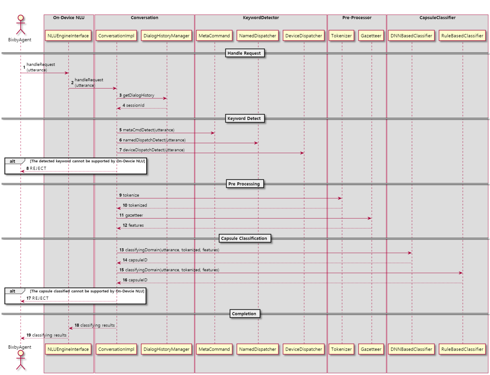
단계별 동작 설명
① Bixby Agent 는 ASR 결과인 text 형태의 사용자 발화를 인자로 NLUEngineInterface 를 통해
ConversationImpl 의 handleRequest 기능을 호출한다.
② ConversationImpl 은 DialogHistoryManager 의 getDialogHistory 를 호출하여 이전 발화 기록에
대한 ID 인 sessionID 를 가져온다.
③ Keyword Detector 에는 다음 세 개의 모듈을 순차적으로 호출하여 사용자의 의도를 분석한다. 1)
Meta Command 에서 응/아니/다음과 같은 간단한 형태의 명령어 포함되어 있는지 분석한다. 2)
Named Dispatch 에서 '설정 앱에서 손전등 켜줘'와 같이 특정 Capsule 이름이 명시적으로
표현되어 있는지 분석한다. 3) Device Dispatch 에서 '거실에 있는 TV 를 켜줘'와 같이 특정 장소와
기기가 명시적으로 표현되어 있는지 분석한다. 특정 Capsule 에서 처리해야 한다면 해당
Capsule ID 를 반환하고, On-Device NLU 에서 지원하지 않는 Keyword 가 포함되어 있다면
Rejection Code 인 REJECT 을 반환한다.
④ 특정 Keyword 가 포함되어 있지 않았다면, 사용자 요청이 처리 될 Capsule 을 결정하기 위해
Capsule Classifier 의 DNNBasedClassifier 와 RuleBasedClassifier 의 classifyingDomain 기능을
호출한다. 인자로 Pre-processor 의 Tokenizer 에서 최소한의 의미를 가지는 단위로 나눈
Tokenized 결과와 Gazetteer 에서 사전에 정의된 단어나 패턴이 매치된 결과가 사용자 발화와
함께 주어진다.
⑤ 사용자 요청 처리 Capsule 이 On-Device NLU 에서 지원하지 않는 Capsule 이라면 REJECT 를
반환한다.
4.1.4.2. UC-02: 사용자 의도 분석 및 개체 명 추출
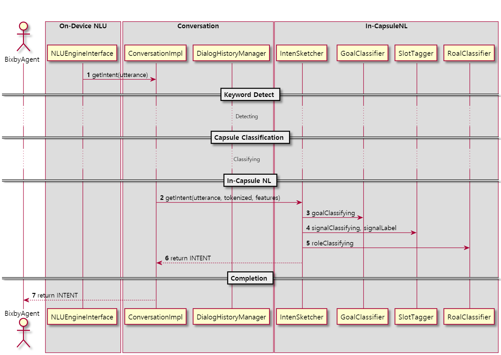
단계별 동작 설명
① Behavior View: UC-01: 사용자 요청 처리될 Capsule 또는 Rejection 결정 (Classifying and
Rejection)과 동일한 과정 수행 후 ConversationImpl 은 반환된 (Capsule)의 ID, Tokenizer 결과,
Gazetteer 결과, 사용자 발화를 인자로 In-CapsuleNL component 내부 IntentSketcher 모듈의
getIntent 기능을 호출한다.
② GoalClassifier 에서 사용자 의도, SlotTagger 에서 의도에 매칭되는 Gazetteer 결과,
RoleClassifier 에서 역할을 각각 분석한다. IntetnSketcher 는 분석된 결과를 토대로 사용자 의도와
개체 명을 담는 데이터 구조체 (INTENT)를 생성해 반환한다.
4.1.4.3. UC-03: 사용자의 요청 처리
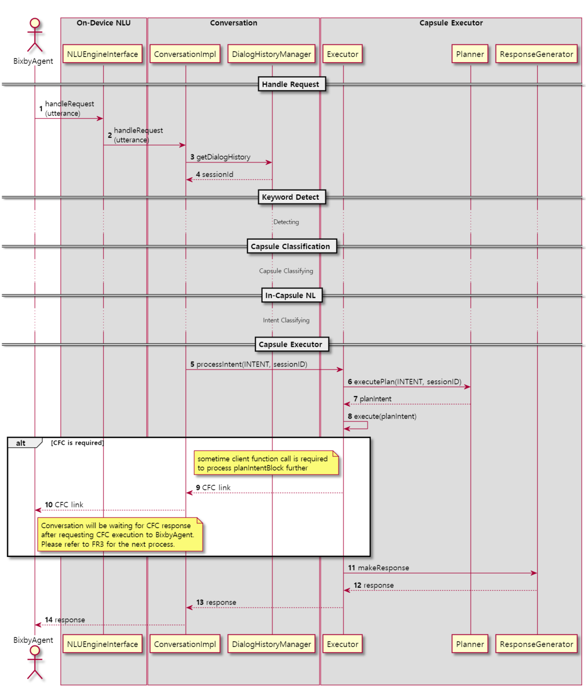
단계별 동작 설명
① Behavior View: UC-02: 사용자 의도 분석 및 개체 명 추출 수행 후 사용자 의도 분석 및 개체
명을 담고 있는 INTENT 와 DialogHistoryManager 에서 반환된 sessionID 를 인자로 Executor 의
processIntent 기능을 호출한다.
② Planner 의 executePlan 을 수행하여 Execution Plan 을 생성한다. 계획은 planIntent 로
반환되는데, 이 계획을 인자로 execute 를 수행한다. 기능을 수행하는 도중에 외부 시스템 또는
어플리케이션 (External Process)의 현재 상태가 필요하거나 상태를 변경시켜야 하는 경우 기능
수행 (CFC)을 위해 필요한 deep link 를 생성하여 반환한다. 기능 수행 도중 On-Device NLU 에서
지원하지 않는 기능이라 Exception 이 발생한다면 REJECT 를 반환한다.
③ (더 이상) External Process 의 수행이 필요 없는 경우 내부/외부 수행 결과에 따라 자연어 응답을
생성해 낸다.
4.1.4.4. UC-04: 기능 실행 결과로 자연어 응답 생성
UC-04 에서 기술한 과정이다. 시스템에서 사용자 요청을 처리하는 과정에서 External
Process 의 수행이 필요하여 CFC 후, External Process 가 결과를 반환하면 멈춰있던 과정을
진행한다. 목표 시스템이 수행을 종료하면 결과를 바탕으로 자연어 응답을 생성해 낸다.
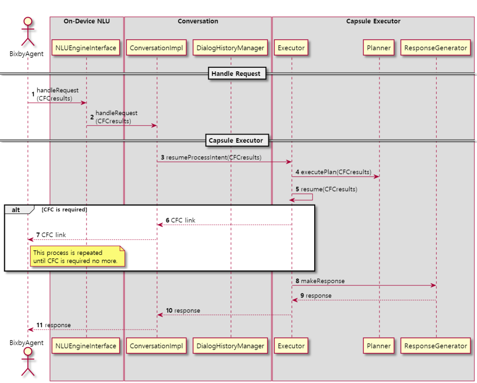
단계별 동작 설명
① Behavior View: FR-03: 사용자의 요청 처리 과정에서 External Process 에게 CFC 후 결과를 전달
받으면 ConversationImpl 은 Executor 의 resumeProcessIntent 를 CFCresults 를 인자로 호출한다.
Executor 는 Planner 의 executePlan 을 해당 인자로 호출한다.
② 추가 CFC 가 필요한 경우 External Process 에게 CFC 후 ①, ②단계를 반복한다.
③ ResponseGenerator 는 수행 결과를 이용하여 자연어 응답을 생성한다. 이 응답은 Bixby agent 에
전달되어 자연어 음성으로 출력된다.
4.1.4.5. UC-05, UC-06: On-Device NLU 엔진 초기화 및 해제
UC-05, UC-06 에 해당하는 On-Device NLU 엔진 초기화 및 해제 과정이다.
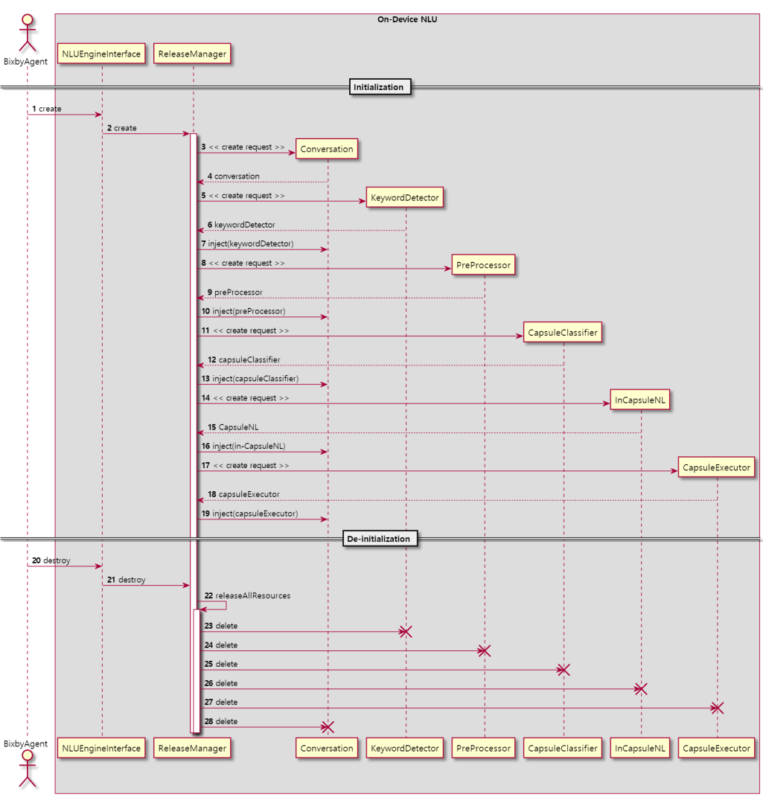
단계별 동작 설명
① Bixby Agent 는 NLUEngineInterface 를 통해 Release Manager 의 초기화 함수를 호출한다.
② Release Manager 는 Conversation 컴포넌트 생성 후, 나머지 컴포넌트를 차례대로 생성한다.
Release Manager 는 각 컴포넌트가 생성될 때 마다 인스턴스 주소를 Conversation 컴포넌트에
inject 를 호출하여 주입시킨다.
③ 해제 요청을 받으면 Conversation 컴포넌트를 제일 마지막에 해제한다.
4.1.5. 설계 포인트 선정
선정된 아키텍처 드라이버들을 달성하기 위해 고려해야 하는 주요 설계 포인트는 다음과
같으며, 주요 설계 포인트들에 맞는 Tactic 들을 기반으로 Architectural Decision (AD)을
도출하였다. 다음의 표는 각 Tactic 별 설계 시 고려해야 할 포인트들을 정리한 것이다. 아래와
같은 Tactic 과 설계 포인트들을 기반으로 Architecture 에 적합한 후보구조들을 도출하였으며, 각
설계 포인트와 설계 포인트 별 Tactic 들은 “Software Architecture in Practice (3rd edition)”에
기술된 항목들을 기반으로 도출되었다.
Table 11. ASR 에 따른 연관된 Tactic 과 설계 포인트
| 아키텍처 드라이버 | Tactic | 설계 포인트 |
|---|---|---|
| [QA-1] 신속한 응답속도 | ▶ Hierarchical Classification (Bound Search Space) ▶ Proxy Pattern ▶ Reduce overhead | ▶ 요청이 처리될 Capsule을 先결정하여 탐색 공간을 줄임 ▶ 초기화 생성 비용을 최대한 연기 ▶ Capsule 적재 Cache 사용 |
| [QA-2] RAM 사용량 최소 | ▶ Defer binding ▶ Data Partial Loading ▶ Data compression | ▶ 사용 시점에 Capsule 모델 메모리에 적재 ▶ Capsule別 모델 분리하여 생성 ▶ AI Model 압축 |
| [QA-3] Rejection 관리비용 최소화 | ▶ Chain of responsibility ▶ Runtime Compilation ▶ Composite pattern ▶ Reduce Overhead | ▶ 책임을 후임 컴포넌트로 전가 ▶ 사용 시점에 필요 컴포넌트 생성 ▶ Expression Language로 표현된 스크립트 구문의 실체화 ▶ Exception Cache로 속도 향상 |
| [QA-4] H/W 사양別 모듈 최적화 비용 최소화 [QA-5] 새로운 기술 적용 용이 | ▶ Encapsulate ▶ Template Method ▶ State Pattern ▶ Strategy Pattern ▶ Restrict Dependencies | ▶ 알고리즘의 명시적 인터페이스 ▶ 자연어 이해의 공통 단계를 Template으로 정의. ▶ 대화別, 상황別 Event 처리 ▶ H/W사양別 전략적 알고리즘 적용 ▶ 모듈間 의존성 끊어 내기 |
| [QA-7] 업데이트 및 배포 용이 | ▶ Split Module ▶ Use an intermediary ▶ Component Replacement | ▶ UI App과 언어 이해 엔진 분리 ▶ 중재자를 통한 의존성 끊어 내기 ▶ Testing 수행하는 Component 대체 통한 배포 전 호환성 이슈 확인 |
상기 표에서 도출된 주요 설계 포인트들이 Module View 에서 어떻게 대응되는지를 나타내면
다음과 같다.
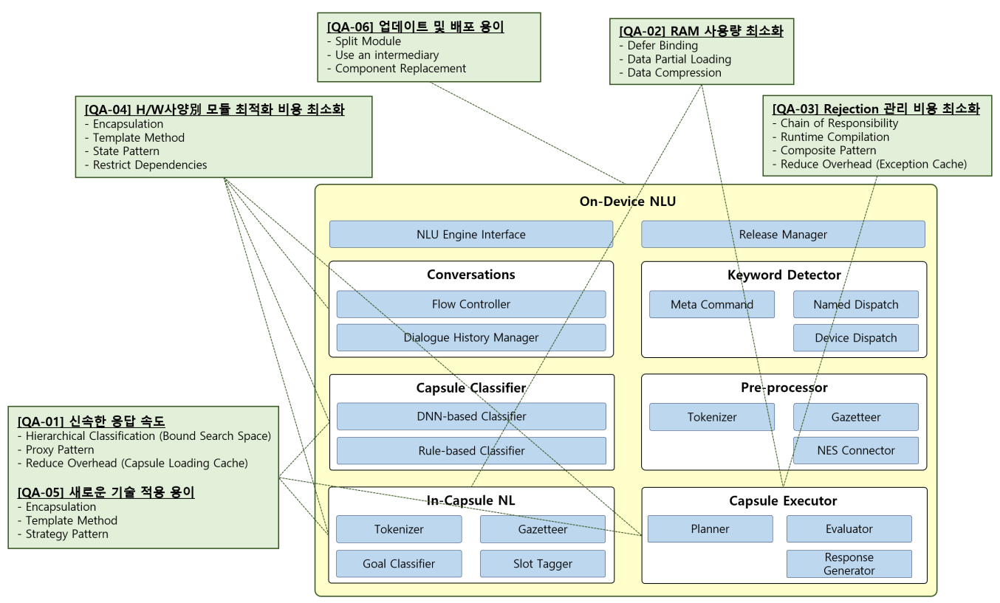
4.2. 아키텍처 설계 안 (Architectural Decision; AD)도출
이 절에서는 3.4 절에서 도출된 Architecture Drivers 를 달성하기 위한 아키텍처 설계 안
4 개에 대해 기술한다. 아래 그림은 4 개의 아키텍처 설계 안과 기능 요구사항, 제약 사항,
그리고 품질 속성과의 관계를 나타낸다.
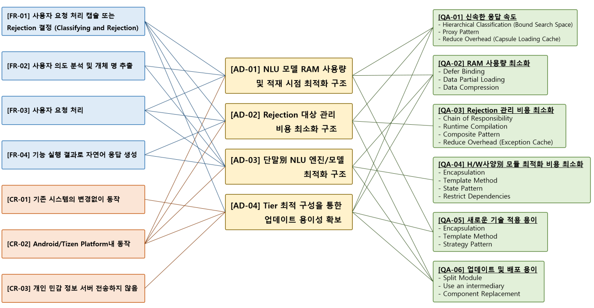
4.2.1. AD-01. NLU 모델의 RAM 사용량 및 적재 시점 최적화 구조 설계 방안
연관 Architecture Driver
QA-01. Performance – 신속한 응답 속도 (사용자 요청 250ms 이내 동작)
QA-02. Performance – RAM 사용량 최소화 (500 MB 이하)
QA-05. Modifiability – 새로운 기술 적용 용이 (언어 이해 기술 적용 용이성)
FR-01. 사용자 요청 처리 될 Capsule 또는 Rejection 결정 (Classifying and Rejection)
FR-02. 사용자 의도 분석 및 개체 명 추출
FR-03. 사용자 요청 처리
CR-02. Android/Tizen Platform 내 동작
적용 Tactic
Hierarchical Classification (Bound searching space)
Defer Binding, Data Partial Loading, Data Compression
Proxy Pattern, Reduce Overhead (Capsule Loading Cache)
Encapsulation, Template Method, Strategy Pattern, Restrict Dependencies
4.2.1.1. 문제 정의
현재 Bixby 를 포함한 대부분의 AI 음성 비서 시스템은 요청을 서버로 보내고 응답을 받는
client-server 아키텍처 스타일로 운영되고 있다. 이 경우 서버가 초기화 되는 과정에서 필요한
언어 이해 엔진과 모델은 함께 메모리에 적재된다. 엔진과 엔진에서 사용하는 모델은 메모리에
상시 상주하여 사용자의 요청에 빠르게 대응할 수 있도록 하고 있다. 서버는 상시 전원이
공급되고 있기 때문에 이는 합리적인 선택으로 보인다.
반면에 모바일 단말은 서버와는 달리 제한된 리소스로 동작한다. 단말에서 수행되는
프로세스들은 가능한 리소스를 적게 쓰는 방향으로 최적화 되어 있다. 서버의 자연어 이해
엔진을 On-Device 化 하며 생기는 어려움 중 하나가 서버와 같이 엔진 및 모델을 메모리에
상시 상주시키기는 것이 불가능하다는 것이다.
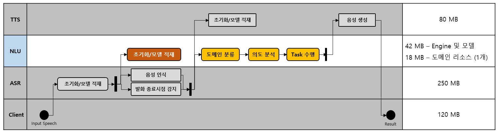
Figure 22 은 음성 인식, 언어 이해, 음성 합성 과정을 나타낸다. 상시 상주 외 가능한
방안으로 사용자 요청이 처리된 Capsule 이 결정 된 이후 해당 Capsule 모델만 메모리에
적재하여 사용하는 것을 고려할 수 있다. Figure 22 의 도메인 분류 이후가 이에 해당한다.
하지만, 사용자 요청 처리 중 필요한 시점에 메모리에 적재하는 이른바 on-demand 방식은
추가적인 지연 시간 유발로 인해 사용자 체감 응답 속도의 저하가 예상된다.
On-Device NLU 에서 지원하는 범위가 늘어날수록 Capsule 또한 점점 늘어난다. 이 과제에서
지원하는 Capsule 및 대표 발화는 Appendix 에 첨부한다. Capsule 이 늘어날수록 빌드 되어
메모리에 적재되는 Capsule 모델 크기도 커지고, 이에 따라 메모리 적재 시간도 선형적으로
증가하게 된다. 사용자 요청을 처리하는 Capsule 모델을 On-Device 에서 운용하기 위한
전략으로 하나로 통합하여 운용하는 방안과 전략적으로 여러 개로 나누어 운용하는 방안을
고려할 수 있다. 예를 들어, Capsule 의 사용 빈도를 조사해보면 Figure 23 에서처럼 Capsule
별로 차이가 크다. 이러한 사용 빈도를 고려하여 모델을 여러 개로 나누는 방안도 고려될 수
있다.
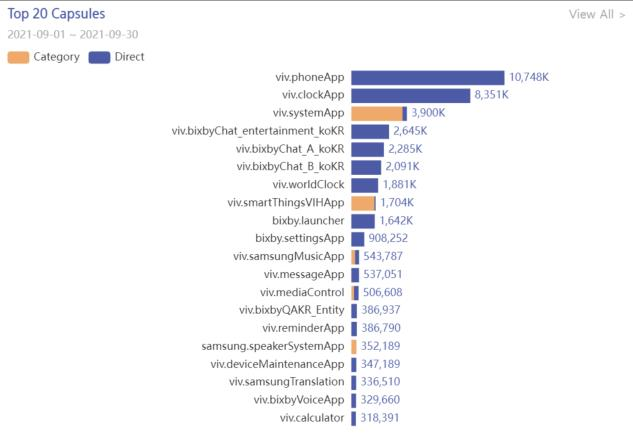
모델을 여러 개로 운용하는 방안은 모델을 하나를 쓰는 것에 비해 전체 크기는 클 수 있으나,
필요한 모델을 선별적으로 운용하는 경우 메모리 적재 시간이 짧으면서 일정하고 상주 메모리
크기 또한 상대적으로 작고 일정하게 가져갈 수 있다. 이러한 사항을 고려하여, 엔진 및 모델을
메모리에 상주시키는 시점 및 방안에 대한 설계 검토가 필요하다.
4.2.1.2. (1 안) Start-up 시점에 모든 모델 메모리에 적재
On-Device NLU 에서 지원하는 언어 이해 모델 및 모든 Capsule 데이터를 Bixby Agent 가
구동되어 초기화 되는 시점에 일괄적으로 메모리에 적재하는 방안이다. Figure 24 은 Bixby
Agent 구동 시점에 Capsule Classifier 와 Capsule 에서 사용하는 모델을 적재하는 과정을
나타낸다. 사용자 요청이 Conversation 컴포넌트에 도달하기 전에 언어 이해 모델 및 Capsule
데이터와 빌드 된 모델은 메모리에 적재될 수 있어야 한다. Conversation 은 텍스트 형태의
사용자의 요청이 전달되면 정해진 처리 순서에 따라 각 컴포넌트를 차례대로 호출한다.
이 방식은 사용자 요청 이후 언어 이해 과정에서 모델 적재로 인한 지연이 없게 되어 응답
시간 면에서 강점이 있다. 또한, 모델을 여러 개로 나누는 것보다 하나로 구성하는 것이
상대적으로 크기(메모리 점유율)면에서 유리할 수 있다.
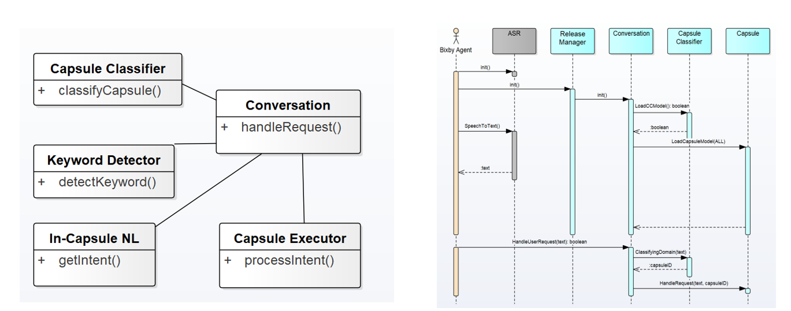
4.2.1.3. (2 안) Capsule 결정 후 필요한 모델 런타임에 적재 (Defer Biding)
On-Device NLU 에서 지원하는 언어 이해 모델 및 Capsule 데이터를 사용자 요청이 처리될
Capsule 을 결정한 이후 메모리에 적재하는 방안이다. 즉, Figure 25 와 보는 것과 같이 언어
이해 모델 및 Capsule 데이터가 실제로 사용하는 시점까지 생성과 초기화에 드는 비용 및
시간을 연기해 보는 의미를 가진다. 이 경우 실제 인스턴스의 실행 결과에 대한 추가적인
정보를 보유하고 있어 실제 접근을 지연할 수 있도록 해야한다.
이를 실체화 하기 위해 proxy 패턴을 적용하여 실제 초기화 및 모델 바인딩을 최대한 뒤로
미루고, 이미 한번 실행된 것은 보관한 후 재사용하여 추가 연산에 대한 비용을 줄일 수 있다.
Figure 25 에서 Capsule 이라는 interface 를 상속받은 CapsuleRequestProxy 를 proxy 로 두었다.
Conversation 으로부터 요청 메시지와 인자를 전달받은 후 실제 대상인
CapsuleRequestWorker 를 생성 및 초기화한 후 요청 메시지 및 인자를 전달한다.
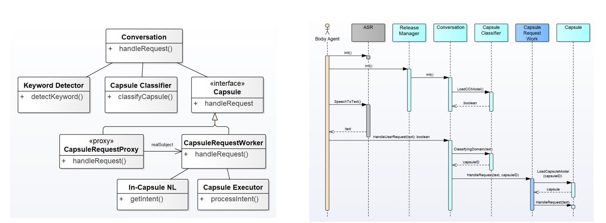
4.2.1.4. 후보 비교
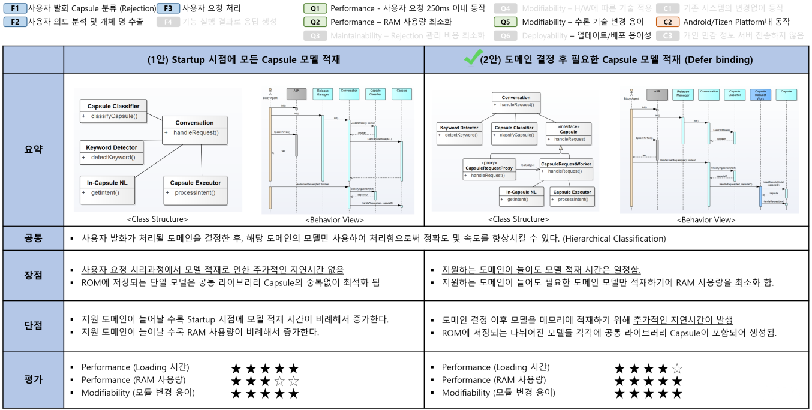
▶ Event Driven 방식의 NLU 모델 적재를 최대한 미루는 구조
상기 두 가지 안은 모두 단말의 시스템과 연동하는 과정에서 Event Driven 구조를 기본
채택하여 다양한 이벤트에 따라 그 흐름을 제어할 수 있도록 한다. Template Method 를
적용하여, Table 10 에 나타낸 것처럼 기계가 자연어를 이해하기 위한 빠른 실행을 위한 특정
키워드 탐지, 자연어 문장 전처리, 사용자 의도 분석 및 시스템 액션 수행 단계를 Conversation
컴포넌트에 Template 으로 정의한다. Capsule 결정을 의도 분석보다 앞서 수행함으로써
(Hierarchical Classification 적용) 탐색 공간을 제한한다. 이는 수행 속도 개선에 효과가 있다.
(1 안)은 목표 시스템이 초기화 되는 과정에 필요한 모든 자원을 메모리에 적재한다. 이
방안의 가장 큰 장점은 사용자 발화가 On-Device NLU 에서 처리되는 과정에 자원을 메모리에
적재하는 등의 불필요한 오버헤드가 발생하지 않는다는 점이다. 이는, 사용자 요청에 응답을 좀
더 빠르게 할 수 있게 한다. 다만, Figure 22 에서 보는 것 처럼 ASR 동작 중에 On-Device NLU
초기화 과정이 진행되어야 하는데, 모델을 메모리에 적재되는 과정에서 압축 해제 등의 상당한
연산이 필요한 경우 ASR 동작에 영향을 줄 수도 있다는 것이 우려된다.
On-Device NLU 의 지원 범위가 늘어남에 따라 Capsule 의 수가 증가하면 Capsule 모델의
적재 시간도 비례해서 증가한다. 또한, 메모리 사용이 비효율적이다. 예를 들어, 초기화 시 모든
모델을 메모리에 적재하는데, Keyword Detector 나 Capsule Classifier 에서 Rejection 이 발생하면
In-Capsule NL 또는 Capsule Executor 를 수행하지 않고 종료된다.
(2 안)은 Capsule Classifier 가 사용자 요청이 처리될 Capsule 을 결정한 이후 특정
Capsule 모델만 메모리에 적재함으로써 전체적으로 메모리 적재로 인한 시간을 줄일 수 있다.
또한, On-Device NLU 에서 지원하는 Capsule 이 늘어나도 메모리에 적재하는 시간은 일정하다.
하지만, 이 방안은 (1 안)대비 추가 지연시간을 야기한다. 사용자 요청 처리 과정에서 결정된
Capsule 모델이 메모리에 적재 되어야 하기 때문이다. 추가 지연시간은 전체적인 응답시간을
증가시킬 수 있기 때문에 보완책이 고려 되어야 한다.
Defer Binding 을 적용하여 개별 Capsule 모델을 사용자 요청 처리 중에 메모리에 적재하는
(2 안)은 Capsule 이 늘어나도 일정한 적재 시간과 RAM 사용량 최적화가 가능하기 때문에 최종
선정한다. Proxy 디자인 패턴을 적용하여 실제 초기화 및 모델 바인딩을 최대한 뒤로 미루어
(Defer Binding) 생성과 초기화에 드는 비용 및 시간을 연기한다. 예상되는 추가 지연 시간을
줄이기 위한 보완 Tactic 으로 Reduce Overhead 를 Capsule 모델 Cache 로 적용한다. Proxy 는
Cache 의 역할도 가진다. 이미 한번 실행된 Capsule 모델과 사용자 요청은 cache 한다. 이후,
같은 모델 사용과 요청에 대해서 추가 연산에 대한 비용을 줄이므로 전체적인 응답시간 개선에
효과가 있다.
메모리 사용량 개선을 위한 추가 Tactic 으로 Data Compression 을 적용한다. Capsule
Classifier 와 In-Capsule NL 에서 사용하는 분류 모델은 Tensorflow-Lite 에서 제공하는
Compression 을 이용하거나 분류 모델 내 가중치 값을 표현하는 데이터 타입을 변경하는
Quantization 을 통해 압축한다.
4.2.2. AD-02. Rejection 대상 관리비용 최소화 구조 설계 방안
연관 Architecture Driver
QA-01. Performance – 신속한 응답 속도 (사용자 요청 250ms 이내 동작)
QA-03. Maintainability – Rejection 관리 비용 최소화
QA-06. Deployability – 업데이트/배포 용이성
FR-01. 사용자 발화 Capsule 분류 (Classifying and Rejection)
FR-03. 사용자 요청 처리
FR-04. 기능 실행 결과로 자연어 응답 생성
CR-02. Android/Tizen Platform 내 동작
적용 Tactic
Chain of Responsibility, Runtime Compilation, Composite Pattern
Hierarchical Classification, Proxy Pattern, Reduce Overhead (Exception Cache)
Split Module, Encapsulate
4.2.2.1. 문제 정의
2.3 절에서 설명한대로 On-Device NLU 가 지원하는 Capsule 범위는 서버가 지원하는 범위의
일부분이다. 각 사업부 PM 들과 지원 범위에 대해 논의한 결과, 현재 Bixby 의 발화
사용량/빈도를 고려하여 비즈니스 임팩트가 제일 큰 모바일 Capsule 4 개, TV Capsule 1 개, 룸
에어컨 Capsule 1 개, 냉장고 Capsule 1 개, 로봇 Capsule 1 개가 최종 선정되었다. 따라서, On-
Device NLU 처리되는 상기 Capsule 의 사용자 요청을 제외한 나머지는 서버로 전달되어
처리되어야 한다.
On-Device NLU 에서 처리할 수 있는 사용자 발화/요청을 분류하기 위해서 다양한 방안이
제시될 수 있다. 하지만 우선 고려되어야 할 사항은 서비스가 지속되면서 On-Device NLU 에서
지원하는 Capsule 범위의 잦은 변경이 예상되는 바, 변경을 반영하는 개발 시간 및 테스트
시간을 최소화하여 소비자에게 즉시 적용할 수 있어야 하고, Capsule 변경을 관리해야 하는
비용이 최소화 되어야 한다.
문제를 어렵게 만드는 것은 H/W 사양에 따라 수행할 수 있는 기능이 상이하다는 것이다.
이럴 경우, H/W 사양 또는 단말에 따라 각각 다른 규칙을 적용해 주어야 한다. 아래 그림에서
보는 것처럼 ‘전면 카메라 확대해줘’ 라는 기능은 같은 모바일 단말일지라도 S20 에서는 정상
수행 가능하지만, A50 단말의 전면 카메라엔 확대 기능이 없기 때문에서는 수행이 불가능하다.
이외에도, 특정 Capsule 의 일부 기능만을 지원 범위에 포함시키는 경우 사용자의 의도에
국한하여 범위를 설정해야 한다.
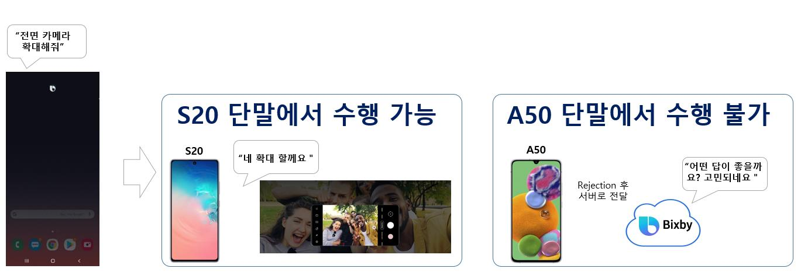
On-Device NLU 엔진이 사용자의 요청을 수행하는 과정은 4.1.4 절에 기술했다. 사용자 요청을
처리하는 단계 중 Rejection 이 가능한 위치에 따라 개발 비용과 산출물의 유지/보수 비용이
고려되어 설계가 진행되어야 한다.
4.2.2.2. (1 안) Allowed List 관리를 통한 Rejection 구조
H/W 사양 또는 단말別 처리 가능한 범위를 기록해 둔 Allowed List 를 통해 Rejection
관리가 가능하다. KeywordDetector, CapsuleClassifier, In-CapsuleNL 은 On-Device NLU 에서
처리할 수 있는 요청에 대한 정보를 AllowedList 객체를 통해 획득하고 처리 과정에서 특정
키워드나 Capsule ID, INTENT 가 검출되면 Rejection 할 수 있다. Figure 28 에서 AllowedList
객체는 설정파일에서 On-Device NLU 에서 처리할 수 있는 Capsule, INTENT 등의 정보를 읽어
가지고 있다. KeywordDetector, CapsuleClassifier, In-CapsuleNL 은 Rejector 를 상속받아
checkRejection 을 정의한다. 위 세 컴포넌트는 Hierarchical Classification 상 상단의 위치에서
On-Device 에서 처리 불가능 한 것들을 Rejection 하기 때문에 응답 시간 측면에서 이점이
있다.
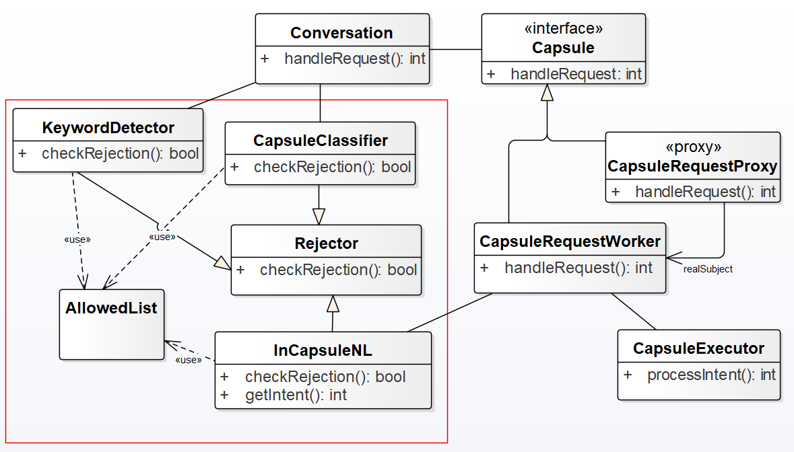
4.2.2.3. (2 안) Chain of Responsibility 구조를 통한 rejection 방안
Bixby 에서 Capsule 의 기능을 수행하는 Biz. Logic 은 Bixby Grammar 라는 Expression
Language 기반의 스크립트로 기술된 bxb 파일에 정의되어 있다. Capsule 개발자들은 단말에서
수행할 수 있는 기능을 정의하면서 여러 Exception 상황을 모두 bxb 에 기술한다. 예를 들어,
‘전면 카메라 확대해줘’ 기능을 수행할 때, 전면 카메라 사양이 확대 가능한 것인지 아닌지를
context 정보로 받아 수행이 불가능한 A50 단말의 카메라이면 Exception 을 발생시키거나, 실제
카메라 모듈 (External Process)로 CFC 후 처리되는 결과에 따라 Exception 을 발생시키는
방식이다.
Chain of Responsibility 는 이 특성을 활용하여 메시지를 통해 요청의 처리에 대한 책임을
계속 후임에게 넘기는 방식이다. 후임 모듈은 요청을 처리할 수 없을 때 Exception 을 발생시켜
연쇄적으로 요청을 최초로 받은 모듈까지 전달한다.
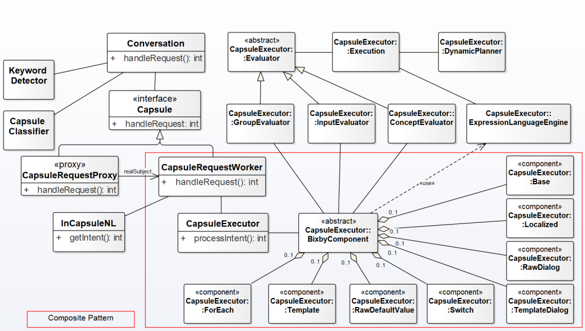
Figure 29 에서 On-Device NLU 에서 지원하는 기능은 bxb 파일에서 정의된 구문으로 표현될
수 있고, 구문은 BixbyComponent 중 하나로 표현될 수 있다. 구문을 이루는 각각의 요소
기능은 하나의 Component 로 개발된다. 여러 개의 Component 가 모여 더 큰 Component 를
이룰 수도 있다. 이를 구조적으로 표현하고 Exception 을 효율적으로 구현하기 위해 Composite
디자인 패턴을 적용했다. Composite pattern 으로 BixbyComponent 를 구성한다. 즉,
BixbyComponent 에 포함되지 않는 Component 에 대한 호출은 Exception 을 발생시켜
Rejection 할 수 있다.
4.2.2.4. 후보 비교
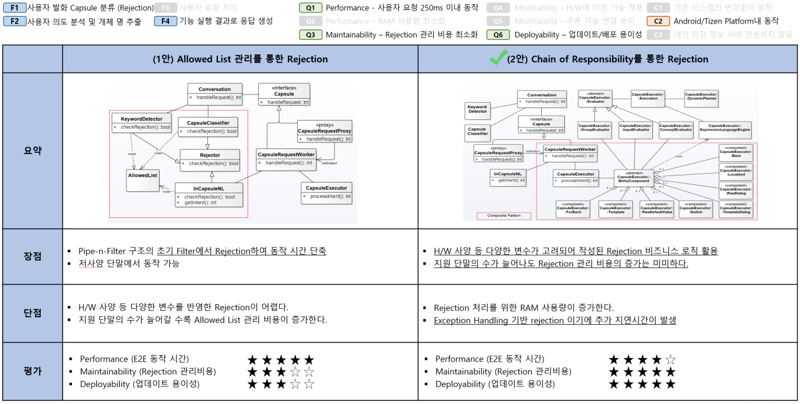
▶ 책임의 전가와 Exception 을 이용한 Rejection 관리 비용 최소화
책임의 전가를 통한 Exception 방식은 Capsule 에 정의된 Biz. Logic 에 기반한다. Capsule 은
bxb 파일에 Bixby Grammar 라는 Expression Language 기반의 스크립트로 기술된 실행 방법을
담고 있다. 스크립트의 각 구문은 BixbyComponent 의 하나의 Component 로 표현될 수 있기
때문에, (2 안)에서 설명한 것처럼 Composite 디자인 패턴을 적용하여 효율적으로 구현될 수
있다. 4.2.1.3 절의 Defer Binding 과 효율적으로 연동하기 위해 Runtime Compilation 을 적용하여
Exception 을 발생의 범위를 확대한다. Runtime Compilation 은 Capsule 을 메모리에 적재하는
시점에 bxb 파일을 읽어 Component 객체를 실시간 생성한다. 사용자 요청을 처리할 Capsule 을
결정한 이후에 Capsule 모델을 빌드하고 메모리에 적재하는 Hierarchical Classifying 방식인
Defer Binding 과 혼용하면 시너지 효과를 누릴 수 있다. Component 객체가 생성될 때 On-
Device NLU 의 지원범위가 아닌 Component 는 의도적으로 Exception 을 발생시켜 Hollow
Component 로 생성한다. 물론 앞서 설명한 대로, Component 로 compile 되었다 하더라도 실행
중에 단말 사양에 따라 실행될 수 없는 경우에는 Exception 을 발생시킨다.
AllowedList 객체를 이용하면 구현이 간단하고 쉽게 적용이 가능하다. On-Device NLU 에서
지원하는 범위가 Capsule 단위이거나 INTENT 로 간결하게 나눠지는 경우엔 Rejector 모듈의
상속을 통한 Rejection 방안이 최적이다. 하지만, 같은 INTENT 라도 단말마다 H/W 사양에 따라
동작 방식이 상이하거나 동작이 안되는 경우가 있다. 이럴 경우, Allowed List 는 단말別로
작성되어 관리되어야 한다. 당사에서 출시하는 단말의 수를 고려해 볼 때 Allowed List 로
관리하는 것은 상당한 부담이 따른다.
책임의 전가를 통한 Exception 방식 (2 안)은 Capsule 에 정의된 Biz. Logic 을 활용한 Rejection
구현을 위해 Composite Pattern 을 적용하여 H/W 사양 또는 단말別 기능이 달라도 추가
비용없이 Rejection 을 처리한다. Defer Binding 과 시너지를 최대화 하기 위해 Runtime
Compilation 을 적용하여 메모리 사용량을 최적화한다. 당사의 다양한 H/W 사양과 지원 단말
수를 고려할 때 Capsule 지원 범위 변경 시 단말別로 개발이 필요 없는 점과 업데이트가
용이한 점이 Allowed List 방식 (1 안)보다 우수하여 최종 선정한다. 다만, 연쇄적으로 책임을
전가함에 따라 지연 시간 증가가 예상된다. 이를 상쇄할 수 있는 방안으로 Reduce Overhead 를
Exception Cache 로 적용한다. 한번 실행되어 Exception 처리가 된 기능에 대해서는 결과를
Cache 한다. 이후, 동일한 기능 요청에 대해 Component 에서 Exception 없이 빠르게
Rejection 하여 지연시간 증가를 상쇄할 수 있다. Defer Binding 에 적용한 Proxy Pattern 의
Proxy 를 Cache 로 활용할 수 있다.
4.2.3. AD-03. 단말別 NLU 엔진/모델 최적화 구조 설계 방안
연관 Architecture Driver
QA-02. Performance – RAM 사용량 최소화 (RAM 사용량 500 MB 이하)
QA-04. Modifiability – H/W 사양別 모듈 최적화 비용 최소화
QA-06. Deployability – 업데이트 및 배포 용이성
FR-01. 사용자 요청 처리될 Capsule 및 Rejection 결정 (Classifying and Rejection)
FR-02. 사용자 의도 분석 및 개체 명 추출
FR-03. 사용자 요청 처리
FR-04. 기능 실행 결과로 자연어 응답 생성
CR-02. Android/Tizen Platform 내 동작
적용 Tactic
Encapsulate, Strategy Pattern
Template Method, State Pattern
Restrict Dependencies, Component Replacement
4.2.3.1. 문제 정의
본 과제에서 구현하고 있는 On-Device NLU 엔진은 당사 다양한 사업부에서 서로 다른
요구사항으로 배포 요청을 받고 있다. 가전 사업부와 영상 디스플레이 사업부의 요구사항은
H/W 성능 제약으로 인해 Storage 와 RAM 사용량, CPU 사용량을 최소화 할 수 있는 알고리즘
적용이다. H/W 제약이 덜한 무선 사업부나 SR 의 로봇 센터의 경우 RAM 사용량 최적화에 대한
요구사항이 있지만 사용성 제고를 위한 성능 최대화 및 지원 범위를 최대한 늘릴 수 있는
알고리즘 적용이 요구사항이다.
아래 그림은 각 사업부별 요구사항을 만족할 수 있는 알고리즘을 기술하였다. 예를 들어,
성능 최대화 및 지원 범위를 최대화에 따라 다르게 적용할 수 있는 알고리즘으로 모바일 단말
대상 Dynamic Planner & Executor 와 TV 의 Static Planner & Executor 를 생각해 볼 수 있다.
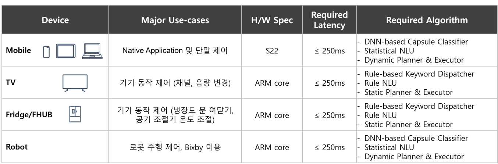
아래 그림에서 Dynamic Planer & Executor 는 현재의 상태에 가장 효율적인 길을 실시간으로
찾아서 계획을 세우고 실행하는 반면, Static Planner & Executor 는 미리 가능한 계획을 최대한
많이 세워보고 저장해 두었다가 이후 같은 요청이 오면 꺼내 쓰는 식이다. Static Planer &
Executor 는 가볍고 빠른 장점이 있지만 세워보지 않은 계획을 요구하는 사용자 요청은 처리할
수 없다. Dynamic Planer & Executor 는 수행 시간이 길고 상대적으로 길지만 어떤 요청에도
결국 계획을 세워 시스템 액션의 수행을 진행시킬 수 있다.
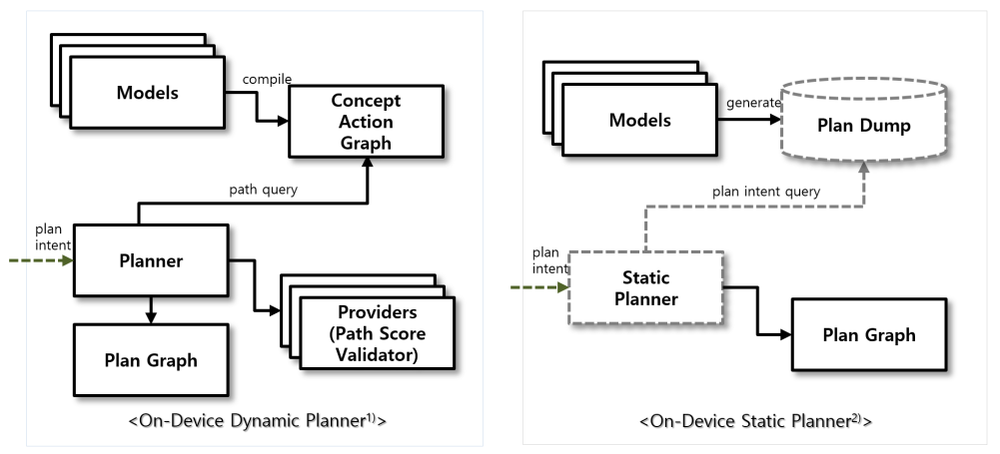
이외에도, 자연어 이해 알고리즘으로 Statistical NLU 와 Rule NLU 를 선택해서 사용할 수 있다.
Capsule 분류를 위한 알고리즘인 DNN-based Capsule Classifier 와 Rule-based Capsule
Classifier 도 요구사항에 따라 적용 범위가 다르다. 자연어 이해와 분류 알고리즘 중 딥러닝
기반 (DNN-based)이나 통계 기반 (Statistical-based) 알고리즘은 규칙 기반 (Rule-based)
알고리즘에 비해 학습에 더 많은 데이터가 필요하지만 같은 의미 발화가 다양하게 표현되는
Capsule 에서 규칙 기반에 비해 더 강건한 특징을 보인다. 규칙 기반 알고리즘은 정확하게
매칭되는 지를 빠르게 확인하여 분류하기 때문에 적은 데이터로도 학습이 가능하고 탐색
공간이 작은 경우 빠르게 수행되는 장점이 있어 발화가 다양하지 않는 Capsule 에 적용이
가능하다. 예를 들어, 기기의 전원 제어를 위한 표현은 한정되어 있기 때문에 해당 기능이 주로
작성된 Capsule 은 규칙 기반 알고리즘인 Rule NLU 적용이 가능하다.
이처럼, H/W 사양에 따라 RAM 사용량, E2E 수행 시간 등의 주요한 품질 속성을
만족시키면서 다양한 알고리즘의 조합으로 NLU 엔진 구현 및 모델 최적화 작업이 이루어 질
수 있어야 한다. 다양한 사업부로 On-Device NLU 적용 지원과 요구사양에 대한 변화가 빈번할
것으로 예상되는 바, 개발과 산출물의 유지/보수 비용을 절감할 수 있는 방안에 대한 고려도
설계에 반영되어야 한다.
4.2.3.2. (1 안) 단말別 패키지 개별 구성
엔진 교체 방안으로 Strategy 패턴을 각 사업부 별로 최적화된 구조에 적용하는 방안이다.
기본적으로 각 컴포넌트에 대한 인터페이스를 정의하고 각 컴포넌트의 구체화되는 알고리즘은
해당 인터페이스를 따라 구현한다. 이 구조에서 Engine 에 대한 결정이 사업부 별로 최적화된
패키지 구조 내부에 있게 둠으로써 다른 불필요한 overhead 는 효율적으로 제거할 수 있다.
이는, H/W 사양의 제약이 심한 가전 사업부, 영상 디스플레이 사업부의 요구 사항을
만족시키기에 적합하다. 다만 새로운 기술 적용이나, 기존 컴포넌트의 버그 수정이 발생하면
모든 사업부의 해당 컴포넌트를 교체하고 테스트해야 하는 비용이 발생한다.
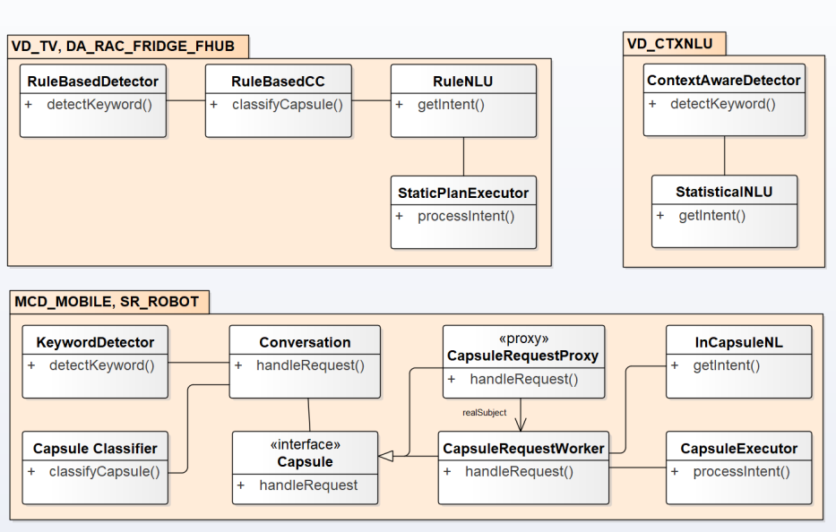
4.2.3.3. (2 안) 단일 패키지로 설정에 따라 Build 시간에 필수 모듈 구성
엔진 교체 방안으로 Strategy 패턴을 하나의 패키지 내에서 적용하는 방안이다. 하나의
패키지 안에서 빌드 설정에 따라 사업부 별로 각기 다른 필수 모듈을 조합할 수 있다. 패키지
내 컴포넌트는 같은 흐름을 타기 때문에 이를 제어하는 공통된 모듈이 존재한다. 해당 모듈은
엔진의 구성이나 컴포넌트 내부에서 발생하는 다양한 Event 에 의해 동작의 State 를 결정하고
흐름을 제어한다. 아래 그림에서, 흐름 제어는 Conversation 컴포넌트의 Flow Controller 모듈이
담당한다. 모든 사업부 대상 패키지내 컴포넌트는 동일하게 관리된다.
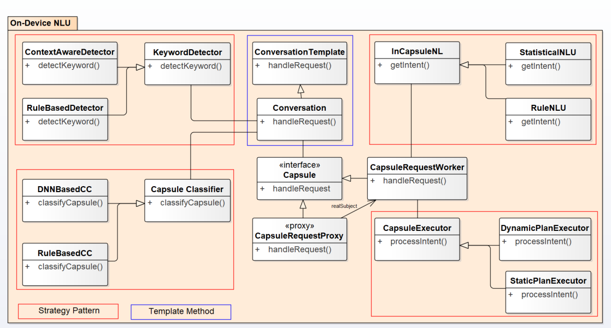
4.2.3.4. 후보 비교
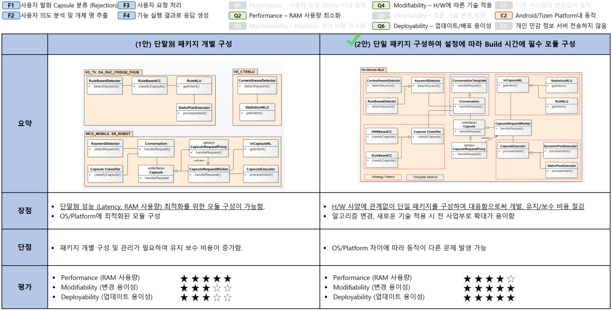
▶ Template Method, State Pattern 를 통한 단말別 최적 NLU 엔진 구성 방안
상기 두 안에서 사용하는 알고리즘들의 Strategy pattern 적용이 용이하도록 Encapsulation 을
적용하여 명시적으로 단일화된 Interface 를 가진다.
사업부 별로 다양한 H/W 사양에 따라 만족해야 하는 요구사항이 다르다. (1 안)은 사업부別로
최적화된 개별 패키지를 구성한다. 이 방안은 구성되는 컴포넌트를 최적으로 조합할 수 있기
때문에 H/W 제약으로 MB 단위로 ROM/RAM 사용량을 제한하는 요구사항도 달성이 가능하다.
다만, 사업부別 패키지 개별 구성으로 개발 및 테스트 비용이 증가한다.
(2 안)은 단일 패키지 안에서 사업부別 요구사항을 만족시키기 위한 방법이다. H/W 사양에
관계없이 단일 패키지를 구성하고 요구사항별로 설정 파일에 기술된 알고리즘의 조합에 따라
빌드 시간에 모듈을 구성하는 방식이다. 새로운 기술을 적용하거나 기존에 있던 컴포넌트의
버그를 수정함에 있어, 단일 패키지 내에서 개발과 테스트를 수행하면 모든 사업부 산출물에
적용이 되기 때문에 개발, 테스트 및 유지/보수 비용이 절감된다. 하지만, 단일 패키지로
Android 와 Tizen OS 를 모두 지원하면서 사용하는 라이브러리의 차이에 의해 OS 별로 동작이
다른 문제가 예상된다.
(2 안)은 Template Method 를 적용하여, Table 10 에 나타낸 것처럼 기계가 자연어를 이해하기
위한 빠른 실행을 위한 특정 키워드 탐지, 자연어 문장 전처리, 사용자 의도 분석 및 시스템
액션 수행 단계를 Template 으로 정의한다. 사업부別 요구사항에 따라 특정 단계의 재정의가
필요한 부분은 Template 의 서브 클래싱을 통해 해결한다. State Pattern 과 Strategy Pattern 을
적용하여 대화 상황 별, H/W 상태 별 Event 에 따라 각기 다른 알고리즘을 적용한다. Template
Method, State Pattern, Strategy Pattern 적용하여 각 사업부별 요구사항을 만족하는
모듈/컴포넌트의 최적 조합을 단일 패키지내에서 지원한다. 즉, 버그 수정, 성능 향상을 위한
개발이나 새로운 기술을 적용 시 단일 패키지 내 테스트 수행으로 모든 산출물의 검증을
수행한다. (2 안)은 단일 패키지로 각기 다른 요구사항을 달성하여 개발 리소스 및 테스트 비용
절감 측면에서 (1 안)에 비해 우수하여 (2 안)을 최종 선정한다. OS 차이에 따라 예상되는 동작이
다를 수 있는 문제를 보완하기 위한 Tactic 으로 Component Replacement 를 적용한다. 빌드
스크립트에 따라 Testing 을 수행하는 컴포넌트로 대체하며 서로 다른 OS 에서 수행 결과가
동일한지 자동으로 확인하는 프로세스를 정의한다. 이 프로세스로 OS 차이에 따라 발생 가능한
문제를 사전에 감지하고 해결하여 배포한다.
4.2.4. AD-04. Tier 최적 구성을 통한 업데이트 용이성 확보
연관 Architecture Driver
QA-01. Performance – 신속한 응답 속도 (사용자 요청 250ms 이내 동작)
QA-02. Performance – RAM 사용량 최소 (RAM 사용량 500 MB 이하)
QA-05. Modifiability – 새로운 기술 적용 용이
QA-06. Deployability – 업데이트/배포 용이성
FR-01. 사용자 요청 처리 Capsule 및 Rejection 결정 (Classifying and Rejection)
CR-01. 기존 시스템의 변경없이 동작
CR-02. Android/Tizen Platform 내 동작
CR-03. 개인 민감 정보 서버 전송하지 않음
적용 Tactic
Divide interface and service logic (Split Module)
Use an intermediary, Encapsulation
4.2.4.1. 문제 정의
시장에 배포한 어플리케이션의 잘못된 동작 또는 성능상 이슈로 버그 수정이 필요하거나
성능 향상 등의 개선이 필요한 경우 업데이트를 통해 문제를 해결한다. 아래 그림은 당사에서
버그 수정이나 성능 향상 요청에 대한 처리과정을 간략하게 나타낸 것이다. 요청이 접수되어
수정이 완료되면 다양한 테스트를 통해 업데이트로 인한 Side Effect 은 없는지 확인한다.
테스트를 통과한 업데이트 산출물은 Galaxy Store 같은 마켓을 통하거나 FOTA (Firmware Over
The Air) 방식을 통해 업데이트가 된다. 이 과정에서, 모듈 간 의존성이 크면 개발 및 테스트
비용이 증가하고, 새롭게 배포되는 산출물의 크기가 클수록 Network 비용 및 서버 유지 비용이
증가한다.
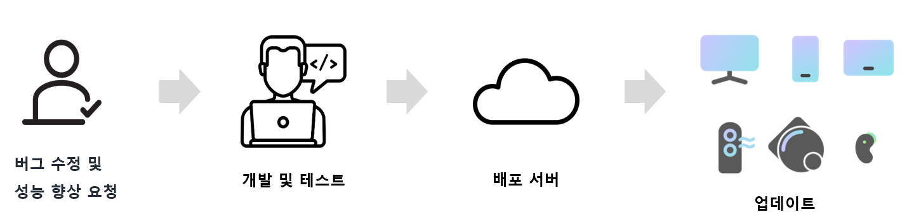
배포 사이즈를 줄이고 필요한 부분만 업데이트가 용이하도록 모듈을 분리할 수 있다. 최종
사용자가 모두 같은 버전을 사용하고 일괄 업데이트를 하면 해당 방안은 매우 효율적일 수
있다. 하지만, 강제 업데이트가 아닌 경우 최종 사용자의 선택에 의해 사용하는 어플리케이션의
버전이 모두 다를 수 있다. 모듈을 분리해서 업데이트를 하는 경우, 예를 들어 하나의
어플리케이션을 UI 와 서비스 프로세스로 분리해서 배포하는 경우 두 프로세스 사이에 버전
차이로 인한 호환성 문제가 발생할 수 있다.
이와 유사하게, On-Device NLU 엔진에 문제가 생겨 업데이트가 필요할 때 Bixby Agent 와
같이 업데이트를 할 수도 있고 Bixby Agent 와 별도로 업데이트를 할 수도 있다. 배포 사이즈와
Network 비용을 고려해 보면 별도 업데이트가 가능 하도록 엔진이 제공되는 것이 합리적으로
보이나, 위에 기술한 대로 분리로 인한 호환성 문제나 성능에 영향을 미치는 부분이 있는지
충분히 검토하고 고려하여 업데이트 및 배포가 쉬운 구조를 설계가 진행되어야 한다.
4.2.4.2. (1 안) Bixby Agent 와 On-Device NLU 의 분리
Bixby Agent 와 On-Device NLU 를 프로세스 단위로 분리하고 이에 따라 업데이트 시 각각의
APK 로 분리 배포하는 방법이다. 아래 그림에서 볼 수 있듯이 Server Bixby Proxy 와 유사하게
On-Device NLU 의 인터페이스 라이브러리 On-Device Proxy 를 제공한다. 이를 호출하게 되면
인터페이스 라이브러리에서 AIDL(Android Interface Definition Language)을 통하여 On-Device
NLU 의 서비스를 호출하는 방식으로 연동한다.
이 방안은 버그 수정이나 모델 성능의 개선이 필요한 경우 Galaxy Store 를 통하여 On-Device
NLU 엔진만 배포가 가능하여, 테스트 비용과 N/W 비용이 절감될 수 있다. 반면, 다른 패키지로
서비스를 제공하기 때문에 AIDL 을 통한 IPC 가 추가적인 지연 시간을 야기할 수 있다.
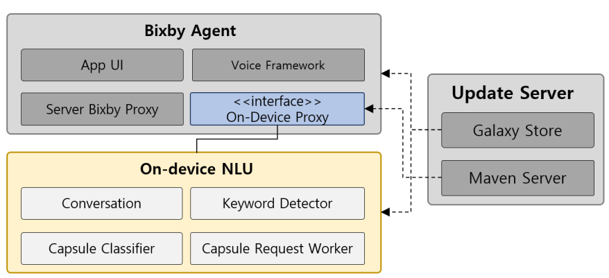
4.2.4.3. (2 안) Bixby Agent 와 On-Device NLU 의 통합
하나의 프로세스 안에 Bixby Agent 와 On-Device NLU 를 통합하는 방법이다. 하나의
Process 로 개발되고 테스트되어 배포되기 때문에 호환성에 유리하다. 아래 그림은 통합
방안으로 On-Device NLU 가 개발되는 방식을 나타낸다. On-Device NLU 는 하나의 AAR 로
패키징되어 Maven 서버에 배포된다. Bixby Agent 는 해당 AAR 을 포함하여 개발된다. Bixby
Agent 는 On-Device NLU API 를 사용한다. 메시지를 주고 받기 위해 Call Back 함수를 등록해서
사용한다.
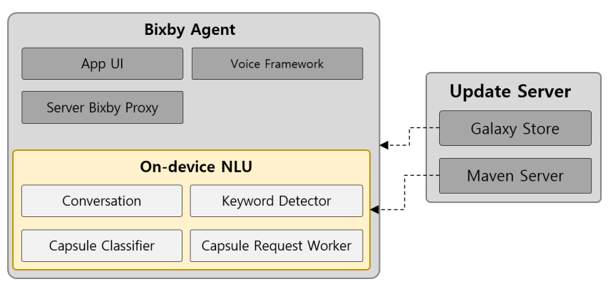
이 방안은 하나의 프로세스 안에서 Multi-threading 으로 동작한다. Bixby Agent 에서 사용자
입력을 받은 후에 Context Switching 하여 On-Device NLU 가 동작한다. 이때, Stack 영역만
처리되면 되기 때문에 응답 시간이 단축되는 이점을 가진다.
4.2.4.4. 후보 비교
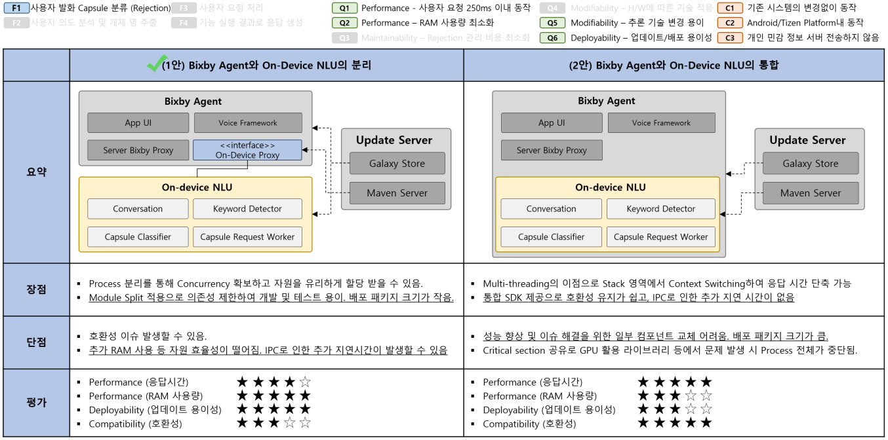
▶ Module Split 과 Multi-processing 을 통한 분리 방안
Multi-processing 은 Concurrency 가 증가되어 서로 독립적으로 수행이 가능하다. 문제 상황
발생 시 각 Process 별로 설정 초기화 및 재시작하여 가용성을 높일 수 있다. 두 Process 의
연동이 필요한 경우 Android IPC 의 Binding 이 필요하여 커뮤니케이션 시간이 증가한다. 또한,
Process 추가는 최소 약 15MB 의 상주 메모리 사용량이 증가된다. (통상적으로, Android
Process 의 경우 기본적으로 제공되는 컴포넌트 들의 메모리 점유율이 높아 특별히 작업을 하지
않는 Process 라 하더라도 메모리를 약 15MB 정도 차지한다.)
Bixby Agent 와 On-Device NLU 를 통합하는 방안 (2 안)은 Multi-processing 대비 자원
효율성이 증대되지만, Multi-threading 의 안정성 문제, System Fault, Database Crash, GPU 활용
라이브러리 사용 시 발생될 수 있는 긴급 상황에 대한 대처가 어렵다. Multi-process 방식은
문제가 발생한 Process 를 중단하거나 다시 시작하면 되지만, Multi-thread 의 경우 특히 데이터
공간(Critical section) 공유 등에서 문제 발생 시 Process 전체를 중단할 수 있는 위험성이 있다.
(1 안)에서 Bixby agent 와 On-Device NLU 는 Module Split 의 일종으로 Process 분리를
적용하여 기능/코드의 응집도를 높인다. 이는 의존성을 제한하여 수정으로 인한 개발 및
테스트가 용이하게 하고, 개별 업데이트가 가능하여 배포 비용을 줄인다. 더불어, 딥러닝 기반
알고리즘의 경우 GPU 와 AP 를 모두 사용하는데 Process 분리를 통해 Concurrency 를 확보하고
자원을 좀 더 유리하게 할당 받을 수 있기에 성능 측면에서 (1 안)은 (2 안)에 비해 이점이 있다.
(1 안)은 의존성을 제한하여 변경 부분을 최소화함으로써 개발/테스트 비용을 줄이고, 업데이트
및 배포되는 산출물의 크기와 개수가 작아 서버 유지비용 및 Network 비용 절감이 (2 안)보다
우수하여 최종 선정한다. Runtime 에 발생하는 호환성 문제는 Use an intermediary 를 (여기서는
On-Device Proxy)적용하여 해결한다. 중재자로서 On-Device Proxy 는 Stable AIDL 로 구현하고,
두 Process 간 요구되는 버전 확인을 통해 호환이 가능한 경우에 메시지를 주고 받는다.
Component Replacement 를 적용하여 배포 전에 Testing 을 수행하는 컴포넌트로 대체하며
배포 후 생길 수 있는 호환성 이슈를 사전에 제거한다.
현재 Bixby Agent 는 Server Bixby 와 Proxy 를 통해 ProtoBuf 통신 프로토콜을 활용하여
연동하고 있다. 아래 그림은 ProtoBuf 를 통해 주고받는 메시지를 나타낸다. 화면에 강조하여
표시될 부분을 나타내는 nl_highlighting, External Process 의 기능 수행을 요청하는
client_function_call, 자연어 응답 메시지를 나타내는 message, 화면을 구성하는 renderer_event,
Capsule 실행의 시작은 capsule_execution_starting, 끝은 capsule_execution_finished 등이
사용된다. AIDL 을 통해 이 메시지들을 구현하면 Bixby Agent 변경없이 On-Device NLU 와도
연동이 가능하다.
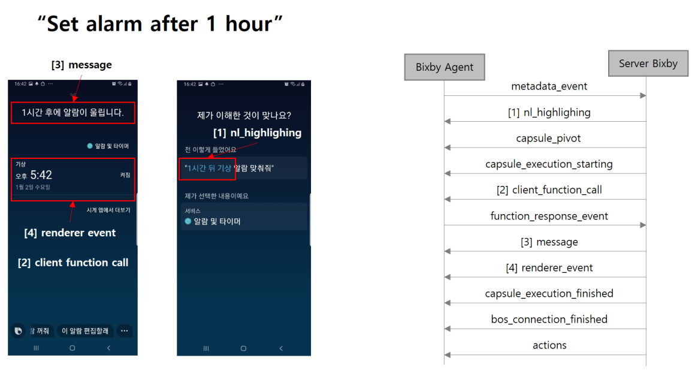
추가로, Android 에서 IPC 로 인한 추가 지연 시간에 대한 영향을 파악하기 위해 POC 를
진행해 본 결과 IPC 로 인한 최대 지연시간은 S20 단말에서 1~2 ms 로 측정된다. 시나리오상
사용자 요청, CFC 요청, 그리고 자연어 응답을 보내는 동작에만 IPC 간 이동이 이뤄지므로 실제
체감 응답속도 지연은 상당히 제한적이다. 추가 Process 로 인한 상주 메모리 증가는 특정
상황에서 문제 일 수 있으나, Reduction overhead Tactic 을 적용하여 실제 사용이 없는 의존
모듈과 불필요한 라이브러리를 제거하는 과정 (Android 의 Proguard 활용)을 통해 운용상
메모리 사용량을 최적화한다.
4.3. 아키텍처 검증
4.3.1. 품질 시나리오 검증
도출된 아키텍처 설계 안들을 검증하기 위하여 ATAM (Architectural Tradeoff Analysis
Method) 기법을 이용하여, 아키텍처 드라이버로 선정한 품질 속성의 품질 시나리오를 기반으로
다음과 같이 평가, 검증하였다.
4.3.1.1. ATAM: QA-01(Performance) 신속한 응답속도
| Scenario | 사용자 발화 후 자연어 응답까지 신속하게 수행됨. (외부 시스템 수행 시간 제외) | ||||
|---|---|---|---|---|---|
| Source | Bixby Agent | ||||
| Stimulus | 음성 처리된 후 Text 형태로 변환된 사용자 발화 | ||||
| Artifact | Bixby Agent, On-Device NLU | ||||
| Environment | Runtime | ||||
| Response | Text 형태의 사용자 발화가 전달되면, 사용자의 의도를 분석하고 개체 명을 추출한 뒤 요구되는 시스템 기능을 수행한다. 시스템 수행 결과를 반영하여 자연어 응답을 생성한 뒤 Bixby Agent에게 전달한다. | ||||
| Measure | [사용자 의도 분석 + 시스템 수행 요청 + 자연어 응답 생성] ≤ 250ms | ||||
| AD | Sensitivity | Tradeoff | Risk | Non-risk | |
| AD-01. NLU모델 RAM 사용량 및 적재 시점 최적화 구조 | N/A | T1 | N/A | N1 | |
| AD-02. Rejection 대상 관리비용 최소화 구조 | N/A | T2 | N/A | N/A | |
| AD-04. Tier 최적 구성을 통한 업데이트 용이성 확보 | S2 | T3 | N/A | N/A | |
| Sensitivity Points | S2 | 업데이트를 용이하기 하기 위해 엔진 인터페이스와 서비스 로직을 분리하는 경우 AIDL 사용으로 성능(응답시간)이 떨어질 수 있음 | |||
| Tradeoffs | T1 | <전체 Capsule 일괄 적재 VS Capsule 별 On-demand로 적재> - 지원 범위가 늘어가면 전체 단일 모델 크기가 커지게 되어 메모리 적재 시간 및 메모리 사용량이 늘어난다. 사용 효율도 떨어진다. - Capsule 별로 On-demand 적재하게 되면, 필요한 모델만 적재함으로써 사용량 효율은 좋아진다. 하지만, 사용자가 체험하는 반응시간이 다소 길어 질 수 있다. | |||
| T2 | <Allowed List VS Exception 방식> | ||||
| - H/W 사양이 다양해 지고, On-Device NLU 적용 기간이 늘어날수록 당사의 관리 비용은 지속적으로 증가할 것 이다. - Exception 발생까지 실행을 해봐야 알 수 있으므로 실행 시간이 증가될 수 있다. | ||
|---|---|---|
| T3 | <Bixby Agent와 On-Device NLU 분리 vs 통합> - 인터페이스와 서비스 로직을 분리하면 IPC로 인해 추가 시간 지연이 발생할 수 있다. - 성능 향상 및 이슈 해결을 위해 배포 시 패키지 사이즈가 작다는 장점이 있다. | |
| Non-Risks | N1 | - DNN 모델 기반 음성 인식 기술에서 여러 모델을 필요에 따라 defer- binding하여 사용하는 것은 잘 알려진 방법이다. - Multi-processing은 가용성 측면에서 유리한 방식으로 알려져 있다. |
| Reasoning | - Capsule 별 On-demand 방식 (Defer Biding) 에서 발생할 수 있는 추가적인 지연시간은 이미 한번 실행된 것은 메모리 적재 후 재사용함으로써 줄일 수 있다. - AIDL로 인한 IPC로 인한 추가 지연 시간은 PoC 결과 영향이 미미함 | |
| Architectural Diagram | ||
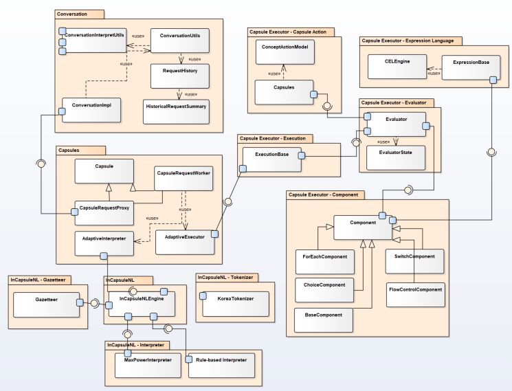
4.3.1.2. ATAM: QA-02(Performance) RAM 사용량 최소화
| Scenario | 사용자 발화 후 자연어 응답 생성까지 RAM 사용량은 최소화 됨. | |
|---|---|---|
| Source | Bixby Agent | |
| Stimulus | Bixby Agent로부터 Text 형태의 사용자 발화 처리 요청 | |
| Artifact | On-Device NLU | |
| Environment | Runtime | |
| Response | 사용자의 의도를 분석하고 개체 명을 추출한 뒤 요구되는 시스템 기능을 수행한다. 시스템 수행 결과를 반영하여 자연어 응답을 생성한 뒤 Bixby Agent에게 전달한다. | |
| Measure | [사용자 요청 처리 시 RAM 사용량] ≤ 500MB | ||||
|---|---|---|---|---|---|
| AD | Sensitivity | Tradeoff | Risk | Non-risk | |
| AD-01. NLU모델 RAM 사용량 및 적재 시점 최적화 구조 | N/A | N/A | N/A | N1 | |
| AD-03. 단말別 NLU엔진/모델 최적화 | S1 | N/A | N/A | N/A | |
| AD-04. Tier 최적 구성을 통한 업데이트 용이성 확보 | S2 | T1 | N/A | N/A | |
| Sensitivity Points | S1 | H/W 제약이 심한 냉장고, 에어컨 같은 단말에 불필요한 overhead가 증가될 수 있다. | |||
| S2 | 공통으로 사용될 수 있는 부분이 반복 구현되면서 Storage 사용 용량의 증가를 가져올 수 있다. | ||||
| Tradeoffs | T1 | <Bixby Agent와 On-Device NLU 분리 vs 통합> - Process 분리하면 약 15MB 정도의 RAM을 더 사용하게 된다. - 모듈 간 의존성을 없앨 수 있어 버그 수정 등으로 인한 업데이트가 용이하다. | |||
| Non-Risks | N1 | Capsule이 결정된 이후 필요한 모델만 적재함으로써 메모리 사용량은 줄어들게 된다. | |||
| Reasoning | - Process로 분리함으로써 추가로 15MB가 더 필요하지만, 론칭 이후 업데이트를 고려하면 최소한의 의존성을 유지하여 관리 비용을 줄이는 것이 당사 경영 기여를 위한 합당한 선택이라 보여짐. - ATAM: QA-01에서 결정된 내용 중 Defer Binding 선택 참고 | ||||
| Architectural Diagram | |||||
4.3.1.3. ATAM: QA-03(Maintainability) Rejection 을 위한 관리비용 최소화
| Scenario | On-Device NLU의 지원 범위가 변경되면 사용자에게 즉시 변경된 SW가 Release 될 수 있어야 한다. |
|---|
| Source | 각 사업부 Bixby PM, 개발자 | ||||
|---|---|---|---|---|---|
| Stimulus | On-Device NLU에서 처리되는 Capsule 및 사용자 요청의 범위 변경 | ||||
| Artifact | On-Device NLU | ||||
| Environment | 개발/Debug/운영 | ||||
| Response | On-Device NLU엔진에서 처리되는 Capsule 및 사용자 요청 범위 변경 | ||||
| Measure | [필요한 리소스] ≤ 4MM | ||||
| AD | Sensitivity | Tradeoff | Risk | Non-risk | |
| AD-02. Rejection 대상 관리비용 최소화 구조 | N/A | T1 | N/A | N1 | |
| Tradeoffs | T1 | <Allowed List VS Exception 방식> - H/W 사양이 다양해 지고, On-Device NLU 적용 기간이 늘어날수록 당사의 관리 비용은 지속적으로 증가할 것 이다. - Exception 발생까지 실행을 해봐야 알 수 있으므로 실행 시간이 증가될 수 있다. - 低사양 단말엔 적용이 어렵다. | |||
| Non-Risks | N1 | - Exception 방식을 통해 지원하지 못하는 기능에 인터럽트를 발생시키는 것은 일반적이다. | |||
| Reasoning | - 모바일 단말을 제외한 나머지 단말들은 제공하는 기능의 수도 적고, 低사양 단말엔 적용이 어렵기 때문에 Allowed List도 충분할 것 같다는 일부 의견이 있었지만, 당사 관리 비용 증가가 심히 우려가 된다는 무선 PM의 의견으로 최종적으로 Exception 방식이 선정됨. (4.2.2.4절에서 후보 비교) - 모델 DB 크기를 줄이기 위해, 개별 모델로 구성된 ‘도메인 결정 후 필요한 모델 런타임에 적재 (Defer Biding)’ 방식과 결합되어 동작할 수 있다. 지원 모델이 늘어나 기능이 추가되면 기존 Exception의 구현을 통해 쉽게 달성할 수 있다. | ||||
| Architectural Diagram | |||||
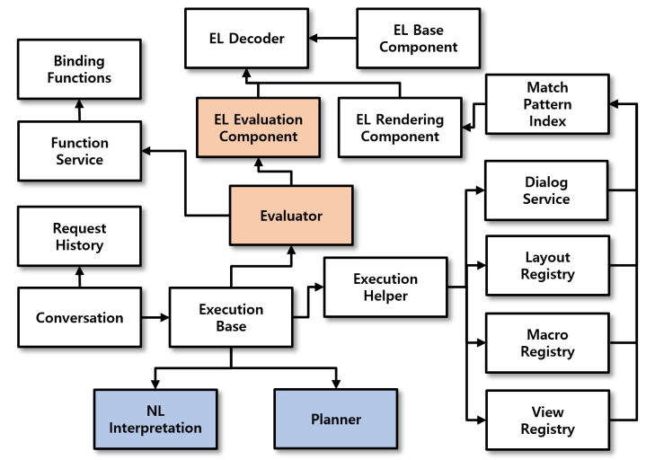
4.3.1.4. ATAM: QA-04(Modifiability) H/W 사양에 따른 최적 엔진 구축
| Scenario | 각 사업부의 새로운 H/W에 대한 요구사항을 반영하여 최적화된 SW가 Release 될 수 있어야 한다. | ||||
|---|---|---|---|---|---|
| Source | 각 사업부 Bixby PM, 개발자 | ||||
| Stimulus | H/W 사양에 따른 최적화 | ||||
| Artifact | On-Device NLU | ||||
| Environment | 개발/Debug 단계 | ||||
| Response | 사업부 요구사항 또는 H/W 사양에 따라 최적화된 구조로 엔진이 구현되고 테스트 수행 후 산출물이 배포된다. | ||||
| Measure | [필요한 리소스] ≤ 2MM | ||||
| AD | Sensitivity | Tradeoff | Risk | Non-risk | |
| AD-03. 단말別 NLU엔진/모델 최적화 | S1 | N/A | N/A | N1 | |
| Sensitivity Points | S1 | 정확성을 만족하기 위한 추론 엔진의 수가 늘어나거나, 공통 패키지에서 하나의 변경사항이 전체 산출물에 영향을 줄 수 있다. | |||
| Non-risk | N1 | 관리비용, 배포 전 테스트 비용을 줄이기 위해 하나의 Repository를 운영하는 것은 합리적인 선택이다. | |||
| Reasoning | 각 사업부의 요구사항은 각각 다르지만, 사용하는 알고리즘 측면에서 차이를 보일 뿐 AI 음성 비서 서비스를 하기 위한 전체 흐름은 모두 동일하다. 따라서, 전체 흐름을 가지는 무선 사업부의 패키지를 전체로 봤을 때 가전, 영상디스플레이 사업부의 산출물은 일부로 실체화 할 수 있도록 하는 것이 합리적으로 보인다. 또한, 당사의 AI 음성 비서 서비스는 모두 동일한 사용자 경험을 제공해야 하는 것도 큰 이유가 될 수 있다. | ||||
| Architectural Diagram | |||||
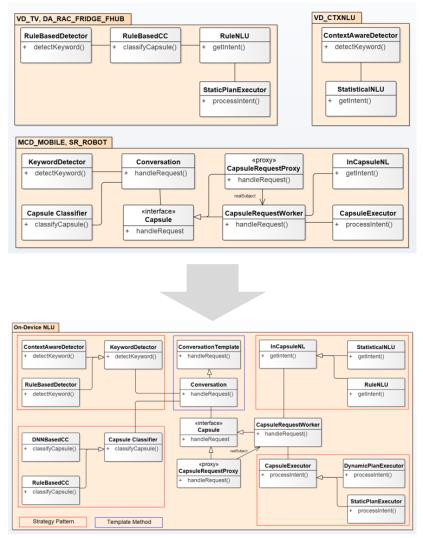
4.3.1.5. ATAM: QA-05(Modifiability) 새로운 기술 적용 용이
| Scenario | 새로운 언어 이해 기술 개발이 끝난 이후, 기존 시스템으로 신기술 적용이 용이한 S/W 구조여야 한다. | ||||
|---|---|---|---|---|---|
| Source | 각 사업부 Bixby PM, 개발자 | ||||
| Stimulus | 사용자 경험 제고, 새로운 기술 등장 | ||||
| Artifact | On-Device NLU | ||||
| Environment | 개발/Debug 단계 | ||||
| Response | 언어 이해와 관련하여 새로운 기술 개발이 완료되면, 해당 기술 적용 및 테스트 후 산출물이 배포된다. | ||||
| Measure | [기술 개발 후부터 필요한 리소스] ≤ 4MM | ||||
| AD | Sensitivity | Tradeoff | Risk | Non-risk | |
| AD-01. NLU모델 RAM 사용량 및 적재 시점 최적화 구조 | S1 | N/A | N/A | N1 | |
| AD-04. Tier 최적 구성을 통한 업데이트 용이성 확보 | N/A | N/A | N/A | N2 | |
| Non-Risks | N1 | 도메인이 결정되고 메모리에 적재하는 구조는, 새로운 알고리즘의 late binding에도 적합하다 | |||
| N2 | UI와 Biz. Logic 분리는 NLU 컴포넌트의 업데이트를 용이하게 해 줌. | ||||
| Reasoning | - 모호한 자연어 표현도 되도록 정확히 이해하기 위해 사용자의 발화 이외에도 시간, 지역, 사용하는 단말 등 다양한 추가 정보를 활용하고 있다. 언어 이해의 기술도 그에 따라 다양한 컨텍스트를 고려하는 방향으로 발전하고 있다. 이러한 진보 방향을 고려했을 때 Defer Binding(4.2.1.3절)은 합리적인 선택으로 보인다. - 컴포넌트의 분리는 의존성을 낮추고 관리 비용을 낮춘다. | ||||
| Architectural Diagram | |||||
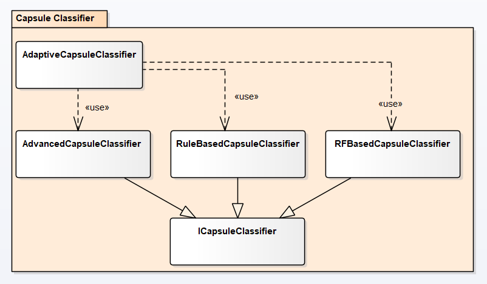
4.3.1.6. ATAM: QA-06(Deployability) 업데이트 및 배포 용이성
| Scenario | 성능 향상 및 버그 수정을 위해 업데이트를 하기 쉬운 S/W 구조여야 한다. | ||||
|---|---|---|---|---|---|
| Source | 각 사업부 Bixby PM, 개발자 | ||||
| Stimulus | 문제점 발견, 교체 요청 | ||||
| Artifact | On-Device NLU | ||||
| Environment | Runtime/Debug-mode | ||||
| Response | Make modification, Test modification, Deploy modification | ||||
| Measure | [기술 개발 후부터 필요한 리소스] ≤ 8MM | ||||
| AD | Sensitivity | Tradeoff | Risk | Non-risk | |
| AD-02. Rejection 대상 관리비용 최소화 구조 | N/A | N/A | N/A | N1 | |
| AD-03. 단말別 NLU엔진/모델 최적화 | N/A | N/A | N/A | N/A | |
| AD-04. Tier 최적 구성을 통한 업데이트 용이성 확보 | N/A | T1 | N/A | N2 | |
| Tradeoff | T1 | <UI와 Biz. Logic 분리vs UI와 Biz. Logic 통합> - Bixby Agent와 호환성 확인을 위한 방안이 필요함. - 호환성 유지는 쉬우나, 개별 업데이트 시 비용이 커진다. | |||
| Risks | R1 | 모든 사업부 산출물을 하나의 패키지로 관리하면, 한 사업부의 요구사항으로 인한 변경사항이 다른 사업부 산출물의 성능에 영향을 줄 수 있음. | |||
| Non-Risks | N 1 | 단말마다 Rejection 대상 관리를 해주지 않아도 되지 상당한 관리 비용이 절감될 것으로 예상됨 | |||
| N 2 | 모델 엔진 모듈이 별도 프로세스에서 수행됨으로써 안정성을 높일 수 있고, 유지 보수 측면에서 상당한 이점이 있음 | ||||
| Reasoning | - Process 분리가 동작 안정성이 높고, 언어 확장 등 비즈니스 측면에서도 유리한 점이 있다고 의견이 모아졌음. - 두 Process간 호환성 확인은 런타임에 버전 확인을 통해, 앱 간 비정상 동작이 예상되는 경우 예외처리를 통해 해결이 가능할 것으로 예상된다. 예를 들어, Stable AIDL 방식을 통해 versioning 또는 signature 변경을 감지하고 대응 가능함. - Android에서 Process 추가에 따라 약 15MB의 상주 메모리 사용량이 증가되는 단점은 개발/배포 비용을 줄이기 위한 불가피한 선택으로 판단된다. | ||||
| Architectural Diagram | |||||
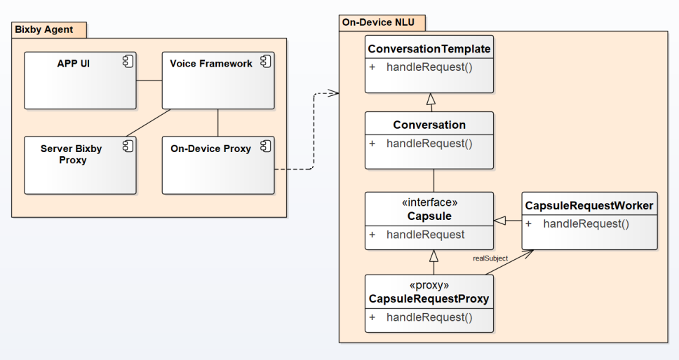
4.3.2. 전체 설계 Coverage 검증
아래와 같이 도출된 아키텍처 설계 안이 모든 아키텍처 드라이버(기능/품질/제약 사항)을
만족하는 것을 확인할 수 있다.
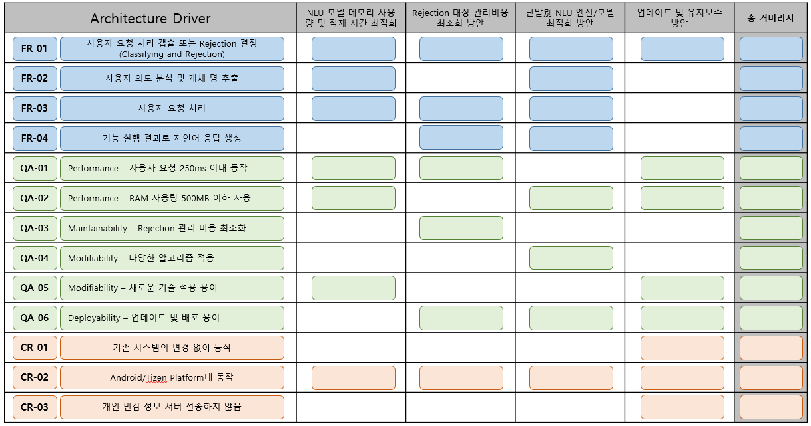
5. 최종 구조 설계
4.1.3 절에서 설계한 구조에 4.2 절에서 선택한 설계 안을 반영하여 최종 구조를 설계한다.
주요 기능별 Package 간 동작 제어, 데이터 흐름과 하위 Class 에 대한 상세 설게 및 구현에
관한 내용을 기술하여 본 시스템의 이해를 돕는다.
5.1. Module View
Domain Model 에서 기능 요구사항만을 만족시키기 위해 도출된 구조(4.1.3 절과 4.1.4 절)에
품질 속성을 만족하기 위해 선택된 설계 안(4.2 절)을 반영하여 최종 구조를 도출하였으며, 최종
구조의 Module View 는 다음의 그림과 같다.
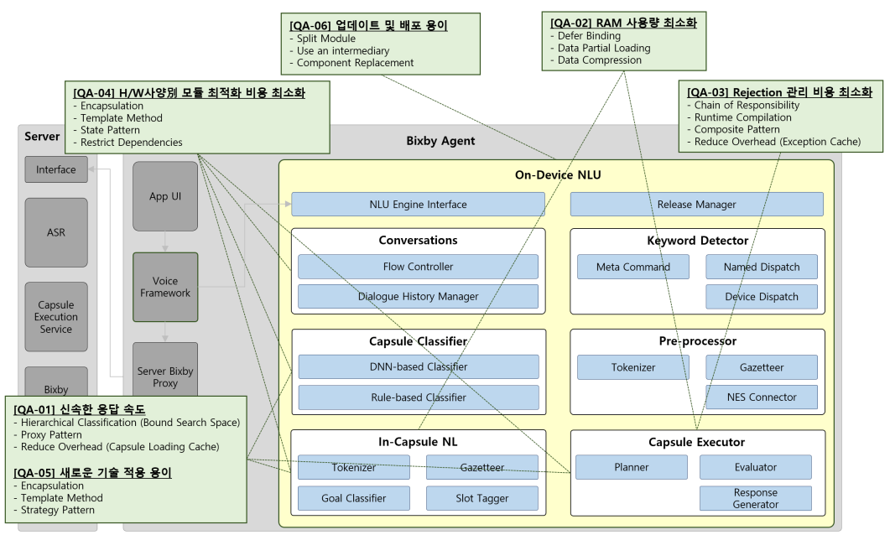
Architectural Drivers 반영 전 Module View
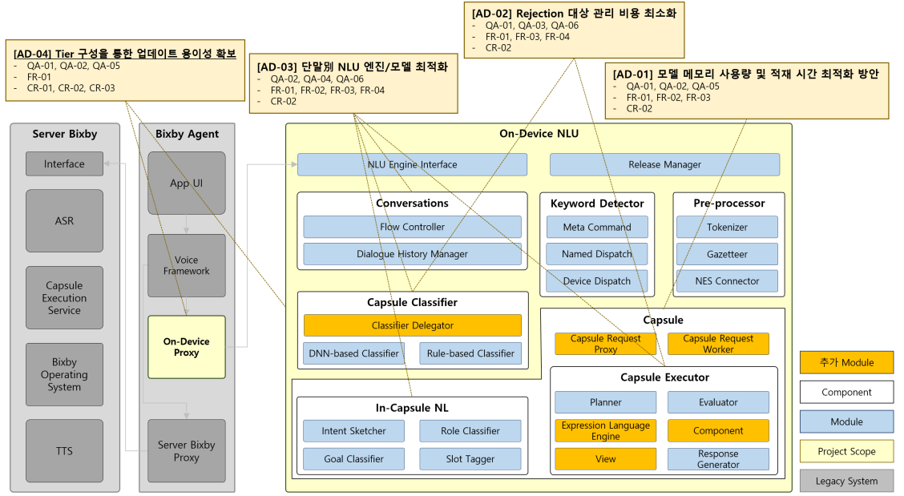
5.2. 주요 Module 에 대한 설명
품질 속성을 만족하기 위해 선택된 설계 안(4.2 절)을 반영하며 새롭게 추가되거나 변경 된
모듈에 대해 설명한다. 기능 요구사항을 만족하기 위해 설계된 모듈들에 대한 설명은 4.1.3 절을
참고하면 된다.
5.2.1. On-Device NLU (변경)
AD-04(4.2.4 절)에서 기술한 Tier 구성을 위해 On-Device NLU 엔진은 개별 서비스로 분리되어
동작하는 형태로 변경되었다. Bixby Agent 와 AIDL 을 통해 연동된다.
5.2.2. Conversation (변경)
AD-01(4.2.1 절)에서 기술한 Defer Binding 을 위해 Conversation 의 Flow Controller 부분이
변경되었다. 주요하게, 모델을 사용자 요청이 처리될 Capsule 이 결정된 이후에 메모리에 적재할
수 있도록 했다.
AD-03(4.2.3 절)에서 기술한 Template Method 를 실현하기 위해 변경되었다. 각 사업부 별로
필요한 모듈은 Configuration 에 정의되어 빌드 시간에 구성되고, template 에 정의된 처리
단계를 재정의할 수 있다.
5.2.3. Pre-processor (변경)
AD-03(4.2.3 절)에서 기술한 Template Method 를 구현할 때 공통적으로 사용하는 Tokenizer,
Gazetteer, NES connector 부분을 하나의 컴포넌트로 구성했다. 이 컴포넌트는 입력된 사용자
발화를 분석하기 위해 필요한 형태로 전처리 하는 역할을 가진다.
5.2.4. Capsule Classifier (변경/추가)
| 추가된 모듈 | 설명 |
|---|---|
| Delegator | DNN-based Classifier 와 Rule-base Classifier 는 상황에 따라 상호 보완적으로 사용할 수도 있고, 독립적으로 사용될 수도 있다. 이 모듈은 상황別 동작을 제어한다. |
AD-03(4.2.1 절)에서 기술한 Template Method 를 실현할 때 사업부 별 요구사항을 만족하기
위해 새롭게 추가되는 기술 적용의 용이성도 확보하고 다양한 알고리즘의 조합도 용이할 수
있도록 변경되었다.
5.2.5. Capsule (변경/추가)
| 추가된 모듈 | 설명 |
|---|---|
| Capsule Request Proxy | 실제 필요까지 비용을 줄이기 위한 방법으로 사용자 요청을 실제로 처리하는 객체에 접근하기 위해 중간 대리 역할을 하는 객체. 실제 |
| 대상에 대한 접근을 제어하고 실제 대상의 생성과 삭제 책임을 가진다. 재사용 가능할 때 캐시로써 동작을 한다. | |
|---|---|
| Capsule Request Worker | 사용자 요청을 실제로 처리하는 객체로 자연어 이해를 In-Capsule NL 과 시스템 수행 계획 및 실행을 담당하는 Capsule Executor 의 동작을 관리한다. |
AD-01(4.2.1 절)에서 기술한 Defer Binding 을 구현을 위해 Capsule 의 메모리 적재를 하는
시점을 조절하기 위한 변경이 있었다. Conversation 에서 전달된 Capsule ID 로 메모리에 이미
적재되었는지 Capsule Request Proxy 를 통해 확인하고, 없다면 메모리에 새롭게 적재한다.
5.2.6. In-Capsule NL (변경)
AD-03(4.2.3 절)에서 HW 사양에 따른 단말 별 NLU 엔진 및 모델의 최적화를 위해 Strategy
pattern 을 적용하기 위해 In-Capsule NL 컴포넌트가 변경되었다. 사양에 따라, 그리고 지원
범위에 따라 Goal Classifier, Slot Tagger (signal labeler), Role Classifier 로 딥러닝 알고리즘,
규칙기반 분류 알고리즘, 통계 기반 분류 알고리즘 등이 사용될 수 있고 이들 각각을 하나의
클래스로 Capsule 화 하여 교체가 가능하도록 했다. 교체에 따른 다른 연결 모듈이나
컴포넌트의 변경은 수반되지 않기 때문에 추가 개발비용은 없다.
5.2.7. Capsule Executor (변경/추가)
| 추가된 모듈 | 설명 |
|---|---|
| Dynamic Planner | Plan Graph 를 dump 해서 사용하는 Static planner 는 같은 의미의 다양한 자연어 표현에서 Slot 의 구성이 다른 경우 dump 에 포함되어 있지 않는 plan graph 를 매칭시키지 못하는 한계가 있다. 이를 극복하기 위해, 동적으로 graph 를 생성하고 탐색하는 모듈을 추가했다. Server Bixby와 동일한 알고리즘과 동작 방식을 택했다. |
| Evaluator | Planner, executor 의 입력, 출력이 정해져 있는 규격에 적합한지 판단한다. 또한, 시스템 액션을 수행하고 난 결과가 정상인지 아닌지를 판단한다. |
| Expression Language Engine | Expression Language 로 표현된 스크립트를 수행하는 엔진. 오픈소스로 되어있고, 단말 내에서 수행하도록 최적화하여 적용했다. |
| Component | Capsule 의 액션 스크립트 (Expression Language 를 이용한 스크립트)에 기술된 로직이 구체화된 객체. If-else, choice, for-each 등의 흐름 제어, 반복, 선택 등이 포함된다. |
| View | 시스템 액션의 결과에 따라 사용자에게 보여주는 자연어 응답을 생성한다. 자주 사용하는 부분을 미리 구현해 둔 macro registry, android의 기본 페이지를 구성하는 view registry, 지역, 언어에 따라 자연어 응답을 표현하는 Dialog가 포함되어 있다. |
AD-02(4.2.2 절)에서 기술한 Exception 을 통한 Rejection 을 구현하기 위해 Component 와
Expression Language 가 추가 되었다. Bixby Grammar 로 표현된 액션 스크립트는 Runtime
Compilation 을 통해 Component 객체로 표현되고, 이 객체들은 구현에 따라 처리할 수 없는
Biz. Logic 의 경우 실시간 Exception 을 발생시킨다.
AD-03(4.2.3 절)에서 HW 사양에 따른 단말 별 NLU 엔진 및 모델의 최적화를 위해 Strategy
pattern 을 적용하기 위해 Capsule Executor 의 Planner 부분이 변경되었다. 지원 범위에 따라
Static Planner 와 Dynamic Planner 를 선택적으로 사용할 수 있다. Evaluator 는 Planner 의 입력,
출력과 시스템 액션의 결과를 검증하기 위해 사용된다. View 는 시스템 액션 수행 결과로
자연어 응답을 생성하기 위해 필요한 재료들을 생성하는 역할을 맡는다.
5.3. 주요 Module Interfaces
Component 별로 내부 혹은 외부와 interface 를 담당하는 주요 Module 들의 API 를 기술
하였다. 아래 그림은 On-Device NLU 의 전반적인 Data Flow 를 나타낸다.
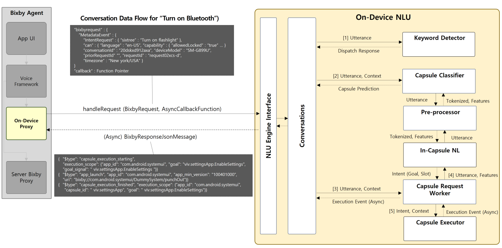
5.3.1. On-Device NLU
| API 명 | 설명 |
|---|---|
| init | On-Device NLU 엔진을 초기화 한다. |
| deInit | On-Device NLU 엔진을 메모리에서 삭제한다. |
| handleRequest | Text 형태의 사용자 요청을 처리한다. |
| handleExecuteResult | 시스템 액션 수행 결과를 입력으로 자연어 응답을 생성한다. |
Figure 43 은 Bixby Agent 가 On-Device NLU 의 handleRequest 를 호출했을 때 주고 받는
JSON 형태의 메시지를 나타낸다.
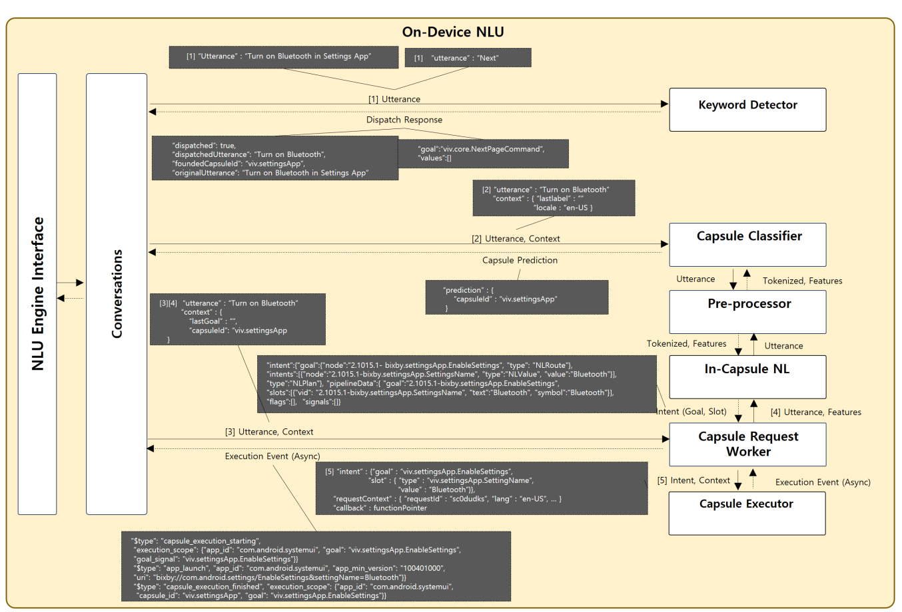
5.3.2. Conversation
| API 명 | 설명 |
|---|---|
| execute | CFC 가 수행된 결과 또는 Prompt 상태에서 사용자로부터 입력 받은 추가 정보를 통해 이후 실행을 요청한다. |
| interpretAndExecute | Text 형태의 사용자 요청을 전달받고, 의도 분석과 goal 을 달성하기 위한 시스템 액션을 계획 및 실행을 요청한다. |
Figure 43 에서 handleRequest 가 호출되면 Conversation 의 interpretAndExecute 가 호출되고
handleExecuteResult 가 호출되면 Conversation 의 execute 가 호출된다.
5.3.3. Keyword Detector
| API 명 | 설명 |
|---|---|
| detect | “메시지 앱에서~” 와 같이 특정 어플리케이션 이름이라 “거실에 있는 TV에서~” 와 같이 특정 기기명이 포함되어 있는지 확인한다. |
| Interpret | 앞으로, 뒤로, 첫 번째 등의 간단한 형태의 명령어를 처리한다. |
Figure 44 의 [1]은 detect 와 interpret 를 각각 호출했을 때의 결과를 보여준다. detect 를
호출한 경우 Settings App 이 확인되어 결과로 viv.settingsApp 을 반환했고, interpret 를 호출한
경우 Next 가 확인되어 cic.core.NextpageCommand 가 반환된다.
5.3.4. Capsule Classifier
| API 명 | 설명 |
|---|---|
| getCapsuleClassifier | Capsule 분류기의 인스턴스를 반환한다. |
| classify | 사용자 요청을 처리할 Capsule을 결정한 후 Capsule ID를 반환한다. |
Figure 44 의 [2]는 'Turn on Bluetooth’ 발화로 classify 를 호출했을 때, viv.settingsApp 이
반환되는 것을 보여준다. CapsuleClassifier 내부적으로 Pre-processor 에서 제공하는 Tokenizer 와
Gazetter 의 API 를 호출하여 사용한다.
5.3.5. Pre-processor
| API 명 | 설명 |
|---|---|
| tokenize | Raw text를 의미를 가지는 최소한의 단위로 잘라 배열로 반환 |
| recognizeAll | Raw text에서 사전에 정의해 둔 단어 집합에 매칭되거나 특정 패턴을 가진 부분을 찾아서 반환한다. |
| findAll | Raw text에서 NES에 정의해 둔 단어 집합에 매칭되거나 특정 패턴을 가진 부분을 찾아서 반환한다. |
5.3.6. Capsule Request Proxy
| API 명 | 설명 |
|---|---|
| interpretAndExecute | Capsule ID와 사용자 요청을 입력 받아 intent 분석과 시스템 액션 계획 및 수행을 요청한다. 만약 특정 Capsule ID에 해당되는 Capsule Request Worker가 없다면 getCapsuleRequestWorker를 이용하여 해당 Capsule ID를 가지는 인스턴스를 가져온다. |
Figure 44 에서 Conversation 으로부터 [3]이 호출되면 수행된다. 해당 Capsule ID 를 가지는
Capsule Request Worker 에게 요청을 전달한다. 없으면, 새로 생성한다.
5.3.7. Capsule Request Worker
| API 명 | 설명 |
|---|---|
| interpretAndExecute | Capsule ID와 사용자 요청을 입력 받아 intent 분석과 시스템 액션 계획 및 수행을 요청한다. |
| getCapsuleRequestWorker | Capsule Request Worker의 인스턴스를 반환한다. |
| execute | 특정 Capsule ID로 CFC가 수행된 결과 또는 Prompt 상태에서 사용자로부터 입력 받은 추가 정보를 통해 이후 실행을 요청한다. |
|---|---|
| Interpret | 사용자 의도의 분석을 요청한다. |
| interpretAndExecute | Text 형태의 사용자 요청을 전달받고, 의도 분석과 goal을 달성하기 위한 시스템 액션을 계획 및 실행을 요청한다. |
Figure 44 에서 Conversation 으로부터 [3]의 실제 액션을 수행한다. In-Capsule NL 과 Capsule
Executor 를 이용하여 사용자의 요청을 처리한다. 사용자의 요청을 처리하는 과정에서 이미
실행한 요청과 동일한 입력이 들어오면 이전 결과를 활용하여, 이후 연산에 드는 비용을 없앨
수 있다.
5.3.8. In-Capsule NL
| API 명 | 설명 |
|---|---|
| load | 특정 Capsule ID로 해당하는 Capsule의 리소스를 읽어 메모리에 적재한다. Capsule 리소스는 해당 Capsule에 미리 정의된 사용자 발화들과 분석 결과들이 담겨있다. |
| Interpret | 사용자 의도를 분석하고 시스템 액션을 수행하기 위해 필요한 정보를 추출한다. 추출된 결과는 INTENT라 불리는 데이터 구조에 담겨 반환된다. |
Figure 44 의 [4]는 Conversation 에서 Capsule Request Worker 로부터 ‘Turn on Bluetooth’에
대한 interpret 요청을 받으면 사용자 발화와 Pre-processor 에서 전처리 된 결과를 이용하여
사용자의 의도를 담는 INTENT 정보를 채워 반환한다.
5.3.9. Capsule Executor
| API 명 | 설명 |
|---|---|
| buildCapsule | 특정 Capsule ID로 해당하는 Capsule의 리소스를 읽어 메모리에 적재한다. Capsule 리소스는 사용자의 의도를 수행하기 위해 필요한 시스템 액션들의 수행 계획 방법과 수행에 필요한 로직, 그리고 자연어 응답을 생성하기 위해 필요한 문구와 그림들이 포함되어 있다. |
| execute | INTENT 또는 CFC 결과를 입력 받아 시스템 액션을 계획대로 수행하고, 그 결과에 따라 자연어 응답을 생성해 낸다. |
Figure 44 의 [5]는 INTENT 데이터를 인자로 Capsule Request Worker 로부터 실행을 요청
받으면 시스템 액션 수행에 필요한 deep link, Bixby Agent 로 전달하는 메시지 등을 생성하여
반환한다.
5.4. Component & Connector View
다음은 최종 구조의 실행 시 동작 형태를 보여주는 Component & Connector View 로, 실행
component 들은 Figure 42 의 Module View 에서 module 들에 일정 부분 대응된다.
5.5. Deployment View
CR-02. Android/Tizen Platform 내 동작을 달성하기 위해 On-Device NLU 은 C++로 개발되어
Android Platform 은 Java Native Interface (JNI) Wrapper 와 NDK 빌드 된 Maven 서버에 AAR 로
배포가 되며 On-Device NLU APK 는 해당 AAR 를 이용하여 패키징된다. Tizen Platform 은 Tizen
Samsung Experience Service (SES)를 통해 빌드 된 후 동적 라이브러리인 SO 형태로 배포된다.
SO 파일은 SR 에서 운영하는 Artifactory 서버에 배포되고 On-Device NLU TPK 는 해당 SO 를
이용하여 패키징된다. 아래 그림은 현재 배포 및 단말에 적용되는 Deployment View 를
나타낸다. Bixby Agent 는 단말의 사용 언어에 따라 Bixby Language Pack 을 배포하는데, On-
Device NLU 모델인 on-device-nlu-resources-packages.zip 은 언어별로 해당 Language Pack 에
포함된다.
6. 구현
5 절에서 도출된 최종 구조를 기반으로, 지면의 제약으로 기능 요구사항을 만족하기 위한 UC-
01, UC-02, UC-03, UC-04 위주로 구현의 상세 설계와 구현 관련 세부 사항을 위주로 기술한다.
6.1. UC-01: 사용자 요청이 처리될 Capsule 또는 Rejection 결정
UC-01 은 사용자 발화가 처리될 Capsule 을 분류하고, 처리가 될 수 없는 경우 Rejection
처리가 되어야 하는 것이다. 이와 관련되어 있는 컴포넌트는 Conversation, Meta Command,
Keyword Dispatcher, Capsule Classifier 그리고 Bixby Component 이다. Rejection 을 처리하기
위해 Bixby Component 가 필요한데, 이는 6.2 절에 기술되었다. 여기서는, Bixby Component 를
제외한 나머지 컴포넌트의 상세 설계 사항을 기술한다.
6.1.1. Class Structure
Conversation 컴포넌트의 클래스들에 대한 설명은 아래 표에 기술하였다.
Table 12. Class 설명 – Conversation
| Class 명 | 설명 |
|---|---|
| Conversation | 대화 이력 관리와 사용자 요청 처리 모듈 인터페이스 |
| ConversationImpl | Conversation 인터페이스로 구체화 된 모듈 |
| ConversationConfiguration | On-Device NLU 엔진을 생성할 때 필요한 사용자 정보, 사용하는 can 정보 및 알고리즘 정보가 담겨있다. |
| ConversationRequest | 사용자 요청과 context가 담겨있는 객체 |
| ConversationVersion | Conversation 모듈의 버전 정보를 담고있다. |
| ConversationStateManager | 사용자 요청의 처리 상태 정보를 담고있다. |
| ConversationUtils | 사용자 요청 처리를 위한 시스템 전반의 흐름을 관장함 |
| ConversationInterpretUtils | 사용자 의도 분석 컴포넌트 제어 |
| ConversationContext | Outer, Prompt, Continuation와 같은 Conversation Type을 담고있다. |
| ConversationContextUtils | ConversationContext를 이전 Plan 그래프에서 가져옴. |
| ConversationContextEvent | Prompt, Continuation등의 event를 담고있다. |
| RequestHistory | 사용자 요청 정보의 추가, 삭제, 변경을 담당한다. |
| HistoricalRequestSummary | 현 사용자 요청과 관련이 있는 지난 요청들을 담고있다. |
| HistoricalExecution | 지난 요청들에 대한 정보를 가져오거나 재실행한다. |
| ConversationNLContext | HistoricalRequestSummary나 ConversationContext를 통해 얻어진 정보 중 사용자 요청에서 의도 분석에 필요한 Context담고 있다. |
| Capsule | 사용자 요청이 처리될 Capsule 데이터를 가지고 실행을 담당 |
| CapsuleRequestProxy | Capsule 실행 요청을 우선적으로 받는 Proxy |
| CapsuleRequestWorker | Proxy로부터 받은 Capsule 수행 요청을 실행하는 실제 실행 부분 |
| AdaptiveInterpreter | Capsule 데이터로 사용자 요청의 의도를 분석하는 부분 |
| AdaptiveExecutor | Goal을 달성하기 위해 필요한 일의 계획 및 수행을 담당 |
아래는 ConversationInterpretUtils 가 사용하는 AdaptiveMetaCommandsInterpreter 와
AdaptiveCapsuleDisptcher 의 전체 클래스이다.
| 이전 테이블에서 기술이 생략된 클래스에 대한 설명은 아래 표에 기술하였다. |
|---|
Table 13. Class 설명 – Meta Command and Keyword Detector
| Class 명 | 설명 |
|---|---|
| AdaptiveMetaCommandsInterpr eter | ConversationInterpretUtils 로부터 Meta Commands 에 대한 분석을 의뢰 받는다. |
| MetaCommandsInterpreter | Meta Commands 분석 엔진 |
| MetaCommandsInterpreter | 사용자 요청이 Meta Command에 해당하는지 판단함. |
| AdaptiveCapsuleDispatcher | 사용자 요청이 처리될 Capsule을 분석한다. |
| DeviceDispatcher | 기기명 분석 엔진 |
| DeviceDetector | 사용자 요청에 명확한 대상 기기명의 포함 여부를 통해 현재 단말에서 처리가능한지 판단함. |
| NamedDispatcher | 사용자 요청에 포함된 명확한 Capsule명을 통해 판단함. |
| CapsuleNameVocab | Capsule 이름을 저장하거나 찾을 수 있다. |
| Rule Package | 규칙기반 알고리즘으로 동작하는 패턴 매칭 패키지 |
Capsule Classifier 컴포넌트의 전체 클래스이다.
Capsule Classifier 컴포넌트의 클래스들에 대한 설명은 아래 표에 기술하였다.
Table 14. Class 설명 – Capsule Classifier
| Class 명 | 설명 |
|---|---|
| AdaptiveCapsuleClassifier | 사용자 요청이 처리될 Capsule을 분석한다. |
| DelegateCapsuleClassifier | DNN과 Rule의 Delegator 클래스 |
| DeepCapsuleClassifier | DNN 기반 Capsule 분류기 (사용자 요청이 처리될 Capsule 분석) |
| CapsuleAdaptor | 원본 Capsule을 온디바이스 DNN엔진에 적합하게 변경 |
| DNNInferenceEngine | DNN 엔진의 interface |
| NNFWWrapper | 안드로이드用 Neural Network F/W 사용 위한 Wrapper |
| NNStreamerWrapper | 안드로이드用 Neural Network 가속lib 사용 위한 Wrapper |
| ClassifierEnUS/KoKR | 영어/한국어 DNN 분류기 |
| RuleBasedCapsuleClassifier | 규칙 기반 Capsule 분류기 (사용자 요청이 처리될 Capsule 분석) |
| RuleCapsuleAdaptor | 원본 Capsule을 온디바이스 Rule엔진에 적합하게 변경 |
| Tokenizer | 의미를 가지는 최소의 단위로 나눔 |
| TextIndex | 특정 Text를 담고있고, 찾아지면 index 반환 |
| GazetteerHandler | Gazetter를 분석하기 위한 엔진의 핸들러 주소를 담고있다. |
| LabelIndex | 특정 Label을 담고있고, 찾아지면 index 반환 |
6.1.2. Component Structure
6.1.3. Sequence
UC-01 에 해당하는 Conversation 에 사용자 요청이 도달한 후 요청이 처리될 Capsule 을
분류하기까지 단계별 동작을 설명한다.
단계별 동작 설명
① 사용자의 음성 명령어는 텍스트로 변환되어 On-Device NLU에 전달된다. 처음으로 실행되는 경우,
On-Device NLU는 ConversationImpl을 생성하고 이 모듈은 Keyword Detector, Meta Command,
Capsule Classifier 그리고 Capsules를 생성하고 바인딩 한다. 이후, 사용자의 발화를 인자로
execute를 호출한다.
② ConversationImpl은 ConversationUtils에 사용자 의도 분석 및 시스템 수행 계획을 위해
interpretAndPlan을 호출한다. 이 함수를 호출하기 전에 RequestHistory 모듈을 통해 이전 대화 기
록을 참고하는 과정이 있으나 여기에선 자세한 설명은 생략한다. ConversationUtils는 사용자 발화
가 처리될 Capsule을 결정하고 의도를 분석하기 위해 ConversationInterpretUtils의 interpret를 호
출한다.
③ Keyword Detector와 Meta Command는 사용자 발화에서 기기명이나 특정 Capsule명이 또는 사전
에 정의된 단순 표현등이 포함되어 있는지 또는 확인 후 그 결과를 반환한다. 만약, 사용자의 요청
이 단말에서 처리될 수 없다면 Exception을 발생시키고 ODINBOS는 이를 외부 모듈로 전달하여
사용자 요청을 서버로 전달하기 위한 다음 과정을 준비시킨다.
④ 단말에서 처리할 수 있는 특정 Capsule명이나 명령어가 인식되면 해당 Capsule을 dispatch할 수
있도록 그 결과를 반환한다.
⑤ Keyword Detector나 Meta Command에서 어떠한 표현도 인식되지 않았다면, 사용자 발화는
Capsule Classifier에 전달되어 DNN기반 분류기와 규치 기반 분류기에서 사용자 요청을 처리할 수
있는 Capsule을 결정한다. 결과는 ConversationImpl에 최종 전달된다.
6.2. UC-02: 사용자 의도 분석 및 개체 명 추출
6.2.1. Class Structure
UC-02 의 사용자의 의도를 분석하고 시스템 액션 수행에 필요한 개체 명을 추출하기 위한
컴포넌트들의 클래스 구조는 아래와 같다. 주어진 Raw Text 를 최소한의 의미를 가지는 단위로
나누는 Tokenizer 는 초록색 Boundary 로, 그리고 Raw Text 에서 사전에 정의된 단어나 패턴을
매칭하여 결과를 반환하는 Gazetteer 는 파란색 Boundary 로 표시해 두었다. Tokenizer 와
Gazetteer 의 결과를 입력 받아 의도 분석 및 개체 명 추출하는 Interpreter 는 Random Forest
알고리즘을 사용하였고 빨간색으로 표시해 두었다.
주요한 클래스들의 목적에 대한 설명은 아래 표에 기술하였다.
Table 15. Class 설명 – In-Capsule NL Engine
| Class 명 | 설명 |
|---|---|
| InCapsuleNLEngine | Interpreter, Gazetteer, Tokenizer의 흐름을 관장하는 엔진 |
| rf::MaxPowerInterpreter | Random Forest 기반 Statiscal NLU 엔진 |
| rf::GoalClassifier | 사용자 요청의 의도의 목적을 분석 |
| rf::SignalClassifier | Prompt 또는 Continuation인지를 분석 |
| rf::SignalLabler | 사용자 의도와 부합하는 개체명을 추출 |
| rf::IntentSketcher | 분석된 결과를 INTENT 구조체로 생성 |
| Gazetteer::AtomicGazetteer | 사전에 정의된 단어들과 매칭되는지 분석 |
| Gazetteer::PatternGazetteer | 사전에 정의된 패턴들과 매칭되는지 분석 |
| kokr::KoreaTokenizer | 의미를 가지는 최소한의 단위로 나누어 반환 |
6.2.2. Component Structure
6.2.3. Sequence
UC-02 에 해당하는 사용자 의도 분석의 단계별 과정을 설명하도록 한다
단계별 동작 설명
① 6.1절에서 Capsule Classifier에서 결정된 Capsule ID에 따라 Capsule Request Proxy는 Capsule
Request Worker (이하, CRW)를 생성한다. CRW는 AdaptiveInterpreter를 통해 사용자 의도 분석을
진행한다.
② 전달된 사용자 요청 Raw text는 tokenizer에 전달되어 최소한의 의미를 가지는 단위로 나뉘고
Gazetteer에서 사전에 정의된 단어나 패턴을 찾는다. 이 과정을 통해 의미 있는 정보들은 사용자
의도를 분석하기 위한 feature로 사용된다.
③ Features들은 Interpreter에 전달되어 사용자 의도인 intent와 개체명인 slot을 채우기 위해 사용된
다. Random Forest 기준으로 상기 테이블에 설명된 classifier들이 차례로 수행되어 찾아진 분류된
feature들이 extractor에 의해 map에 저장된다.
④ IntentSketcher는 map에 저장된 정보로 최종 INTENT를 구성한다. 여기엔 사용자 의도와 개체 명
외에도 이후 Planning, Evaluation을 수행하기 위해 필요한 정보인 flag, 사용자 발화 타입 등에 대
한 정보들을 추가로 담고 있다.
6.3. UC-03: 사용자 요청 처리
사용자 요청이 처리될 Capsule 이 결정되면 Capsule Request Proxy 는 요청을 전달 받아 이후
과정을 수행한다. 만약, 요청을 처리할 Capsule 이 메모리에 적재되어 있지 않으면 Capsule
Request Worker 의 API 를 호출하여 Capsule 리소스를 빌드한 후 메모리에 적재한다. 이후,
사용자 의도 분석과 사용자 요청을 달성하기 위해 필요한 시스템 액션을 계획하고 실행하는
과정이 수반된다. 이와 관련 있는 컴포넌트들의 클래스 구조를 아래와 같이 나열하고 설계
내용을 기술했다.
6.3.1. Class Structure
사용자의 의도를 분석하고 시스템 액션 수행에 필요한 개체 명을 추출하기 위한 컴포넌트들의
클래스 구조 및 상세 동작 설명을 6.3 절에 기술되었다. 이 절에서는 사용자의 의도와 개체 명
정보가 담긴 데이터 객체인 INTENT 생성 이후부터 UC-03 의 내용을 기술한다.
INTENT 로 전달된 의도 및 개체 명은 Planner 에서 시스템 액션을 계획하는데 사용된다. 이
프로젝트에서는 H/W 제약이 심한 가전, TV 등에 사용이 되는 Static Planner 와 상대적으로
제약이 덜한 모바일에서 사용되는 Dynamic Planner 가 제공된다. Static Planner 는 INTENT 별
Plan Graph 를 dump 하여 저장한 후 꺼내 사용하는 방식이라 가볍고 따른 장점이 있는 반면,
처음 본 INTENT 는 수행이 불가능하다는 단점이 있다. 이를 극복한 것이 Dynamic Planner 로
처음 본 INTENT 여도 실시간으로 모든 계획을 조합하여 수행을 시도해 본다. Dynamic
Planner 는 빨간색, Static Planner 는 초록색, 그리고 plan 을 생성하는 Builder 는 초록색으로
표시해 두었다.
주요한 클래스들의 목적에 대한 설명은 아래 표에 기술하였다.
Table 16. Class 설명 – Adaptive Planner
| Class 명 | 설명 |
|---|---|
| ExecutionPlannerBase | INTENT를 입력으로 Planner 동작을 요청함 |
| PilelinePlanner | Dynamic Planner의 동작을 요청함 |
| AugmentingPathPlanner | 주어진 추가 정보로 새로운 계획을 기본 계획과 병합하여 하나로 생성 |
| ConceptActionGraph | 계획과 실행이 노드로 표현된 그래프 |
| staticPlanner::staticPlanner | Static Planner의 동작을 요청함 |
| staticPlanner::PlanGraph | Dump된 Static Plan Graph를 가져옴 |
| CapsuleBuilder | Capsule 리소스에서 Planner에 필요한 Graph를 생성 |
| CapsuleResource | INTENT별 동작 로직, 응답이 포함되어 있음. |
INTENT 를 수행할 계획이 수립되면, 각 계획을 평가하면서 수행해 본다. 평가는 크게 보면
추출된 정보가 유효한 것인지 판단하는 Input Evaluation 과 각 계획의 로직을 수행한 후 그
결과가 유효한 것인지 판단하는 Output Evaluation 을 포함한다. 유효성을 판단하는 Evaluator 와
evaluation 단계 및 상태를 나타내는 Evaluator State 의 집합은 빨간색, Evaluation 을 요청하는
주체인 Executor 는 파란색으로 표시해 두었다.
| 주요한 클래스들의 목적에 대한 설명은 아래 표에 기술하였다. |
|---|
Table 17. Class 설명 – Plan Evaluation
| Class 명 | 설명 |
|---|---|
| ExecutionBase | Evaluation를 요청함 |
| EvaluatorState | Evaluation의 단계와 상태를 저장함 |
| Evaluator | Evaluation을 담당하는 주체로, 입력/출력 유효성 판단 |
| Action | Planner의 계획 로직을 담고 있음 |
| FunctionService | 시스템 외부의 기능 수행을 요청 |
| TemplateOutputFunctionEndpoint | 시스템 외부 기능 수행을 위한 URL |
| Component | Bixby Component로 다음에서 설명 |
계획의 로직을 수행하는 과정은 단말마다 H/W 제약이나 Context 상이할 수 있기 때문에 그
로직이 Bixby Grammar 로 정의되어 Capsule 리소스에 포함되어 있다. Evaluation 과정에서
Bixby Grammar 는 Component 로 변경되어 각각의 로직을 수행하게 된다. 사용자의 요청을
처리하는 과정에서 On-Device 에서 처리할 수 있는 지의 여부를 결정하기 위해 이
프로젝트에서는 각각의 로직을 담고있는 Component 가 제대로 수행 되는지의 여부를 통해
파악한다. Component 는 존재하지만 내부에 로직이 구현되어 있지 않거나 Component 자체가
존재하지 않으면 Exception 을 발생시키고 이는 차례로 Conversation 에 전달되어 Rejection 을
수행하게 된다. Component 는 빨간색, Component 를 수행시키는 Expression Language 는
파란색으로 표시해 두었다.
주요한 클래스들의 목적에 대한 설명은 아래 표에 기술하였다.
Table 18. Class 설명 – Bixby Component
| Class 명 | 설명 |
|---|---|
| ELEngine | Expression Language(EL)로 표현된 구문을 평가 |
| ExpressionParser | EL 문법에 따라 구문 파싱 |
| ConditioImpl | EL로 표현된 구문을 평가 요청함 |
| SwitchComponent | Switch 문법을 담고있는 Component |
| FlowControlComponent | If-else 문법을 담고있는 Component |
| ChoiceComponent | Choice 문법을 담고있는 Component |
| ForEachComponent | 반복문 문법을 담고있는 Component |
6.3.2. Component Structure
6.3.3. Sequence
본 절에서는 사용자 요청이 처리될 Capsule 이 결정되고 해당 Capsule 데이터를 이용하여
의도와 개체 명이 분석된 후 INTENT 가 전달 된 이후의 과정을 설명하도록 한다.
단계별 동작 설명
① INTENT가 생성된 뒤, AdaptiveExecutor는 ExecutionBase에 해당 데이터를 전달하여 이후 시스템
액션을 계획하는 Planning, 계획 단계를 평가하는 Evaluation, 시스템 액션을 수행하는 Execution
그리고 그 결과에 따라 응답을 생성하는 Response Generation의 흐름을 담당한다. Response
Generation은 6.4절에서 따로 설명하도록 한다.
② ExecutionPlannerBase는 INTENT를 전달받아 CAN모델에서 추출된 PlanGraph에 따라 INTENT내
Goal을 최종 노드로 하는 가장 빠르고 효율적으로 순회할 수 있는 path를 생성해 낸다.
③ Evaluator는 생성된 path에 따라 각 노드를 방문하며 이미 정의된 로직을 담고있는 Component가
제대로 수행 되는지의 여부를 파악한다. Component는 존재하지만 내부에 로직이 구현되어 있지
않거나 Component 자체가 존재하지 않으면 Exception을 발생시키고 이는 차례로 Conversation에
전달되어 사용자의 요청은 Rejection이 된다.
④ Evaluation이 정상적으로 수행되면 그 결과로 시스템이 액션을 실제로 수행하기 위해 필요한 URL
이 생성된다. URL은 액션 수행의 주체와 필요한 정보를 담고 있다.
6.4. UC-04: 기능 실행 결과로 자연어 응답 생성
6.4.1. Class Structure
| Execution Plan으로 시스템 액션을 수행하거나 External Process의 기능 수행이 필요한 경우 |
|---|
| CFC 요청하여 수행 결과를 받은 이후부터의 단계를 기술한다. 기능 수행 결과를 토대로 자연어 |
| 응답을 생성하고 응답이 담길 View를 생성하여 Bixby Agent에게 전달한다. View는 단말 |
| 화면에서 렌더링을 위한 소스로 구성되어 있다. 소스를 전달 받은 Bixby Agent는 렌더링 |
| 과정을 통해 화면에 자연어 응답과 함께 출력한다. |
| 상기 클래스에 대한 설명은 아래 표에 기술하였다. |
Table 19. Class 설명 – Response Generator
| Class 명 | 설명 |
|---|---|
| ExecutionHelper | 자연어 응답 생성을 생성하기 위한 흐름을 관장 |
| ResultView | 결과를 담기 위한 페이지의 기본 뷰 |
| DialogService | 응답 생성을 담당하는 모듈 |
| MatchPattern | 시스템 액션 수행 결과에 따라 생성되어야 하는 형태를 구분 |
| DialogTemplate | 응답을 담기 위한 기본 템플릿 |
| RawDialogmaroComponent | 자주 사용되는 템플릿을 Component 형태로 저장하고 있고, 이를 불러와서 사용함 |
| MacroRegistry | 자주 사용되는 Component에 접근 |
| LocalizedFormattingElements | 각 지역 언어에 따라 표현하는 방법을 담고 있음 |
| AppLunchSpec | 자연어 응답 생성 후 다른 앱을 띄어야 하는 경우에 해당 앱의 정보를 담고 있음. |
6.4.2. Component Structure
6.4.3. Sequence
단계별 동작 설명
① INTENT 를 달성하기 위한 시스템 액션의 수행이 끝난 후 결과는 ExecutionHelper 에 전달되어
자연어 응답을 생성한다.
② 응답을 담기 위한 View 가 생성되는데 응답에 따라 표현되어야 하는 형태는 미리 정의되어 있고,
이는 MatchPattern 에 의해 찾아진다. 형태에 따라 필요한 View 와 Dialog Template 은 준비된다.
③ 결과에 따라 응답이 생성되는 패턴 중 개발자가 Capsule 에 정의한 경우도 있고, 시스템에 사전에
정의해 둔 경우도 있다. 자주 사용되는 패턴의 경우 Macro 를 통해 불러올 수 있고, 이들의
조합으로 자연어 응답을 생성해 낼 수 있다.
④ 최종 자연어 생성은 DialogService 에서 담당한다. 사용자가 위치한 지역이나 설정한 언어에 따라
포맷을 변경한다. 단말에서 사용자 요청에 대한 응답 후 다른 앱을 실행시켜야 하는 경우, 예를
들어 ‘삼성 헬스 앱 열어줘'와 같은 발화, AppLaunchSpec 에 정보를 담아 반환한다.
7. 검증
본 과제에서 목표로 하는 시스템의 설계가 선정된 아키텍처 드라이버들을 모두 만족하는지를
시나리오 기반으로 검증을 수행한다. 또한, 검증을 통해 해당 시스템이 목표로 하는 품질
속성을 모두 만족하는지 확인할 수 있다. On-Device NLU 에 대한 검증은 무선 사업부와 같이
진행을 했다. 무선 사업부는 시스템 검증으로 SEL 을 수행하고 품질 속성 검증으로 SQE 를
수행한다.
7.1. 시스템 검증
이 시스템은 서버 연동없이 단말內에서 사용자의 자연어 요청을 이해하고 요구되는 기능을
수행한다. Network 상태와 관계없이 항상 일정하고 신속하게 응답함으로써 더 나은 사용자
가치를 제공하기 위하여 설계 되었다. 무선, 가전, 영상 디스플레이 사업부에서 상품화 과제에
적용되었으며, 이를 확인하기 위한 다양한 테스트가 진행되었다. 일반 사용자 기준으로 사용
시나리오들을 정의하고, 시나리오 테스트를 통해 아키텍처 드라이버의 기능 요구사항이
만족하는지 검증하도록 한다.
7.1.1. 시나리오 테스트
3.2.2 절의 시스템의 기능 요구사항은 FR-01. 사용자 요청이 처리 될 Capsule 또는 Rejection
결정, FR-02. 사용자 의도 분석 및 개체 명 추출, FR-03. 사용자 요청 처리, FR-04. 기능 실행
결과로 자연어 응답 생성이다. 아래 테이블의 전체 시나리오는 3.2.2 절의 기능 요구사항을 모두
포함하며, 시나리오 테스트를 통해 실제 사용자의 사용 환경과 사용 시나리오 상에서 발생할 수
있는 문제점들을 미연에 검출할 수 있다.
Table 20. 시나리오 테스트 시험 방법 및 판정 기준
| 평가항목 | TC수 | 연관 UC | 시험 방법 | 판정 기준 |
|---|---|---|---|---|
| ST-01. onDevice | 130 | UC-01, UC-02, UC-03, UC-04 | 단말에서 처리되어야 할 주요 발화를 입력으로 제공 | Toast 메시지에 담긴 Intent 정상 분석, 시스템 액션 정상 수행, 자연어 응답 정상 생성 여부를 모두 만족하는지 확인한다. |
| ST-02. Rejection | 118 | UC-01 | 단말에서 지원하지 않는 발화가 Rejection 잘 되는지 판단 | Toast 메시지를 통해 Rejection이 정상적으로 이루어 지는지를 확인한다. |
| ST-03. Device Dispatcher | 2 | UC-01 | 특정 기기 이름이 발화에 포함된 경우 | Toast 메시지에 특정 기기 이름이 제대로 출력되는지 확인한다. |
| ST-04. Named Dispatcher | 15 | UC-01 | 특정 앱 이름이 발화에 포함된 경우 | Toast 메시지에 특정 앱 이름이 제대로 출력되는지 확인한다. |
|---|---|---|---|---|
| ST-05. PromptLock | 2 | UC-03, UC-04 | Prompt 상황을 만든다 | Toast 메시지에 Prompt 상황을 나타내는 인자가 출력되는지 확인한다. |
상기 테이블은1 기능 요구사항을 검증하기 위해 Use-cases 를 토대로 작성되었다. 테이블의
평가 항목 ST-01. onDevice, ST-02. Rejection, ST-03. Device Dispatcher, ST-04. Named
Dispatcher 는 UC-01 의 사용자 요청이 처리될 Capsule 또는 Rejection 결정 시나리오를 테스트
한다. 또한, ST-01. onDevice 항목은 UC-02 의 사용자의 의도 분석 및 개체 명 추출, UC-03
사용자 요청 처리 및 UC-04. 기능 실행 결과로 자연어 응답 생성, 그리고 UC-05, UC-06 의 On-
Device NLU 의 생성과 해제 시나리오를 테스트한다. Bixby Agent 가 구동되어 있지 않는 상태가
Pre-condition 이다. CFC 기능 실행 검증을 위해 Phone, Setting, System 및 Launcher
Application 과 연동이 필요한 Test Cases 를 작성했다. ST-01. onDevice 의 시나리오 테스트가
수행되면 Android Toast 메시지에 Capsule ID, INTENT, 자연어 응답이 출력된다. Toast 메시지에
포함된 값과 Test Cases 의 정답을 비교하여 아래 SEL 6 Round 검증결과 테이블의 Pass/Fail 을
결정한다. Prompt 상황의 정상 수행 여부를 확인하기 아래 테이블의 ST-05. promptLock 평가
항목을 작성했다.
상기 테이블의 시나리오 테스트는 무선 사업부의 SEL 검증을 통해 진행했다. 무선 사업부에서
진행한 SEL 6 ROUND 검증 결과를 아래와 같이 첨부한다.
https://mobilerndhub.sec.samsung.net/hub/site/bixbyse4/board/s
20211006_On-dev
elrequest001/view/29009577/?category_srl=27044388&page=1
ice NLU SEL 검증 결
1 첨부 엑셀의 각 평가항목 시트 참조
상기 테이블 내용 중 On-Device NLU 의 Fail Case 에 대한 이슈는 PLM(5 개)으로 할당되어
담당자 확인 하에 수정 및 적용이 완료되었고, 아래 PLM code 를 통해 이슈가 정상 close 된
것을 확인할 수 있다. SEL 6 ROUND 에서 267 개의 Test Cases 에 대한 테스트가 정상
종료되었다.
7.2. 품질 속성 검증
3.3.1 절에 기술된 품질 속성 시나리오를 토대로 On-Device NLU 의 품질 검증을 진행했다.
품질 속성 중 QA-01. 신속한 응답속도와 QA-02. RAM 사용량 최소화의 시나리오 테스트
결과는 무선 사업부 SQE 검증 결과를 첨부한다. QA-03. Rejection 을 위한 관리 비용은 Flagship
모바일 단말 4 개로 개발을 진행하면서 기능 테스트를 통해 측정하였고, QA-04. H/W 사양에
따른 최적의 엔진 구축 비용 최소화는 과제를 진행하는 기간 동안 가전 사업부와 영상
디스플레이 사업부의 요구 사항을 만족하기 위한 개발 기간 내 필요한 리소스를 산정하여
측정하였다. QA-05. 새로운 기술 적용의 용이성은 SR 로봇 센터의 요구사항이 이전에 없던
통계 기반 Capsule 분류 알고리즘 적용이어서, 해당 알고리즘을 새로 개발한 이후 적용까지
필요한 리소스를 측정했다. QA-06. 업데이트 및 배포 용이성은 SEL 및 SQE 를 진행하면서 버그
수정 중에 변경이 필요한 컴포넌트의 개수로 측정했다.
7.2.1. QA-01 Performance 품질 속성 시나리오
| QS-01 | Performance | 신속한 응답속도 |
|---|---|---|
| Description | Bixby Agent 로부터 전달받은 Text 형태의 사용자의 요청을 신속하게 처리하고 응답할 수 있어야 한다. 외부 시스템 수행 시간 제외한다. (RQ-02에서 도출됨.) | |
| Source | Bixby Agent, User | |
| Stimulus | Bixby Agent로부터 Text 형태의 사용자 발화 처리 요청 | |
| Artifact | Bixby Agent, On-Device NLU | |
| Environment | Runtime | |
| Response | Text 형태의 사용자 발화가 전달되면, INTENT 생성, 시스템 액션 수행, 자연어 응답 생성하여 Bixby Agent에게 전달한다. |
|---|---|
| Response Measure | [사용자 의도 분석 + 시스템 수행 요청 + 자연어 응답 생성] ≤ 250ms |
7.2.1.1. 테스트 개요
사용자 요청이 텍스트로 On-Device NLU 에 전달된 후 시스템 수행에 소요되는 시간을 제외한
전체 e2e 시간과 모듈 별 소요 시간을 측정한다. 테스트에 사용한 시료는 S20 User Binary, 8 GB
RAM 이고 Android 11 을 사용했다.
7.2.1.2. Metric 측정
측정 결과 평균 207ms 로 [사용자 의도 분석 + 시스템 수행 요청 + 자연어 응답 생성] ≤
250ms 를 만족하였다. 아래 무선 사업부 SQE 2 차 측정 결과를 첨부한다.
7.2.2. QA-02 Performance 품질 속성 시나리오
| QS-02 | Performance | RAM 사용량 최소화 |
|---|---|---|
| Description | 단말에서 사용자 의도 분석, 시스템 액션 계획 수립 및 수행, 자연어 응답 생성 시 RAM 사용량은 최소화되어야 한다. (RQ-07에서 도출됨.) | |
| Source | Bixby Agent, User | |
| Stimulus | Bixby Agent로부터 Text 형태의 사용자 발화 처리 요청 | |
| Artifact | On-Device NLU | |
| Environment | Runtime | |
| Response | Bixby agent에서 텍스트로 변환된 사용자 요청이 NLU 모듈에 전달 된 이후, 단말에서 사용하는 RAM은 최적으로 수행되며 NLU의 모든 과정이 수행된다. |
|---|---|
| Response Measure | [사용자 요청 처리 시 RAM 사용량] ≤ 500MB |
7.2.2.1. 테스트 개요
Bixby Agent 가 구동된 이후Android Studio Profiler 를 통해 RAM 의 변화량을 측정한다. Peak
RAM 사용량에서 Bixby Agent 가 구동 된 이후의 Idle 상태의 메모리 사용량을 제하여 RAM
사용량을 측정한다.
7.2.2.2. Metric 측정
측정 결과 한국어 Capsule 의 경우 332MB, 영어 Capsule 의 경우 226MB 로 [사용자 요청
처리 시 RAM 사용량] ≤ 500MB 를 만족하였다. 아래 무선 사업부 SQE 2 차 측정 결과를
첨부한다.
7.2.3. QA-03 Maintainability 품질 속성
품질 속성 시나리오
| QS-03 | Maintainability | Rejection을 위한 관리비용 최소화 |
|---|---|---|
| Description | On-Device NLU의 Capsule 지원 범위가 변경되면 사용자에게 즉시 변경된 SW가 Release 될 수 있어야 한다. (RQ-06에서 도출됨.) | |
| Source | 각 사업부 Bixby PM, 개발자 | |
| Stimulus | On-Device NLU에서 처리되는 Capsule 및 사용자 요청의 범위 변경 | |
| Artifact | On-Device NLU |
|---|---|
| Environment | 개발/Debug 단계 |
| Response | On-Device NLU엔진에서 처리되는 Capsule 및 사용자 요청의 범위가 변경된다. |
| Response Measure | [필요한 리소스] ≤ 4MM |
7.2.3.1. 테스트 개요
On-Device NLU 로 처리가 불가능한 사용자 요청을 구분하기 위해 다양한 방법이 사용될 수
있다. Capsule 단위로 분류하는 것은 Capsule Classifier 모델을 교체하면 되므로 관리 비용을
최소화 할 순 있지만 Capsule 내 Intent 단위로 구분하는 것은 불가능하다. Allowed list 로
관리는 하는 것은 Intent 단위로 구분하는 것이 가능하지만 단말마다 상이한 H/W 특성으로
인해 단말 별 관리가 필요하다. 이 프로젝트에서는 4.2.2.3 절에 기술한 대로 Component 의
연쇄 Exception 을 통해 Rejection 을 달성했고, 이에 따라 필요한 리소스를 줄였다.
변경에 필요한 개발 및 검증에 소요되는 시간 측정을 통해 이 테스트에 대한 검증을 한다.
각기 다른 H/W 사양을 가지고 있는 단말에서 테스트가 필요하여 S20, S10, S9, A50 시료에
User Binary 를 사용했다.
7.2.3.2. Metric 측정
상기와 같은 기준에 의해 4.2.2 절에 제안된 두 가지 안에 따라 개발에 필요한 리소스를
측정한 결과는 아래와 같다.
| Rejection 달성 방법 | 지원 범위 변경 반영 | SW 기능 테스트 | SW 배포 |
|---|---|---|---|
| Chain of Responsibility | 0.5 MM | 0.5 MM | 0.5 MM |
| Allowed List | 2 MM | 0.5 MM | 2 MM |
Allowed List 를 통한 관리는 단말 별로 지원 가능한 기능을 관리해 주는 비용이 제일 컸다.
Chain of Responsibility 방식은 기존 Capsule 의bxb 에 기술된 Biz. Logic 을 그대로 활용하면
되므로 추가 개발 리소스는 많이 필요하지 않았다. Exception 이 정상적으로 발생하는지
확인하는데 필요한 test case 코드 작성에 주로 활용되었다. SW 기능 테스트의 경우 두 방법
모두 CiecleCI 를 통한 자동화로 인해 리소스는 크게 필요하지 않았다. SW 배포의 경우 단말
별로 관리된 것을 따로 배포 준비를 해야 하기 때문에 보다 많은 리소스가 필요했다.
7.2.4. QA-04 Modifiability 품질 속성
품질 속성 시나리오
| QS-04 | Modifiability | H/W 사양에 따른 최적의 엔진 구축 |
|---|---|---|
| 비용 최소화 | ||
| Description | On-Device NLU는 다양한 기기를 지원하기 위해 H/W 사양에 따라 최적으로 동작할 수 있는 조합으로 구성될 수 있어야 한다. 이때, 엔진을 구현하고 테스트 하는 비용을 최소화할 수 있는 S/W 구조여야 한다. (RQ-06에서 도출됨.) |
|---|---|
| Source | 각 사업부 Bixby PM, 개발자 |
| Stimulus | H/W 사양에 따른 최적화 |
| Artifact | On-Device NLU |
| Environment | 개발/Debug 단계 |
| Response | 사업부 요구사항 또는 H/W 사양에 따라 최적화된 구조로 엔진이 구현되고 테스트 수행 후 산출물이 배포된다. |
| Response Measure | [필요한 리소스] ≤ 2MM |
7.2.4.1. 테스트 개요
On-Device NLU 는 다양한 기기를 지원하기 위해 H/W 사양에 따라 최적으로 동작할 수
있는 조합으로 구성될 수 있어야 한다. 이에, 최적으로 조합하여 엔진을 구현하고 테스트 하는
비용을 최소화할 수 있는 S/W 구조여야 한다. 과제를 진행하는 동안 가전 사업부와 영상
디스플레이이 사업부에서 추가적인 요구사항이 있었다. 주요 사용 시나리오는 아래와 같다.
가전의 경우 에어컨과 Family Hub 에서 동작 가능하도록 규칙 기반의 언어 이해 엔진과
Static Planner 를 적용해 달라는 요청사항이 있었다. 영상 디스플레이 사업부의 경우 화면에
있는 텍스트 정보를 활용할 수 있어야 하는데 요구되는 H/W 사양은 RAM 사용량 5MB 이하
사용으로 제한되도록 요청 받았다. 이에, 변경에 필요한 개발 및 검증에 소요되는 시간 측정을
통해 이 테스트에 대한 검증을 진행했다. 테스트에 Raspberry PI 4, ARM Cortex A72 시료를
사용했다.
7.2.4.2. Metric 측정
모듈 구성에 필요한 알고리즘은 모두 개발이 되어 있는 상태에서 위 그림에 표현한 것처럼
4.3 절에서 제안된 방식으로 필요한 리소스를 각각 측정하였다. Component-based
Development 를 적용하지 않았던 개발 초기 단계엔 사업부 별 Branch 에서 알고리즘을 각각
개발해서 중복되는 리소스가 컸다. 독립 수행이 가능한 Component 를 기본 단위로 개발 방향을
변경한 이후 공통 Branch 에서 Component 의 조합으로 각 사업부의 요구사항을 달성할 수
있었다. Component 내부엔 H/W 사양에 따라 적합한 알고리즘을 선택할 수 있다.
| 알고리즘 변경 반영 | SW 기능 테스트 | SW 배포 | |
|---|---|---|---|
| 사업부 별 Branch 관리 | 2 MM | 0.5 MM | 0.5 MM |
| 공통 Package에서 Configuration을 통한 관리 | 0.5 MM | 0.5 MM | 0.5 MM |
검증 결과 제안된 방식으로 품질 속성이 만족하는 것을 확인할 수 있었다. Configuration 을
통한 Component 의 조합으로 사업부 H/W 사양에 특화하여 개별 Branch 에서 중복 개발하는
리소스가 필요하지 않았다. 모든 리소스가 H/W 사양에 따른 다양한 알고리즘 제작에 집중할 수
있었다.
7.2.5. QA-05 Modifiability 품질 속성
품질 속성 시나리오
| QS-05 | Modifiability | 새로운 기술 적용 용이 |
|---|---|---|
| Description | 언어 이해 기술의 발전에 따라 다양한 새로운 기술에 대한 적용이 용이한 S/W 구조여야 한다. (RQ-09에서 도출됨.) | |
| Source | 각 사업부 Bixby PM, 개발자 | |
| Stimulus | 사용자 경험 제고, 새로운 기술 등장 | |
| Artifact | On-Device NLU | |
| Environment | 개발/Debug 단계 | |
| Response | 언어 이해와 관련하여 새로운 기술 개발이 완료되면, 그 기술이 적용되어 On- Device NLU 엔진이 구현되고 테스트 수행 후 산출물이 배포된다. |
|---|---|
| Response Measure | [기술 개발 후부터 필요한 리소스] ≤ 4MM |
7.2.5.1. 테스트 개요
AI 기술이 발전함에 따라 최신 기술이 적용된 추론 엔진을 적용함으로써 사용자에게 더 나은
경험을 제공해 줄 수 있다. 각 모듈이 서로 강한 의존성을 가지고 있다면, 최신 기술을 적용을
위한 업데이트 시마다 많은 개발 인력과 다양한 테스트를 필요로 한다.
과제를 진행하는 동안 SR 의 로봇 센터에서 로봇에서 처리할 수 있는 발화와 처리할 수 없는
발화를 구분하기 위해 기존에 DNN 기반 Classifier 가 아닌 Random Forest 기반의 Classifier 를
요청했다. 이유는, 아직 proto type 으로 진행 중이기 때문에 DNN 기반 모델을 학습할 만큼의
발화가 수집되지 않았기 때문이다. 이에, 진보된 신기술 적용은 아니지만, 새로운 기술 적용으로
변경에 필요한 개발 및 검증에 소요되는 시간 측정을 통해 이 테스트에 대한 검증을 진행했다.
변경을 반영하기 위해 투입된 인력과 소요시간이 적을수록 수정이 용이하다고 판단한다.
7.2.5.2. Metric 측정
상기와 같은 기준에 의해 개발에 필요한 리소스를 측정한 결과는 아래와 같다.
| Random Forest 반영 | SW 기능 테스트 | SW 배포 | |
|---|---|---|---|
| RF기반 Classifier 적용 | 0.5 MM | 0.5 MM | 0.5 MM |
AD-03 을 적용하면서 On-Device NLU 를 이루는 각 컴포넌트는 Template Method 를 통해
정의되어 동작한다. 각 Component 는 독립적으로 동작 가능하며, 내부엔 다양한 알고리즘
모듈이 H/W 사양이나 대화의 상황에 따라 전략적으로 선택되어 사용될 수 있다. 컴포넌트
내부에 변경 가능한 부분은 Interface 를 활용했고, 목적은 같지만 그 쓰임새에 따라 서로 다른
알고리즘 적용이 필요한 경우는 모두 Strategy pattern 을 적용하여 구현했다. ICapsuleClassify 는
classify 라는 함수를 기본으로 가지는 interface class 이다. AdaptiveCapsuleClassifier 는
Conversation 에서 전달된 context 에 따라 세 가지 중 하나를 골라 classify 를 실행한다.
AD 검증 결과 제안된 방식으로 품질 속성이 만족하는 것을 확인할 수 있었다. 이 변경은
로봇 센터에만 해당하는 알고리즘이라 main branch 에는 반영하지 않았다.
7.2.6. QA-06 Deployability 품질 속성
품질 속성 시나리오
| QS-06 | Deployability | 업데이트 및 배포 용이성 |
|---|---|---|
| Description | 성능 향상 및 버그 수정을 위해 업데이트를 하기 쉬운 S/W 구조여야 한다. (RQ- 12에서 도출됨.) | |
| Source | 각 사업부 Bixby PM, 개발자 | |
| Stimulus | 문제점 발견, 교체 요청 | |
| Artifact | On-Device NLU | |
| Environment | Runtime/Debug-mode | |
| Response | Make modification, Test modification, Deploy modification | |
| Response Measure | [기술 개발 후부터 필요한 리소스] ≤ 8MM [배포되는 APK 전체 크기] ≤ 500 MB | |
7.2.6.1. 테스트 개요
문제점을 인지하고 수정하는 데는 많은 시간이 소요될 수 있다. 특히, 각 모듈이 서로 강한
의존성을 가지고 있다면, 버그 수정이나 성능 개선으로 인한 업데이트 시마다 많은 개발 인력과
다양한 테스트를 필요로 한다. 성능 향상 및 버그 수정을 위한 업데이트 용이성을 확인하게
위해 수정에 변경되어야 하는 component 개수와 배포되는 APK 개수의 합을 측정한다. 이 합이
적을수록 수정이 용이하다고 판단하기로 한다.
7.2.6.2. Metric 측정
시스템의 수정에 따른 component 개수와 배포되는 APK 개수의 합을 측정한 결과, 업데이트
용이성이 개선되는 것을 확인할 수 있다. 주요한 이유로 Bixby Agent 는 수정이 필요하지
않았기에, 기존에 배포된 APK 를 그대로 사용할 수 있었다. SEL, SQE 를 진행하면서 대부분의
버그는 알고리즘 동작에서 발생했고, 알고리즘 수정 시 영향 받는 컴포넌트에 한해 변경이
있었다.
현재 On-Device NLU 내부에서 사용하는 알고리즘은 자연어 전처리 2 개 (Tokenizer,
Gazetteer), Capsule 분류기 2 개 (DNN 기반, 규칙 기반), 사용자 의도 분석 2 개 (통계 기반,
규칙 기반), 시스템 액션 계획 수립 2 개 (Dynamic Planner, Static Planner)이고, 통합 프로세스
시 사용하던 공통 모듈은 APP UI, Voice Framework, Bixby Server Proxy 로 총 3 개 이다.
| Algorithm 개수 | 공통 모듈 | 변경 필요 모듈 수 | |
|---|---|---|---|
| 통합 프로세스 | 8 개 | 3 개 | 11 개 |
| 프로세스 분리 | 8 개 | 0 개 | 8 개 |
또한, Process 분리로 APK 를 분리하여 배포하니 배포되는 APK 크기를 500 MB 이하로
만족시킬 수 있었다. 아래 테이블은 SQE 2 차에서 측정된 Footprint 를 나타낸다. On-Device
NLU 는 110MB 이고, On-Device ASR 이 340MB, On-Device TTS 가 80MB, Bixby Agent 가
330MB 이다.
7.3. 제약 사항 검증
구현된 시스템에 대한 제약 사항 검증 결과는 아래와 같다. 모두 만족함을 확인하였다.
Table 21. 제약사항 검증 결과
| 구분 | 제약사항 명 | 설명 | 검증결과 |
|---|---|---|---|
| CR-01 | Bixby Agent 및 Native Apps의 변경없이 동작 | Bixby Agent는 Server Bixby와 Client-Server 구조로 동작하고 있다. On-Device NLU기능을 추가하기 위해 Bixby agent에 변경을 가해서는 안된다. | Bixby Agent는 변경없이 On-Device Proxy 를 통해 On-Device NLU와 연동하였다. On-Device Proxy는 Server Bixby와 통신에 사용하는 것과 동일한 메시지 12종을 (4.2.4.2절 Bixby Message참고) 사용한다. Bixby Agent는 Server Bixby와 통신하는 방법 그대로 On-Device NLU를 사용한다. |
| CR-02 | Android와 Tizen 단말 지원 | Android 와 Tizen OS를 지원하는 모든 단말에서 동작한다. | On-Device NLU는 Android 기반 모바일 단말 (7.1.1절 참고)과 Tizen 기반 냉장고, 에어컨, TV (7.2.4.2절 참고) 그리고 로봇에 적용되어 동작하는 것을 확인했다. |
| CR-03 | 개인 정보 보호 | On-Device NLU를 사용하는 동안 시스템에서 활용되는 개인 민감 정보는 서버로 전송되지 않아야 한다. | Security 검증 결과 개인 정보를 시스템 내부에 저장하는 것은 없는 것으로 확인했다. |
7.4. 기술이전을 위한 품질 검증
무선 및 영상 디스플레이 사업부로 기술이전을 위한 품질 검증을 진행하였으며, 기술 이전
요청서 및 만족시켜야 하는 품질 기준은 아래와 같다.
개발자 자주 검증을 통해 SR SE 에서 제시하는 품질 기준과 무선 및 영상 디스플레이
사업부에서 요청하는 모든 품질 속성을 만족하였다. 각 품질 검증 담당자의 확인 후, 개발 담당
임원, 대상 사업부 담당임원, SR AI 센터장 최종 결재를 받아 기술 이전을 성공적으로 수행했다.
7.4.1. 설계 (Software Architecture Maturity; SAM)
자사의 SAM 은 다양한 Metric 을 기반으로 개발 과제의 Architecture 의 완성도를 측정한다.
SAM Metric 은 속성에 따라 정의된 수식을 통해, 각 metric 에 기반하여 수치를 산출하며, 각
속성 별로 산출되는 값의 속성은 다음의 그림과 같다. Metric 과 관련된 보다 세부적인 사항은
SAM 의 site 를 참조한다. (https://github.sec.samsung.net/RS7-Architectural-Refactoring/SAM-
Tools/wiki)
7.4.2. 구현 (Code Quality Maturity; CQM)
CQM 은 잠재 결함 밀도(ppm) 기준을 수치화하여 코드 결함의 심각도 (Critical, Major)을
반영한다. On-Device NLU 는 C++로 작성되어 SVACE 와 Coverity 툴을 이용하여 코드 결함의
심각도를 측정하였다.
7.4.3. 테스트 (Test Case Management; TCM)
개발자의 Test Case 의 품질을 분석하는 도구로 판정 부재 TC 의 개수와 Negative TC 의 비율을
근거로 지표화 한다.
7.4.4. 단위 시험 커버리지 (Test Maturity; TEM)
테스트 품질을 정량화하는 것으로 개발자 시험의 커버리지 및 Pass/Fail 결과를 이용하여
정량적으로 측정한다.
7.4.5. 개발 환경 (형상관리, 빌드)
사내 개발환경 CODE (code.sec.samsung.net) 사용 필수이고, 과제별 브랜치 운영 정책을
수립하는 등 21 년부터 SR 에서 생성하는 전체 Repo 에 대해 운영 프로세스가 강화되었다.
아래는 On-Device NLU 의 Branch 정책과 CI 연동 정보이다.
Table 22. Branch 정책
| Branch name | Purpose |
|---|
| master | 배포 코드를 관리하는 Branch로 tags를 통해 release 관리 | |
|---|---|---|
| dev_xxx | 주 개발 Branch로 Capsule 버전에 따라 구분 | |
Table 23. CI 연동
| 구분 | Link | |
|---|---|---|
| Build 연동 | https://circleci.sec.samsung.net/gh/ODIN/ODIN-NLU | |
| 잠재 결함 연동 | https://analysishub.sec.samsung.net/service/analyses/876886 | |
| 단위 Test 연동 | https://code.sec.samsung.net/testhub/daily- test/https%253A%252F%252Fcircleci.sec.samsung.net%252Fgh%252FODIN%252 FODIN-NLU%252F13187?sub_project=ODIN- NLU&commit_id=cdc75fa544b094d0179643e5607e10c445ad2ad4&release=On- device%20NL%20-%20Full%20Stack%20of%20On-device%20NLU | |
7.4.6. Open Source
Protex 검증 수행 결과 이슈 사항 없음으로 확인되었다. (`21.09.28)
https://opensource.sec.samsung.net/view/request/plm-detail/457219259 참고
7.4.7. 서버와 동등 성능 수준의 온디바이스 자연어 이해 엔진 (On-Device NLU)
Table 24 는 이전 목표 대상인 무선 사업부 4 개 Capsule, 영상 디스플레이 사업부 1 개
Capsule 의 추출 정확도 TPR, 목표 Capsule 을 제외한 Capsule 의 발화인 경우 Rejection 정확도
TNR, 의도 분석에 소요되는 시간의 측정결과이다. 아래 세 가지 성능을 측정한 결과는 기술
이전 목표 값을 만족하는 것을 확인하였다.
Table 24. 기술이전 목표 TPR/TNR/Latency 측정 결과
| 항목 | 정의 | 목표 | 결과 |
|---|---|---|---|
| 추출 정확도 (True-Positive Rate; TPR) | INTENT 추출 정확도 | ≥ 95% | 99.17% |
| Rejection 정확도 (True-Negative Rate; TNR) | 지원하지 않는 발화에 대한 Rejection 결과 | ≥ 95% | 97.18% |
| 의도 분석 시간 (Latency) | 사용자 발화 입력 후 INTENT 추출 시간 | ≤ 200ms | 62ms |
더불어, Server Bixby 의 기능을 On-Device 化 하면서 가장 크게 우려가 됐던 성능 차이를
확인하기 위해 Server Bixby 에서 성능 측정 시 사용하는 Test Cases 로 비교 측정을 실시했다.
On-Device NLU 에 적용된 자연어 이해 기술은 Server Bixby 와 동일한 알고리즘을 사용한다.
Server Bixby 에서 사용하는 DNN 기반 Capsule Classifier 는 SR NLP Lab.에서 BERT (Bidirectional
Encoder Representations from Transformers) 언어 모델을 기반으로 생성한 Capsule 분류
모델이다. 모델의 자세한 내용은 Appendix 에 첨부한다. 모델을 생성한 같은 인력이 On-Device
NLU 에 적용하기 위해 Quantization 을 통한 Model Compression 과 GPU 라이브러리 사용을
통해 최적화했다. Server Bixby 와 On-Device NLU 의 자연어 이해 성능을 비교하기 위해
INTENT 추출 정확도와 Rejection 정확도를 Server Bixby 와 비교했다. 비교 결과, 아래 그림에서
보는 것처럼 On-Device NLU 에 적용된 Capsule Classifier 는 Server Bixby 와 99.99% 동일한
성능을 보였다. 아래 그림에서 UMP TC 는 Server Bixby 에서 사용하는 모든 Capsule 을 대상으로
만든 Test Cases 다. Table 24 와는 다른 Test Cases 로 측정된 결과이다.
Server Bixby 에서 사용하는 Random Forest 알고리즘을 적용하여 In-Capsule NL 을 구현했다.
Server Bixby 와 성능 비교를 위해 9 개 Capsule 의 11,411 개의 Server Bixby 의 Test Cases 를
사용해서 Server Bixby 의 결과를 Ground Truth (정답)로 두고 평가했다. 평가 결과 Server
Bixby 와 99.99% 동일한 것을 확인했다.
8. 결론
본 과제는 2.2 절에서 기술한 요구 사항을 만족하기 위해 진행한 단말內 최적으로 동작하는
언어 이해 기술 (이하, On-Device NLU) 개발에 관한 것이다. On-Device NLU 는 서버와 연동
없이 단말 내에서 텍스트 형태의 사용자 요청을 입력 받아 사용자 의도를 분석하고 이를
달성하기 위한 명령을 수행하고 수행결과를 바탕으로 자연어 응답을 생성한다. 서버 Bixby 의
기능을 일부 단말에서 수행하여 서버 유지 비용 및 개발 비용을 줄이고, 사용자에게 네트워크
환경과 관계없이 일정하고 신속한 속도로 제공하는 과제의 목표이다.
8.1. 성과
SR 은 해마다 전사에 가장 필요로 하는 기술을 발굴하여 성숙시키는 목적으로 Hero 과제를
운영하고 있다. 2020 년에 On-Device AI 기술이 선정되어 1 년간 진행되었고, 주요 요소 기술로
On-Device NLU 가 포함된다. On-Device AI 과제는 전사 기술상을 수상했다.
각 사업부의 요구사항을 만족하는 산출물을 12 종 이상의 단말에 성공적으로 적용했고, ‘22 년
단말에 적용을 준비 중이다. 다음은 각 사업부 별 적용된 시기와 제품, 그리고 현황을 요약한
내용이다.
Table 25. On-Device NLU 적용 제품 및 시기
| 사업부 | 적용 제품 | 적용 범위 | 적용 시기 | 현황 |
|---|---|---|---|---|
| 가전 사업부 | ’21 Room Air conditioner | 기능 제어 | ‘21.04 | 탑재 및 개선 지원 |
| ’21 Chef Refrigerator | 기능 제어 | ‘21.05 | 탑재 및 개선 지원 | |
| 영상 디스플레이 사업부 | ’22 TV QLED이상 라인업 | 화면 제어 | ‘22.02 | 상품화 대응 |
| ’21 TV QLED이상 라인업 | 기능 제어 | ‘21.02 | 탑재 및 개선 지원 | |
| ’20 TV QLED이상 라인업 | 전원 제어 | ‘20.02 | 탑재 및 개선 지원 | |
| 무선 사업부 | S22, Fold 4, Flip 4 | On-Device NLU | ‘22.09 | 적용 검토 |
| Galaxy Z Fold 3 및 Flip 3 Bixby 先탑재 | On- Device/Cloud 기능 판단 엔진 | ‘21.09 | 탑재 및 개선 지원 | |
| Galaxy S10, S20, N10, N11 | 자연어 검색 기능 | ‘20.09 | 탑재 및 개선 지원 | |
| SR 로봇 센터 | Serving Bot | 기능 제어 | ‘21.10 | 탑재 및 개선 지원 |
8.2. 보완점
On-Device NLU 에서 사용하는 Capsule 은 Server Bixby 를 위해 제작되었다. Capsule 의
bxb 파일에 기술된 Bixby Grammar 는 Java Script 로 수행된다. On-Device NLU 에서 동작하도록
Capsule 을 변경하는 과정에서 Java Script 의 버전 불일치로 상당한 리소스가 낭비되었다.
Server 는 Rhino 버전을 사용했고, 단말에서 사용할 수 있는 것은 C++로 변환한 Duktape 이다.
Server Bixby 개발 담당 (구 viv 팀)과 On-Device NLU 에 대한 전반적인 사항을 논의하고
의존하는 라이브러리 중 일부의 의존을 끊어냈다면, 버전 불일치에서 발생하는 기능/성능 상
차이를 보완하기 위해 낭비되는 상당한 리소스를 절약할 수 있었을 것이다.
현재, 2022 년에 출시되는 Flagship 단말에 적용을 목표로 새로운 프로젝트가 진행되고 있다.
Bixby 를 개발을 담당하는 모든 Stakeholder 는 개발 제약 사항에 대해 플랫폼 특성을 고려하여
사용 가능/불가능한 모듈을 정의한 후 진행할 필요가 있다.
8.3. 향후 활용 계획
SR 에서 로봇에 대한 연구가 광범위하게 진행되고 있다. Serving Bot 을 시작으로 Home Care
Bot 도 준비 중이다. 로봇의 특성상 모바일 단말, TV 에 비해 지연 시간에 대한 요구사항이 매우
엄격하다. 로봇은 어떤 상황에서도 즉시 반응할 수 있어야 한다. Network 상태와 관계없이 기본
동작은 항상 수행할 수 있어야 한다. On-Device 기술은 이런 요구사항을 만족하기에 적절하다.
때문에 다양한 Robot 의 자연어 이해 엔진으로 활용될 예정이다.
Appendix
※ ODIN (On-Device INtelligence): On-Device AI 솔루션으로 ASR, NLU, TTS,
Compression 등이 진행된 SR 프로젝트 코드네임
Latency 측정 결과
nlRegressionResults.tsvcc_result_final.log